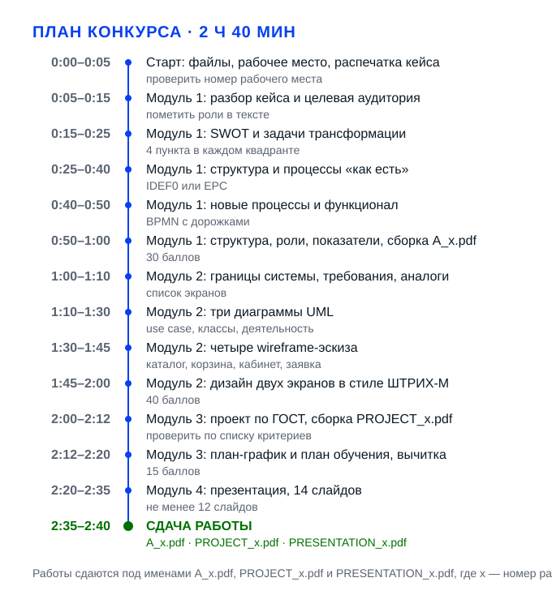
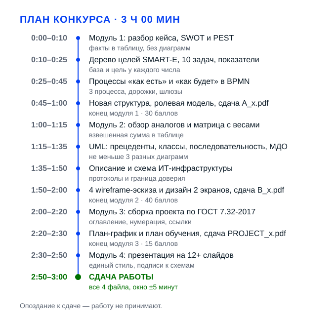
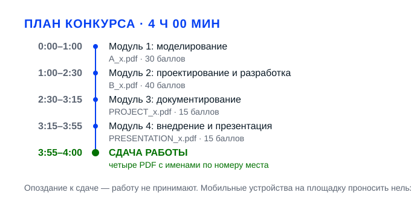

Цифровая трансформация бизнеса (Р)
Задания ниже — официальные файлы «Абилимпикс» (источник: abilympics-russia.ru), разложенные по категориям. Решения написаны по тексту задания, регламенту и критериям оценки; в них указано, что именно проверяет эксперт.
Школьник
14–16 лет, базовый уровень заданияВ официальном файле категории не разделены отдельными разделами — приводим задание целиком; различия по категориям смотрите в таблице модулей.
Пошаговое решение
Конкурсное задание категории «Школьники» — проект цифровой трансформации Центра отраслевых решений ШТРИХ-М, разработчика типового ПО для торговли и общепита с продажами через партнёров и интернет-магазин. На всё отводится 2 часа 40 минут и 100 баллов: 60 минут и 30 баллов на моделирование, 60 минут и 40 баллов на проектирование системы с тремя диаграммами UML и эскизами экранов, 20 минут и 15 баллов на проект по ГОСТ, 20 минут и 15 баллов на презентацию не менее чем из 12 слайдов. Сдаются три PDF-файла с номером рабочего места: A_x.pdf, PROJECT_x.pdf и PRESENTATION_x.pdf. Баллы набираются не одним сильным решением, а полнотой: критериев много, они мелкие, и почти каждый проверяется наличием конкретного элемента — целевой аудитории, показателей, трёх диаграмм, четырёх эскизов, двух экранов в корпоративном стиле. Поэтому шаги ниже идут в том порядке, в каком их удобно выполнять за столом.

Задача 1. Модуль 1: смоделировать цифровую трансформацию ЦОР ШТРИХ-ММодуль 1 · 30 баллов · 60 минут
Первый модуль — это шестьдесят минут и тридцать баллов из ста, причём тринадцать критериев расписаны по одному-два балла, то есть здесь выигрывают не одним сильным решением, а отсутствием провалов. Нужно прочитать кейс про Центр отраслевых решений ШТРИХ-М, показать сегодняшнюю структуру и сегодняшние процессы, предложить новые процессы с цифровым продуктом внутри, обосновать новую структуру и ролевую модель, посчитать количественные и качественные показатели и сдать всё одним PDF-файлом A_x.pdf, где x — номер рабочего места. Времени на переделку нет, поэтому порядок работы важнее вдохновения: сначала текст кейса и аудитория, потом анализ, потом схемы, в самом конце сборка документа.
Действие 1.1. Прочитать кейс и определить целевую аудиторию
Шаг 1.1.1
Берём распечатку кейса и читаем дважды: первый раз целиком, не останавливаясь, чтобы понять историю; второй раз с карандашом, обводя каждое слово, которое задаёт участника или ограничение — «продажа осуществляется через партнёров», «конечным пользователям непосредственную продажу не осуществляет», «выбрать партнёра, у которого приобретут продукты», «информация об оформленном заказе отправлена партнёру автоматически», На полях напротив каждой пометки пишем, кто в этом месте действует и что он получает, — так из текста вытягивается готовый список ролей, а не выдуманный.
Критерий «Анализ соответствует кейсу» стоит два балла и проверяется простым сопоставлением ваших формулировок с текстом задания. Если в работе появится розничная сеть магазинов или собственная доставка, которых в кейсе нет, эксперт увидит, что предметная область не изучена, и вместе с этими двумя баллами начнут разваливаться схемы процессов: они будут описывать чужую организацию.
Пролистайте распечатку и проверьте, что на каждой странице есть хотя бы одна пометка и что рядом с ней назван участник процесса. Отдельно выпишите на свободный лист три вещи: кто платит деньги, кто пользуется продуктом и кто его настраивает. Если все три ответа находятся в тексте дословно, кейс разобран достаточно.
Чаще всего кейс читают по диагонали и сразу начинают рисовать процессы «как обычно бывает в торговле». Через полчаса выясняется, что партнёр в вашей схеме отсутствует, а вся цепочка продаж в кейсе держится именно на нём, и перерисовывать приходится и процессы, и структуру, и ролевую модель — это минус шесть-семь баллов и потеря двадцати минут.
Эксперт подходит к рабочему месту в первые десять минут и смотрит, читает участник кейс или уже рисует. Распечатка с пометками и выписанными ролями читается как серьёзная работа с текстом и сразу задаёт правильное ожидание на весь модуль.
Шаг 1.1.2
На отдельном листе заводим таблицу из трёх колонок: группа, что ей нужно от организации, чем она пользуется сегодня. Заполняем по кейсу, ничего не додумывая: партнёры-интеграторы, которые находят клиента, покупают лицензии, ставят и сопровождают софт; конечные покупатели — небольшие магазины и точки общепита, которые приходят на сайт kkm.solutions и оформляют заказ сами; сотрудники ЦОР, которые ведут переговоры вместе с партнёром и делают уникальную функциональность по договору подряда. Отдельной строкой идёт учебный центр, если он есть, — обучение в схеме автоматизации упомянуто прямо.
Критерий «Приведена целевая аудитория проекта трансформации» — два балла, и это самый дешёвый балл модуля: он ставится за то, что аудитория названа и разделена, а не за объём текста. Разделение нужно ещё и практически: у партнёра и у конечного покупателя разные экраны и разные права, и без этого разделения невозможно построить ни ролевую модель, ни wireframes во втором модуле.
Проверьте, что каждая группа из таблицы встречается в тексте кейса и что у каждой названа хотя бы одна задача, которую она решает. Если какая-то группа появилась только из общих соображений — уберите её или найдите ей подтверждение в кейсе. Три-четыре группы достаточно, восемь групп на школьном уровне выглядят как список ради списка.
Ошибка — написать «целевая аудитория: юридические и физические лица». Такая строка не даёт ни одного балла, потому что из неё не следует ни один экран. Вторая ошибка — забыть конечного покупателя, решив, что раз продажи идут через партнёров, то он не важен: в кейсе прямо описан интернет-магазин, где покупатель наполняет корзину и выбирает партнёра.
Эксперт смотрит на таблицу и мысленно примеряет её к ролевой модели: если группы совпадают, дальше он читает работу спокойно, если нет — ищет причину и снимает баллы уже за несогласованность.
Действие 1.2. Провести стратегический анализ и сформулировать задачи трансформации
Шаг 1.2.1
Рисуем квадрат SWOT и заполняем четыре поля по четыре пункта, каждый — фраза с фактом из кейса, а не слово. В сильные стороны: собственные линейки ПО для торговли и общепита, готовая партнёрская сеть, интернет-магазин с рекомендованными розничными ценами, возможность заказной разработки. В слабые: заказ приходит партнёру письмом, у ЦОР нет прямой связи с конечным покупателем после передачи заказа, статус заявки на доработку нигде не виден. В возможности: спрос на переавтоматизацию и аналитика по регионам. В угрозы: конкуренты с готовыми маркетплейсами интеграторов, потеря партнёра-лидера.
Критерий «Анализ соответствует кейсу» опирается именно на факты, и SWOT — то место, где факты видно лучше всего. Кроме того, слабые стороны из левого нижнего квадранта превращаются в задачи трансформации, а это следующий критерий на два балла: анализ перестаёт быть украшением и начинает работать на проект, что эксперт отмечает отдельно.
Проверьте себя так: рядом с каждым пунктом SWOT мысленно поставьте номер абзаца кейса, откуда он взят. Если хоть один пункт не находится в тексте, он либо выдуман, либо слишком общий — «недостаточная цифровизация» такого подтверждения не имеет и балла не приносит.
Классическая ошибка — заполнить SWOT словами «высокая конкуренция», «квалифицированный персонал», «нестабильная экономика». Такие пункты подходят любой компании и поэтому не описывают ни одну. Вторая ошибка — написать два пункта в поле и остановиться: пустой квадрант читается как незаконченный анализ.
Эксперт читает SWOT целиком и смотрит на связку с задачами трансформации: если задачи выросли из слабых сторон и угроз, анализ признаётся рабочим. Отдельно он смотрит, попали ли в SWOT слабые стороны, связанные с ручной передачей заказов: именно из них потом вырастают задачи.
Шаг 1.2.2
Дописываем под SWOT короткий вывод на пять-семь предложений: какая именно проблема мешает организации зарабатывать больше при том, что продукт у неё есть. Формулируем её через процесс, а не через эмоции: заказ, оформленный покупателем на сайте, уходит партнёру без единого статуса, партнёр связывается с клиентом вручную, и ЦОР не знает, чем закончилась сделка; заявка на уникальную функциональность идёт по почте и теряет сроки. Дальше одной фразой фиксируем, что из этого следует для проекта: нужен сквозной цифровой канал от заказа до внедрения, где видны все участники и все статусы.
Вывод — это мостик между анализом и моделью, и без него работа выглядит как набор отдельных упражнений. Критерий «Приведены задачи трансформации проекта» на два балла ставится за то, что задачи вытекают из анализа, а не появляются в документе сами по себе. Плюс этот абзац потом почти дословно переходит в презентацию четвёртого модуля, где на него есть отдельный слайд.
Проверьте, что в выводе названы три вещи: конкретный процесс, конкретный разрыв в нём и то, что должно измениться. Если получается «нужно внедрить цифровые технологии», переписывайте: в такой формулировке нет ни процесса, ни разрыва.
Ошибка — уйти в перечисление всех проблем сразу и получить абзац, из которого не следует ни одна задача. Вторая ошибка — наоборот, сузить всё до одной технической детали вроде «сделать красивый личный кабинет»: красивый кабинет не решает разрыв в передаче заказа, и проект теряет обоснование.
Эксперт ищет в выводе причинно-следственную связь и оценивает, сможет ли участник через два часа объяснить, зачем всё это делалось. Если вывод звучит как пересказ кейса, он просит сформулировать разрыв одной фразой — это вопрос на понимание.
Шаг 1.2.3
Формулируем четыре-пять задач трансформации, каждая начинается с глагола и имеет измеримый предмет: перевести передачу заказа из интернет-магазина партнёру в автоматический канал со статусами; дать партнёру личный кабинет с заявками, лицензиями и базой знаний; собрать единый реестр заявок на уникальную функциональность со сроками и ответственными; ввести аналитику по регионам и партнёрам; подготовить сотрудников и партнёров к работе в новой системе. Задачи нумеруем — дальше на них ссылаются схемы процессов и показатели.
Критерий «Приведены задачи трансформации проекта» даёт два балла, и нумерация здесь не формальность: когда задачи пронумерованы, эксперт может пройти по документу и увидеть, что каждая из них закрыта процессом, функцией продукта и показателем. Именно эта прослеживаемость отличает проект от набора картинок и обычно вытягивает оценку сразу в трёх модулях.
Проверьте, что каждая задача содержит глагол действия, объект и признак результата. Затем возьмите лист и напротив каждой задачи поставьте галочку, если в работе уже есть место, где она решается; задачи без галочек — это обещания, за которые баллы не дают.
Ошибка — написать задачи в духе «повысить эффективность», «улучшить качество обслуживания». Такие формулировки невозможно проверить, и в критерии они не засчитываются. Вторая ошибка — сделать задач двенадцать: они начинают дублировать друг друга, и в схемы попадает половина.
Эксперт сверяет количество задач с количеством новых процессов на схеме: обычно их должно быть столько же или чуть меньше. Лишние задачи, под которые нет ни процесса, ни показателя, он отмечает как декларации и балл за них не ставит.
Действие 1.3. Показать текущую структуру и процессы «как есть»
Шаг 1.3.1
Чертим текущую организационную структуру ЦОР ШТРИХ-М: сверху генеральный директор, под ним разработка типового ПО, отдел работы с партнёрами, интернет-магазин и продажи, отдел заказной разработки, поддержка и учебный центр. Рисуем прямоугольники с названиями подразделений, соединяем линиями подчинения, у каждого блока подписываем одну функцию. Схему делаем горизонтальной и читаемой: не больше шести блоков в ряд, шрифт не мельче двенадцати пунктов, чтобы её было видно на экране и в распечатке.
Критерий «Представлена текущая структура организации» — часть анализа на два балла, и структура нужна как точка отсчёта: новая структура через двадцать минут оценивается сравнением с этой, и если текущей нет, сравнение невозможно. Кроме того, на схеме видно, где в организации живёт каждый процесс, а это следующее действие.
Проверьте, что каждый блок на схеме имеет название и функцию и что ни один блок не висит без линии подчинения. Распечатайте или уменьшите схему до размера страницы: если подписи сливаются, значит, блоков слишком много и часть из них пора объединить.
Ошибка — нарисовать структуру «идеальной компании» с отделами цифровой трансформации и аналитики, которых в кейсе нет. Текущая структура должна показывать то, что есть сегодня, иначе весь смысл преобразования пропадает. Вторая ошибка — схема из двадцати мелких блоков, которую невозможно прочитать.
Эксперт смотрит на схему до чтения текста: если она читается за пять секунд, дальше он ищет на ней подразделения, названные в кейсе. Если на схеме появился отдел цифровой трансформации, которого нет в кейсе, он спрашивает, откуда он взялся.
Шаг 1.3.2
Рисуем процесс продажи через партнёра в нотации IDEF0 или EPC, как удобнее, но обязательно с указанием входа, выхода, участников и управляющих документов. Цепочка такая: партнёр находит клиента, согласует схему работы, приобретает нужное количество лицензий у ЦОР, устанавливает и настраивает софт, обучает сотрудников клиента и заключает договор на сопровождение. На схеме подписываем, где процесс рвётся: между покупкой лицензий и установкой нет автоматической передачи данных, а обратная связь по качеству внедрения в ЦОР не возвращается.
Критерий «Представлены текущие бизнес-процессы» — два балла, и разрывы на схеме ценны не меньше самой схемы: именно они обосновывают, зачем нужен цифровой продукт. Схема «как есть» с честно отмеченными разрывами сразу показывает, что участник понимает разницу между рисованием и анализом.
Проверьте по схеме, что у каждого блока есть исполнитель, а у стрелок — подписи. Пройдите цепочку пальцем от первого события до последнего: если где-то действие делается «само собой», значит, блок пропущен и его надо дорисовать.
Ошибка — нарисовать процесс в виде пяти прямоугольников со стрелками без подписей: эксперт не может проверить, соответствует ли он кейсу, и балл снижается. Вторая ошибка — смешать в одной схеме процесс продажи и процесс разработки, тогда ни один из них не читается.
Эксперт ищет на схеме упомянутые в кейсе документы и договоры: если они подписаны, процесс признаётся соответствующим предметной области. Отсутствие договоров и лицензий на схеме читается как незнание предметной области.
Шаг 1.3.3
Второй схемой показываем путь самостоятельной покупки через интернет-магазин: посетитель открывает страницу продукта, видит рекомендованную розничную цену, наполняет корзину вариантами поставки, выбирает партнёра, оформляет заказ, после чего информация автоматически уходит партнёру, а партнёр связывается с покупателем. Отмечаем на схеме два слабых места: покупатель не видит, на каком этапе его заказ, а ЦОР не получает статистику по конверсии от партнёра к сделке.
Эта схема закрывает тот же критерий текущих процессов, но с другой стороны, и без неё половина кейса остаётся неразобранной. Кроме того, она напрямую готовит почву для цифрового продукта: личный кабинет покупателя и партнёра вырастает именно из этих двух разрывов, и на защите участник показывает их как источник требований.
Проверьте, что на схеме есть все пять участников цепочки: покупатель, сайт, заказ, партнёр, сделка. Убедитесь, что подписано, где именно заказ передаётся партнёру — в кейсе сказано «автоматически», и это слово на схеме должно быть видно.
Ошибка — срисовать схему с сайта магазина, забыв партнёра: тогда теряется главная особенность кейса. Вторая ошибка — не показать момент передачи заказа, из-за чего цифровой продукт потом выглядит надуманным.
Эксперт сравнивает две схемы между собой: если процессы не пересекаются и не дополняют друг друга, он делает вывод, что участник не свёл анализ воедино.
Действие 1.4. Построить новые процессы и описать функционал цифрового продукта
Шаг 1.4.1
Выбираем одну нотацию для новых процессов — BPMN, потому что в ней есть дорожки участников и она понятна и заказчику, и разработчику. Рисуем сквозной процесс «заказ — внедрение — сопровождение» на четырёх дорожках: покупатель, цифровая платформа ЦОР, партнёр, служба заказной разработки. В каждом шаге ставим событие начала и конца, между дорожками — сообщения, а не просто стрелки. На схеме должно быть видно, что заказ попадает в личный кабинет партнёра автоматически, статус меняется по действиям партнёра, а заявка на уникальную функциональность уходит в реестр с номером и сроком.
Критерий «Представлены новые бизнес-процессы» — три балла, самый дорогой в первой половине модуля, и оценивается не красота, а наличие дорожек, событий и передачи данных между участниками. Кроме того, следующий критерий требует, чтобы новые процессы трансформировали деятельность организации, то есть меняли не подписи, а сам порядок работы: раньше партнёр узнавал о заказе из письма, теперь из кабинета.
Проверьте схему тремя вопросами: кто выполняет каждое действие, какое событие запускает следующий шаг и что происходит, если партнёр не отреагировал за сутки. Если на третий вопрос на схеме нет ветки, добавьте её — именно такие ветки показывают, что процесс продуман, а не нарисован.
Ошибка — нарисовать BPMN без дорожек, то есть повторить блок-схему из учебника: тогда непонятно, кто отвечает за шаг, и три балла превращаются в один. Вторая ошибка — оставить на новой схеме ручную передачу заказа, скопировав процесс «как есть»: трансформации нет, и критерий не закрывается.
Эксперт смотрит на дорожки и на автоматические переходы: наличие дорожки «цифровая платформа» с тремя-четырьмя действиями — для него главный признак того, что продукт действительно встроен в работу.
Шаг 1.4.2
Описываем функционал продукта списком из восьми-десяти функций, сгруппированных по ролям, и сразу привязываем каждую к шагу процесса. Для покупателя: каталог с рекомендованными ценами, корзина, выбор партнёра, отслеживание статуса заказа, история лицензий. Для партнёра: входящие заявки с контактами, карточка сделки со статусами, реестр лицензий клиента, база знаний и шаблоны договоров, заявка на уникальную доработку. Для сотрудника ЦОР: панель всех партнёров и регионов, аналитика конверсии, очередь заявок на доработку со сроками. Для службы поддержки: история обращений по клиенту.
Критерий «Функциональные характеристики цифрового продукта соответствуют бизнес-процессам» стоит три балла, и проверяется он сопоставлением: у каждого шага нового процесса должна найтись функция, и наоборот. Список по ролям нужен ещё и потому, что через двадцать минут из него вырастут диаграмма вариантов использования и wireframes — то есть одни и те же формулировки отработают в двух модулях.
Проверьте, что функций не меньше, чем шагов на дорожке «цифровая платформа», и что ни одна функция не описывает то, чего в процессе нет. Затем пройдите по списку и отметьте функции, которые нужны в минимальном демонстрационном образце: их должно получиться ровно столько, сколько экранов вы успеете нарисовать.
Ошибка — написать «личный кабинет с широкими возможностями»: такая формулировка не даёт ни одного балла, потому что из неё нельзя сделать экран. Вторая ошибка — перечислить функции, которых нет в процессах, например онлайн-оплату, которую кейс не предполагает: эксперт видит расхождение и снимает баллы за соответствие.
Эксперт берёт вашу схему процесса и ваш список функций и ищет несоответствия: совпадение один к одному он отмечает как сильную сторону работы. Функции, которые нельзя показать на экране, он помечает как декларативные и балл за них не начисляет.
Шаг 1.4.3
Проверяем связку «процесс — функция» на бумаге: берём схему из шага 1.4.1 и проставляем на стрелках номера функций из списка 1.4.2. Там, где стрелка осталась без номера, либо функция потерялась, либо шаг на схеме лишний — решаем, что исправлять, и правим. Отдельно проверяем, что продукт покрывает не весь бизнес организации, а именно те процессы, которые мы трансформируем, и что это ограничение обосновано в тексте одним абзацем: заказная разработка остаётся в обычной почте только на первом этапе, потому что объём заявок мал.
Критерий «Модель цифрового продукта охватывает весь функционал» во втором модуле проверяется именно так — сверкой схем и списка, и лучше сделать эту сверку самому, чем ждать, пока её сделает эксперт. Обоснованное ограничение охвата тоже важно: в задании прямо сказано, что систему можно разработать для всех процессов или для их части, но решение нужно обосновать.
Проверьте, что каждая стрелка на схеме имеет номер функции или явную пометку «вне охвата первого этапа». Если пометок больше двух, охват слишком узкий и продукт выглядит необязательным; если пометок нет вообще, вы, скорее всего, описываете всю компанию целиком и не успеете показать её на экранах.
Ошибка — оставить схему и список функций в разных частях документа без связи. Эксперт читает их подряд и не находит соответствия, хотя формально оба элемента есть. Вторая ошибка — расширять охват по ходу работы, когда времени осталось двадцать минут.
Эксперт проверяет связность документа: подписи на схеме и названия функций должны совпадать дословно, а не «примерно по смыслу». Он же смотрит, не расширился ли охват по ходу работы: модель, описывающая всю компанию, кажется ему нереализуемой за два часа.
Действие 1.5. Обосновать новую структуру и собрать ролевую модель
Шаг 1.5.1
Выбираем тип новой структуры и обосновываем его тремя-четырьмя предложениями: линейно-функциональная основа сохраняется, но добавляется процессное звено — дирекция цифровых продуктов, которой подчиняются владелец платформы, аналитик, администратор личного кабинета и специалист по обучению партнёров. Рисуем схему так же, как текущую, чтобы их можно было сравнить: те же блоки на своих местах, новые выделены цветом или штриховкой, убранные — пунктиром с пометкой. Обязательно показываем, куда переходит функция сопровождения партнёров и кто теперь отвечает за реестр заявок.
Критерий «Представлена новая структура организации» — два балла в первом модуле и ещё один в третьем, и обоснование типа структуры в задании требуется отдельно. Сравнение двух схем на одном развороте работает лучше любого текста: эксперт видит изменение сразу, а не разыскивает его по абзацам. Цветовое выделение новых блоков ещё и экономит ваши слова.
Проверьте, что на новой схеме каждый новый блок закрывает хотя бы одну задачу трансформации из шага 1.2.3 и что ни один блок не появился «на будущее». Сравните количество блоков: обычно новых два-четыре, а не десять — десять новых отделов в школьном проекте выглядят как фантазия.
Ошибка — нарисовать красивую структуру, никак не связанную с процессами: тогда эксперт не может понять, зачем она нужна. Вторая ошибка — не показать, что стало с прежними подразделениями, из-за чего возникает ощущение, что структура нарисована с нуля для другой компании.
Эксперт сопоставляет новую структуру с новой схемой процессов и ищет, есть ли в структуре владелец платформы: без него цифровой продукт в организации ничей.
Шаг 1.5.2
Собираем ролевую модель таблицей: роль, подразделение, что делает в системе, какие данные видит, что решает. Обязательно включаем три группы: новые сотрудники (владелец платформы, администратор кабинета), изменившиеся роли (менеджер по работе с партнёрами теперь не пересылает заказы, а контролирует просроченные статусы; специалист заказной разработки ведёт реестр заявок) и те, кто напрямую связан с продуктом (партнёр-интегратор, сотрудник поддержки). Внешними участниками добавляем покупателя и, если нужно, бухгалтера партнёра, который получает счёт.
Критерий «Ролевая модель привязана к структуре организации» — два балла, и слово «привязана» означает, что у каждой роли в таблице стоит подразделение из схемы 1.5.1. Ролевая модель нужна и практически: права доступа на экранах второго модуля рисуются прямо из неё, и если роли не описаны, wireframes получаются безликими.
Проверьте, что количество ролей совпадает с количеством дорожек на схеме процесса плюс одна-две служебные роли. У каждой роли должно быть не меньше двух действий в системе; роль с одним действием обычно означает, что она на самом деле часть другой роли.
Ошибка — описать роли словами «пользователь», «администратор», «менеджер» без привязки к подразделениям: балл не ставится, потому что связь со структурой не видна. Вторая ошибка — забыть внешних участников, хотя в задании про них сказано отдельно, а в кейсе внешний участник — это весь партнёрский канал.
Эксперт ищет в таблице строку с партнёром и строку с покупателем: их наличие показывает, что участник прочитал требование про внешнюю среду. Роль без подразделения он считает не привязанной к структуре и балл снижает.
Действие 1.6. Посчитать показатели и собрать документ A_x.pdf
Шаг 1.6.1
Пишем количественные показатели проекта, каждый с текущим и целевым значением и со сроком: время от оформления заказа до первого контакта партнёра — с двух суток до двух часов; доля заказов, по которым статус заполнен в системе, — с нуля до девяноста пяти процентов; срок согласования заявки на уникальную функциональность — с десяти дней до трёх; число партнёров, работающих через кабинет, — двадцать из двадцати пяти в первый год; доля повторных обращений в поддержку — минус треть. Значения берём правдоподобные и объясняем в одной строке, откуда они взялись.
Критерий «Приведены количественные показатели проекта трансформации» — три балла, и это те баллы, которые теряют чаще всего, потому что участники пишут «ускорить обработку заказов» без чисел. Показатель с текущим и целевым значением доказывает, что проект измерим, а измеримость — то, за что в этом модуле дают максимум.
Проверьте каждый показатель тремя вопросами: можно ли его посчитать по данным системы, есть ли у него текущее значение и указан ли срок достижения. Показатель, который нельзя посчитать, заменяйте или убирайте: «повышение лояльности на тридцать процентов» без методики измерения выглядит как выдумка.
Ошибка — написать только целевые значения без текущих: тогда непонятно, от чего считается улучшение, и балл снижается. Вторая ошибка — взять круглые числа вроде «увеличить прибыль в десять раз»: они не связаны с описанными процессами и читаются как обещание.
Эксперт сверяет показатели с процессами и функциями: если показатель нельзя посчитать по данным описанной системы, он считает его декларативным. Показатель без текущего значения он отмечает как лозунг и балл за него не ставит.
Шаг 1.6.2
Дописываем качественные показатели, которые показывают изменение работы, а не только скорости: у партнёра появился единый вход по всем клиентам и лицензиям; ЦОР видит конверсию от заказа до сделки по каждому региону; заявка на доработку имеет владельца и срок; обучение новых партнёров идёт по единой базе знаний, а не по пересказам; покупатель может сам посмотреть, на каком этапе его заказ. Формулируем каждый показатель так, чтобы его можно было подтвердить документом или скриншотом через полгода после внедрения.
Критерий «Приведены качественные показатели проекта трансформации» — три балла, и именно качественные показатели связывают проект с целями организации: количество заказов растёт не само по себе, а потому что партнёр перестал терять заявки. Пара «количественные плюс качественные» закрывает шесть баллов модуля и почти всегда отличает сильную работу от средней.
Проверьте, что качественных показателей не меньше четырёх и что каждый из них опирается на функцию продукта или на новую роль. Если показатель невозможно проиллюстрировать, значит, он сформулирован слишком общо — переписывайте до состояния «это видно в системе».
Ошибка — переписать количественные показатели словами и назвать это качественными: эксперт видит дубль и не засчитывает второй критерий. Вторая ошибка — ограничиться одной фразой «улучшится взаимодействие с партнёрами».
Эксперт сравнивает два блока показателей между собой и с целями из шага 1.2.2: согласованность здесь ценится выше количества пунктов. Дубли количественных показателей словами он распознаёт сразу и второй балл не начисляет.
Шаг 1.6.3
Собираем всё в один PDF и сохраняем под именем A_x.pdf, где x — номер рабочего места. Порядок разделов: титульный лист с названием проекта и номером места, содержание, краткое описание организации и целевой аудитории, стратегический анализ с выводом, задачи трансформации, текущая структура и процессы, новые процессы, функционал продукта, новая структура и ролевая модель, показатели, приложения со схемами. Каждую схему подписываем «Рисунок N — название» и ставим ссылку на неё в тексте, таблицы нумеруем отдельно, страницы нумеруем с первого листа.
Документ — это и есть выход модуля: в задании сказано, что данные представляются одним PDF-файлом с именем A_x.pdf, и работа, сданная набором картинок в папке, к проверке не принимается. Структура и подписи влияют на оценку напрямую: критерии модуля перечисляют элементы, и эксперту нужно найти каждый из них за отведённые секунды, а не разыскивать по всему файлу.
Откройте готовый PDF на другом устройстве или хотя бы в полноэкранном просмотре и пролистайте: все схемы видны целиком, ничего не обрезано по краю, шрифт читается, номера страниц на месте, имя файла ровно A_x.pdf. Проверьте, что содержание совпадает с фактическими страницами — это первое, что смотрят.
Ошибка — сохранить файл под именем «проект_финал_2.pdf»: работу с неверным именем могут не найти при сборе. Вторая ошибка — вставить схемы скриншотами с экрана, мелкими и с обрезанными подписями: даже правильная схема в таком виде не читается и баллов не приносит.
Эксперт открывает файл и идёт по критериям модуля сверху вниз; если нужный элемент не находится за десять-пятнадцать секунд, он отмечает его как отсутствующий.
Задача 2. Модуль 2: спроектировать систему и нарисовать экраныМодуль 2 · 40 баллов · 60 минут
Второй модуль — самый дорогой: сорок баллов из ста за шестьдесят минут, и почти половина этих баллов приходится на рисунки. Нужно перевести придуманные процессы в модель информационной системы по UML минимум с тремя разными диаграммами, нарисовать не менее четырёх wireframe-эскизов экранных форм минимального демонстрационного образца и сделать дизайн минимум двух страниц в корпоративном стиле ШТРИХ-М. Здесь важно не увлечься красотой: баллы дают за корректность нотации, за соответствие эскизов функциональным требованиям из первого модуля и за единый стиль, а не за художественность.
Действие 2.1. Определить границы системы и состав экранов
Шаг 2.1.1
Открываем лист с функциями из шага 1.4.2 и решаем, что именно попадает в минимальный демонстрационный образец. Спокойно и без амбиций: каталог с ценами, карточка продукта с корзиной, выбор партнёра и статус заказа, кабинет партнёра с заявками. Всё остальное — аналитика, реестр доработок, база знаний — остаётся в модели, но не на экранах, и это записывается одной строкой как обоснование. Рядом перечисляем аналоги, на которые смотрели при выборе решения, с одной фразой о том, что берём и чего избегаем.
Критерий «Модель цифрового продукта охватывает весь функционал» — три балла, и он не требует нарисовать всё: он требует, чтобы охват был определён и обоснован. Границы, зафиксированные на бумаге до рисования, экономят время: на четыре экрана уходит около тридцати минут, а на шесть не хватит и пятидесяти.
Проверьте, что каждый экран из списка закрывает хотя бы одну функцию и что функций вне экранов не больше трети. Если вне экранов остаётся больше половины, сузьте проект: минимальный демонстрационный образец по определению не покрывает всю систему.
Ошибка — начать рисовать с самого интересного экрана, кабинета партнёра, и обнаружить, что каталог, с которого начинается путь покупателя, рисовать уже некогда. Вторая ошибка — заявить в модели десять экранов, а показать три: расхождение модели и эскизов эксперт замечает сразу.
Эксперт сверяет количество экранов с количеством диаграмм и с текстом первого модуля: связность здесь важнее объёма. Если экранов заявлено больше, чем нарисовано, он считает модель необеспеченной и снимает балл за охват.
Шаг 2.1.2
Формулируем функциональные требования к каждому экрану отдельными строками, в формате «роль — действие — результат»: покупатель выбирает вариант поставки и видит рекомендованную цену; покупатель выбирает партнёра из списка своего региона; партнёр видит новую заявку с контактами и меняет статус; партнёр открывает карточку клиента со всеми лицензиями. Требования нумеруем, чтобы потом сослаться на них подписью под эскизом.
Критерий «Эскизы соответствуют функциональным требованиям» — три балла, и проверяется он именно наличием требований: эксперт ищет список, по которому можно сверить рисунки. Если требований нет, соответствовать нечему, и балл уходит независимо от качества эскизов. Нумерация даёт вам же быстрый способ проверить работу перед сдачей.
Проверьте, что требований не меньше, чем экранов, и что каждое содержит роль. Требование без роли («есть поиск по каталогу») не позволяет нарисовать экран: непонятно, кому и зачем он нужен. Требований меньше, чем экранов, быть не должно: каждый экран закрывает хотя бы одно.
Ошибка — написать требования после эскизов, подгоняя их под то, что получилось: тогда соответствие формальное, и на вопрос эксперта «почему здесь нет выбора партнёра» ответить нечего. Вторая ошибка — двадцать требований на четыре экрана, из которых половина не реализована в рисунках.
Эксперт берёт ваш список требований и по нему проходит экраны; несовпадения отмечает построчно, поэтому лишние требования хуже, чем их отсутствие. Требование, которое не отражено ни на одном эскизе, он вычёркивает и балл за соответствие снижает.
Действие 2.2. Нарисовать три диаграммы UML разных типов
Шаг 2.2.1
Первая диаграмма — вариантов использования. Рисуем границу системы прямоугольником с названием «ЦОР.Партнёр», слева за границей ставим актёров: покупатель, партнёр-интегратор, менеджер ЦОР, специалист поддержки. Внутри — овалы вариантов: оформить заказ, выбрать партнёра, отследить статус, принять заявку, изменить статус сделки, оформить заявку на доработку, посмотреть аналитику. Соединяем актёров с вариантами сплошными линиями и обязательно ставим два-три отношения include там, где один вариант включает другой: оформление заказа включает выбор партнёра.
Критерий «Представлены 3 корректные диаграммы UML разных типов» — три балла, и первая диаграмма задаёт язык всей модели: актёры отсюда должны совпадать с ролями из первого модуля. Именно на этой диаграмме видно, что система обслуживает внешнюю среду, а в задании про взаимодействие с внешней средой сказано отдельно.
Проверьте, что актёры стоят за границей системы, варианты — внутри, у каждого актёра есть хотя бы две связи, а названия вариантов начинаются с глагола. Уберите варианты, которые никому не нужны: «войти в систему» отдельным овалом обычно лишний, вход — это include у остальных.
Ошибка — нарисовать актёров внутри прямоугольника системы: грубая ошибка нотации, из-за которой диаграмма перестаёт быть корректной. Вторая ошибка — сделать единственным актёром «пользователя», тогда диаграмма не показывает разницу прав партнёра и покупателя.
Эксперт проверяет нотацию буквально: актёры-человечки, овалы, граница системы, подписи связей. Одна грубая ошибка стоит балла из трёх. Актёр «пользователь» без разделения на партнёра и покупателя читается им как непонимание ролей.
Шаг 2.2.2
Вторая диаграмма — классов или сущностей. Выделяем шесть-семь классов: Покупатель, Партнёр, Заказ, ПозицияЗаказа, Продукт, Лицензия, ЗаявкаНаДоработку. В каждом прописываем три-пять атрибутов с типами (номер, дата, статус, сумма, регион) и главные операции: создать, изменить статус, назначить партнёра. Между классами ставим связи с кратностями: покупатель оформляет один или много заказов, заказ содержит одну или много позиций, партнёр получает много заказов, лицензия привязана к одному продукту.
Эта диаграмма закрывает критерий «исчерпывающая модель информационной системы по UML» на три балла: именно классы с атрибутами и кратностями показывают, что модель не декоративная, а описывает данные, с которыми будет работать система. Заодно она проверяет вашу модель на прочность: если у заказа нет статуса, значит, процесс со статусами из первого модуля ничем не поддержан.
Проверьте, что у каждой связи есть кратность с обеих сторон и что ни один класс не висит без связей. Сверьте атрибуты со списком функций: если функция «отследить статус» есть, а атрибута «статус» нет, модель неполная.
Ошибка — нарисовать классы без атрибутов, только с названиями: это выглядит как список, а не как модель, и балл снижается. Вторая ошибка — кратности «один к одному» везде, что противоречит кейсу, где у партнёра много клиентов и заказов.
Эксперт смотрит на атрибуты и кратности: наличие дат, статусов и сумм — признак того, что участник понимает, какие данные будут храниться. Класс без атрибутов он считает списком, а не моделью, и балл за исчерпывающую модель снижает.
Шаг 2.2.3
Третья диаграмма — деятельности или последовательности, на выбор, но с полным сценарием. Если деятельности: начальный узел, действие покупателя «оформить заказ», проверка «партнёр выбран?», ветка «нет» с возвратом к выбору, действие системы «создать заявку и уведомить партнёра», действие партнёра «принять заявку», развилка по сроку реакции и конечный узел. Если последовательности — те же шаги как сообщения между линиями жизни покупателя, системы и партнёра.
Критерий требует три диаграммы разных типов, и третья должна показывать динамику: первые две описывают, кто и с какими данными работает, а эта — в каком порядке всё происходит. Она же напрямую доказывает соответствие модели новым бизнес-процессам, за которое дают ещё три балла.
Проверьте, что на диаграмме есть начальный и конечный узлы, хотя бы одна развилка и что каждое действие начинается с глагола. Пройдите сценарий по шагам и спросите себя, что будет, если партнёр не ответил: если на схеме нет такой ветки, добавьте её — она самая убедительная.
Ошибка — нарисовать линейную цепочку без развилок: она не показывает ни одного решения, а значит, не описывает процесс. Вторая ошибка — перепутать диаграмму деятельности с блок-схемой алгоритма и потерять дорожки участников.
Эксперт ищет на третьей диаграмме ветвление и участников: развилка с таймаутом считается сильной деталью. Если на третьей диаграмме нет ни одной развилки, он делает вывод, что сценарий не продуман, и балл снижает.
Шаг 2.2.4
Проверяем все три диаграммы на согласованность между собой и с первым модулем: актёры диаграммы вариантов совпадают с ролями ролевой модели, классы называют те же объекты, что подписаны на схеме процессов, а действия диаграммы деятельности соответствуют шагам новой схемы BPMN. Под каждой диаграммой ставим подпись с типом и названием: «Рисунок 5 — Диаграмма вариантов использования системы ЦОР.Партнёр».
Критерий «Модель цифрового продукта соответствует новым бизнес-процессам» — три балла, и он ставится именно за согласованность: три красивые, но разные по терминологии диаграммы читаются как три отдельных упражнения. Единые названия объектов — самый быстрый способ показать, что модель цельная.
Возьмите три диаграммы и выпишите все названия объектов, актёров и действий. Одинаковые сущности должны называться одинаково во всех трёх местах, без вариантов «Заказ» и «заявка покупателя» для одного и того же. Если названия расходятся, приведите к одному.
Ошибка — назвать на одной диаграмме партнёра Partner, на другой «Партнёр», на третьей «интегратор»: эксперт считает, что это разные роли. Вторая ошибка — оставить диаграммы без подписей и номеров, из-за чего в тексте на них невозможно сослаться.
Эксперт пролистывает три диаграммы подряд и отмечает расхождения в названиях как несоответствие модели процессам. Расхождение названий он фиксирует как несоответствие модели процессам, даже если каждая диаграмма по отдельности корректна.
Действие 2.3. Нарисовать wireframe-эскизы экранных форм
Шаг 2.3.1
Рисуем первый эскиз — каталог продуктов для покупателя. Формат экрана берём горизонтальный, 1440 на 900, делим на зоны: шапка с логотипом и корзиной, строка поиска, фильтры слева (сфера применения, вариант поставки), сетка карточек три в ряд. В карточке: название линейки, назначение в одну строку, рекомендованная розничная цена, кнопка «В корзину». Рисуем только прямоугольники, линии и подписи, без цветов и картинок — это каркас, а не дизайн.
Критерий «Представлены 3 Wireframes — эскиза, соответствующие кейсу» стоит пять баллов, самый дорогой в модуле, причём в тексте задания требуется не менее четырёх эскизов. Рисуем четыре, чтобы закрыть и требование текста, и критерий. Каталог идёт первым, потому что именно с него в кейсе начинается самостоятельная покупка.
Проверьте, что на каркасе видны все зоны и что подписаны элементы, которые неочевидны. Посмотрите на эскиз с расстояния вытянутой руки: если непонятно, где каталог, а где корзина, значит, зоны не читаются и надо усилить разделение.
Ошибка — сразу рисовать красивые карточки с фотографиями и тенями, потратив на один экран двадцать минут. Каркас оценивается по составу элементов, а не по оформлению. Вторая ошибка — забыть цену, хотя в кейсе про рекомендованные розничные цены сказано прямо.
Эксперт ищет на эскизе элементы, названные в кейсе: цена, варианты поставки, выбор партнёра. Их отсутствие — минус баллы за соответствие кейсу. Отсутствие цены и вариантов поставки он считает расхождением с кейсом и снимает балл за соответствие.
Шаг 2.3.2
Второй эскиз — карточка продукта с корзиной и выбором партнёра. Слева описание линейки и варианты поставки с ценами, справа блок «Оформление»: выбранный вариант, количество лицензий, список партнёров региона с адресом и телефоном, кнопка «Оформить заказ». Ниже — короткая плашка «После оформления заказ автоматически поступит выбранному партнёру», потому что это ключевой момент кейса и его надо показать на экране, а не только в тексте.
Критерий «Эскизы соответствуют функциональным требованиям» — три балла, и здесь закрываются сразу три требования из шага 2.1.2: выбор варианта поставки, выбор партнёра и передача заказа. Один экран, на котором видны все три, экономит время и уменьшает количество рисунков, которые нужно доводить.
Проверьте, что на экране есть ровно один основной путь: выбрать вариант, указать количество, выбрать партнёра, нажать кнопку. Если путь разрывается или требует вернуться назад, экран спроектирован неверно, и это видно без всяких пояснений.
Ошибка — разнести выбор партнёра на отдельный шаг, которого нет в требованиях, и получить расхождение с моделью. Вторая ошибка — не показать, что заказ уходит партнёру: тогда экран не отличается от обычного интернет-магазина, а кейс именно про партнёрскую схему.
Эксперт смотрит, попал ли на экран партнёр: в этом кейсе он главный участник сделки, и его отсутствие на экране покупки — заметная потеря. Если экран покупки не отличается от обычного магазина, он отмечает, что кейс прочитан невнимательно.
Шаг 2.3.3
Третий эскиз — кабинет партнёра, список заявок. Слева меню: заявки, клиенты, лицензии, заявки на доработку, база знаний. В основной зоне таблица: номер заказа, дата, покупатель, продукт, сумма, статус, срок реакции. Над таблицей — фильтр по статусу и счётчик новых заявок. Статусы подписываем словами из процесса: новый, принят, согласование, сделка, отказ. Справа — выдвижная карточка заявки с контактами и кнопкой «Принять».
Этот экран закрывает пять баллов за wireframes вместе с предыдущими и три балла за соответствие модели процессам: статусы на экране должны совпадать с состояниями заказа на схеме BPMN из первого модуля. Если они совпадают, видно, что модель и экраны — одна работа, а не два разных задания.
Проверьте, что количество статусов на экране равно количеству состояний в процессе, и что у каждого статуса есть действие, которое его меняет. Статус без действия — тупик: заявка в него попадает и не выходит.
Ошибка — нарисовать кабинет как дашборд с шестью графиками: по требованиям партнёру нужны заявки и статусы, а не аналитика. Вторая ошибка — статусы «в работе» и «обрабатывается», которые нельзя отличить друг от друга.
Эксперт сравнивает статусы на эскизе с процессом и отмечает совпадение как сильную сторону; расхождение — как несоответствие модели. Статусы, которые нельзя отличить друг от друга, он считает формальными и балл за соответствие снижает.
Шаг 2.3.4
Четвёртый эскиз — карточка клиента или заявка на доработку, на выбор, но с действием, которое меняет состояние. Удобнее заявка на доработку: заголовок, описание потребности, продукт, срок, ответственный, история изменений статуса. Рисуем блок комментариев и кнопку «Передать в разработку», потому что именно она связывает партнёра со службой заказной разработки ЦОР — этот мостик в кейсе описан через договор подряда.
Четыре эскиза закрывают и требование текста задания, и пять баллов критерия, а заявка на доработку показывает, что вы не ограничились витриной магазина. Именно этот экран отличает проект по кейсу ШТРИХ-М от универсального интернет-магазина, и эксперты обычно отмечают его отдельно.
Проверьте, что на всех четырёх эскизах одинаковые шапка и меню: одинаковая рамка приложений читается как одна система. Убедитесь, что у каждого эскиза есть подпись с номером и названием экрана и ссылка на требование, которое он закрывает.
Ошибка — нарисовать четыре экрана с разной сеткой и разным меню: они выглядят как четыре разных продукта, и балл за соответствие функциональным требованиям снижается. Вторая ошибка — сделать четвёртый эскиз копией третьего с другим заголовком.
Эксперт раскладывает четыре эскиза рядом и смотрит на общность рамки: единство каркаса он оценивает раньше, чем содержимое. Четвёртый эскиз он оценивает как доказательство, что участник вышел за пределы витрины магазина.
Действие 2.4. Сделать дизайн двух страниц в корпоративном стиле
Шаг 2.4.1
Снимаем корпоративный стиль с материалов организации: открываем сайт kkm.solutions и фиксируем два основных цвета и один акцентный, записываем их кодами, например тёмно-синий, белый и красный. Смотрим шрифт заголовков и основного текста, характер скруглений и толщину линий. Выписываем на лист правила в четыре строки: основной цвет фона, цвет кнопки действия, шрифт заголовка, размер основного текста. Если в раздаточных материалах есть брендбук, берём цвета оттуда, а не с сайта.
Критерий «Дизайн эскизов соответствует корпоративному стилю организации» — пять баллов, и получить их можно только с зафиксированной палитрой. Пять баллов за цвета — самая выгодная сделка в модуле: пятнадцать минут работы при готовом каркасе. Стиль нужен и для защиты: проект, нарисованный в чужих цветах, читается как чужой.
Проверьте, что цветов не больше трёх плюс оттенки серого, что коды выписаны и что все элементы на обоих экранах взяты из этого набора. Если на экране появился четвёртый цвет «для красоты», он нарушает стиль, даже если выглядит хорошо.
Ошибка — взять стандартную палитру графического редактора и назвать её корпоративной: эксперт знает цвета бренда и видит подмену. Вторая ошибка — использовать десять оттенков синего, из-за чего экран выглядит пёстрым.
Эксперт открывает сайт организации рядом с вашим эскизом: совпадение палитры проверяется за десять секунд и стоит пять баллов. Если палитра не совпадает с сайтом, он не ищет оправданий и снимает баллы за корпоративный стиль целиком.
Шаг 2.4.2
Строим сетку и типографику: двенадцать колонок с отступом двадцать четыре пикселя, поля по сорок, базовый размер текста шестнадцать, заголовок экрана тридцать два, подзаголовок двадцать. Задаём три уровня текста — заголовок, подпись, основной — и больше не отступаем от них. Кнопку действия делаем одного размера на всех экранах, высотой сорок восемь пикселей, и одного цвета.
Сетка и шкала размеров — это то, что отличает дизайн от раскрашенного каркаса, и именно они дают баллы за «дизайн для двух или более страниц» (пять баллов). Без единой шкалы два экрана выглядят как две разные работы, даже если оба аккуратные. Кроме того, ровная сетка заметна и без сравнения: экран выглядит собранным.
Проверьте, что все блоки на экране выровнены по колонкам и что размеры текста берутся только из трёх заданных. Уменьшите экран до пятидесяти процентов: если структура читается, сетка работает. Если блоки совпадают по краям с точностью до пикселя, сетка построена верно.
Ошибка — выравнивать «на глаз» и получить блоки, которые не совпадают по краям на несколько пикселей: на большом экране это видно и читается как небрежность. Вторая ошибка — пять размеров шрифта на одном экране.
Эксперт смотрит на выравнивание и на повторяемость элементов: одинаковые кнопки и отступы он отмечает как признак профессионального дизайна. Пять размеров шрифта на одном экране он считает отсутствием шкалы и балл за дизайн снижает.
Шаг 2.4.3
Красим первый экран — каталог. Шапка в основном корпоративном цвете, логотип слева, поиск по центру, корзина справа. Карточки белые на светлом фоне, разделители тонкие, цена выделена полужирным, кнопка «В корзину» акцентным цветом и только одна на карточке. Состояния кнопки прорисовываем отдельно: обычное, наведение, недоступное — это показывает, что дизайн продуман, а не нарисован один раз.
Критерий «Представлен дизайн для двух или более страниц» — пять баллов, и первый экран должен быть самым полным: на нём видно и палитру, и типографику, и состояния элементов. Состояния кнопок — дешёвый способ показать глубину: их рисуют немногие, а эксперт замечает сразу.
Проверьте контраст текста и фона: тёмный текст на светлом фоне читается, акцентный цвет используется только для действия, а не для украшения. Посмотрите на экран глазами покупателя: понятно ли за три секунды, что здесь продаётся и сколько стоит.
Ошибка — покрасить акцентным цветом половину элементов, включая заголовки: тогда кнопка действия перестаёт выделяться. Вторая ошибка — светлый текст на светлом фоне, который на проекторе при защите исчезает полностью.
Эксперт оценивает читаемость и аккуратность: рябь из акцентных пятен он считает ошибкой стиля, даже если палитра бренда соблюдена. Светлый текст на светлом фоне он проверяет на проекторе: если не читается, балл снимается без обсуждения.
Шаг 2.4.4
Красим второй экран — кабинет партнёра. Меню слева на светлом фоне, активный пункт выделен полосой основного цвета, таблица заявок с зеброй через строку, статусы оформлены плашками: новый — акцентный, принят — основной, сделка — зелёный, отказ — серый. Кнопка «Принять» одна и та же, что «В корзину» на первом экране, по размеру и цвету. Собираем оба экрана на одном листе рядом, чтобы видеть разницу.
Пять баллов за дизайн двух страниц ставятся за оба экрана вместе, поэтому второй должен выглядеть как часть той же системы, а не как отдельная работа. Плашки статусов, кроме красоты, выполняют работу: партнёр видит очередь заявок без чтения текста, и это связано с показателем времени реакции из первого модуля.
Проверьте, что одинаковые элементы на двух экранах совпадают до пикселя: шапка, кнопки, отступы, размеры текста. Положите экраны рядом и сравните высоту шапки и левый край контента — они должны совпадать.
Ошибка — сделать кабинет в другой палитре, «потому что это внутренняя система»: корпоративный стиль один для всех экранов, и расхождение снимает баллы сразу за два критерия. Вторая ошибка — статусы одним цветом, из-за чего таблица превращается в серое полотно.
Эксперт сравнивает два экрана между собой: совпадение шапки и кнопок он проверяет первым делом. Разные палитры на двух экранах он воспринимает как две работы и снимает баллы и за дизайн, и за стиль.
Шаг 2.4.5
Собираем всё в один PDF: титул с названием системы и номером рабочего места, модель UML тремя диаграммами с подписями, четыре wireframe-эскиза, два экрана дизайна, страница с палитрой и шрифтами. Каждому рисунку даём номер и название, в тексте ставим ссылки. Проверяем, что диаграммы читаются на печати: линии не тоньше одного пункта, подписи не мельче десяти.
Выход модуля — модель системы и эскизы, и в задании сказано, что дополнительную информацию можно сообщить в произвольной форме, то есть страница с палитрой допустима и полезна: она документирует соответствие корпоративному стилю. Один файл вместо десяти картинок экономит эксперту время, а вам — нервы при сдаче.
Откройте PDF и пролистайте: каждая диаграмма целиком на одной странице, ничего не разрезано, подписи на месте, номера страниц есть. Проверьте имя файла — оно должно соответствовать правилам сдачи, которые объявляют перед началом модуля.
Ошибка — вставить диаграммы картинками низкого разрешения: на печати они превращаются в пятна, и эксперт не может проверить нотацию. Вторая ошибка — сдать эскизы отдельными файлами без общей подписи, из-за чего непонятно, что относится к какому требованию.
Эксперт проверяет модуль по файлу: если диаграмму нельзя прочитать, баллы за корректность нотации он поставить не сможет. Если диаграмму нельзя прочитать на печати, балл за корректность нотации он не поставит, даже признав модель верной.
Задача 3. Модуль 3: свести работу в проект по ГОСТМодуль 3 · 15 баллов · 20 минут
Двадцать минут и пятнадцать баллов — модуль, который чаще всего проваливают не потому, что не успели, а потому, что считают его формальностью. Нужно доработать все документы, оформив их по требованиям ГОСТ, свести в единый Проект цифровой трансформации и сдать одним файлом PROJECT_x.pdf. Здесь оценивают не новые идеи, а полноту и порядок: есть ли цели и задачи, план этапов, количественные и качественные показатели, новая структура и целевая аудитория, и даёт ли документ в целом представление о проделанной работе. Поэтому модуль делается сборкой, а не написанием с нуля.
Действие 3.1. Собрать документ по структуре ГОСТ
Шаг 3.1.1
Создаём новый документ и сразу задаём стили, а не оформляем текст вручную: основной текст четырнадцать пунктов с полуторным интервалом, выравнивание по ширине, абзацный отступ 1,25 сантиметра, поля: левое три сантиметра, правое полтора, верхнее и нижнее по два. Заголовки разделов — полужирные, с новой страницы, нумерация арабскими цифрами. Титульный лист по образцу: наименование организации, название проекта, компетенция, категория, номер рабочего места, год.
В задании прямо сказано оформить документы по заданным в ГОСТ требованиям, а критерий «Проект даёт представление о проделанной работе» на три балла оценивается в том числе по внешнему виду: сбитые отступы и разные шрифты читаются как небрежность и снижают доверие ко всему содержанию. Стили экономят время: оформлять вручную двадцать страниц за двадцать минут невозможно.
Проверьте на любой странице: поля одинаковые, отступ первой строки есть, шрифт один, интервал один. Пролистайте документ в режиме предпросмотра — все страницы должны выглядеть как один документ, а не как склейка из разных файлов.
Ошибка — копировать текст из разных источников и получить три шрифта и четыре размера на пяти страницах. Вторая ошибка — оформить титул «как получится», без номера рабочего места: сдать работу станет невозможно, её просто не опознают.
Эксперт открывает первую страницу и смотрит на титул: он должен содержать номер рабочего места, иначе файл не атрибутируется. Отсутствие номера рабочего места на титуле он считает причиной не атрибутировать файл и оценивать его не будет.
Шаг 3.1.2
Переносим в документ материалы первых двух модулей в логическом порядке: введение, описание организации и целевой аудитории, анализ, задачи трансформации, текущая структура и процессы, новые процессы, функционал продукта, новая структура и ролевая модель, показатели, модель UML с диаграммами, эскизы и дизайн, план этапов, план обучения, заключение, список источников. Каждый рисунок получает номер по порядку и название, каждая таблица — номер и заголовок, в тексте на них стоят ссылки вида «см. рисунок 4».
Критерий «Проект даёт представление о проделанной работе» проверяется именно связностью: если схемы лежат в конце приложением без ссылок, эксперт не понимает, к какому выводу они относятся. Сквозная нумерация рисунков и таблиц — признак оформленного документа, и она же спасает на защите: вы говорите «рисунок семь» и все сразу его находят.
Проверьте, что номера рисунков идут без пропусков и что на каждый есть ссылка в тексте. Пройдите по содержанию и убедитесь, что каждый раздел действительно есть в документе, а не только заявлен. Пустых ссылок быть не должно: каждая должна вести на существующий рисунок.
Ошибка — оставить в документе два рисунка под номером 3, потому что копировали из разных файлов. Вторая ошибка — вставить схему без подписи: на вопрос эксперта «что это» ответить будет нечего. Третья ошибка — вставить схему без ссылки в тексте, и она остаётся неработающей.
Эксперт идёт по содержанию и по ссылкам: целостность документа он проверяет раньше, чем глубину отдельных разделов. Схемы без ссылок в тексте он считает приложением, не связанным с выводами, и балл за представление о работе снижает.
Шаг 3.1.3
Проверяем, что в проекте есть все четыре элемента, за которые дают баллы отдельно: цели и задачи проекта цифровой трансформации, количественные показатели, качественные показатели, целевая аудитория, а также новая структура организации. Если какого-то блока нет, дописываем его коротко, на полстраницы: лучше краткий раздел, чем его отсутствие. Показатели оформляем таблицей с колонками «показатель, текущее значение, целевое значение, срок».
Критерии модуля перечисляют эти элементы поимённо и дают за них в сумме двенадцать из пятнадцати баллов: цели и задачи два, количественные три, качественные два, аудитория два, структура один, план два. Проще пройти по списку и поставить галочки, чем надеяться, что всё уже есть в тексте.
Возьмите перечень критериев модуля и рядом с каждым пунктом поставьте номер страницы, где он находится. Если напротив пункта страницы нет — раздела нет, и это надо исправить до экспорта. Пункт без страницы — это раздел, который надо дописать, а не переставить.
Ошибка — считать, что показатели уже были в первом модуле, и не проверить, попали ли они в сводный документ при копировании. Вторая ошибка — дать показатели только в виде текста, без таблицы: их труднее найти и сопоставить.
Эксперт проверяет проект по списку критериев построчно и ставит балл за каждый найденный элемент. Если раздела нет, он не ищет его в другом файле: критерий считается незакрытым, и балл не начисляется.
Действие 3.2. Добавить планы и вычитать документ
Шаг 3.2.1
Строим план-график цифровой трансформации: этапы, сроки, ответственные, результат. Этапы разумные и короткие: подготовка требований — месяц, разработка личного кабинета — два месяца, пилот с пятью партнёрами — месяц, обучение и раскатка на всю сеть — два месяца, сбор обратной связи и доработка — постоянно. Оформляем таблицей, а рядом ставим диаграмму Ганта полосами по месяцам: она занимает полстраницы и читается мгновенно.
Критерий «В проекте присутствует план (этапы) цифровой трансформации» — два балла, и в задании отдельно просят план-график, отражающий все этапы и задачи. План заодно отвечает на вопрос, который почти всегда задают на защите: сколько это займёт и с чего начнём.
Проверьте, что каждый этап имеет срок, ответственного и результат, а этапы не перекрывают друг друга без причины. Сверьте план с задачами трансформации из первого модуля: каждая задача должна попасть хотя бы в один этап.
Ошибка — написать «этап 1: анализ, этап 2: разработка, этап 3: внедрение» без сроков и ответственных: такой план не считается планом. Вторая ошибка — растянуть трансформацию на три года, хотя речь идёт о доработке существующей партнёрской схемы.
Эксперт ищет в плане сроки и ответственных: наличие диаграммы Ганта он отмечает как сильную сторону. План без сроков он считает перечислением этапов и двух баллов за него не ставит, даже если этапы названы верно.
Шаг 3.2.2
Дописываем план подготовки людей: кого учим, чему, в каком формате, за какой срок. Менеджеры по работе с партнёрами — работа со статусами и просрочками, два занятия по два часа. Партнёры — вебинар на час и база знаний с шестью короткими инструкциями. Сотрудники поддержки — разбор десяти типовых обращений. Покупатели не обучаются, для них достаточно подсказок на экране, и это тоже стоит написать.
В задании просят дополнить документ планом по подготовке сотрудников, и это единственный раздел, который показывает, что вы понимаете: система без обучения не работает. Кроме того, план обучения опирается на ролевую модель из первого модуля, и вместе они выглядят как цельное решение.
Проверьте, что в плане названы все роли из ролевой модели, у которых есть действия в системе, и что для каждой указан формат и длительность. Если роль есть в системе, но не в плане обучения, значит, о ней забыли.
Ошибка — написать «провести обучение сотрудников» одной строкой: это не план. Вторая ошибка — включить в обучение покупателей, для которых продукт должен быть понятен без инструкции. Третья ошибка — назвать формат «лекция» и не указать длительность.
Эксперт сопоставляет план обучения с ролевой моделью: полное покрытие ролей он считает признаком зрелого проекта. Роль, забытая в плане обучения, читается им как недоработка ролевой модели, а не только плана.
Шаг 3.2.3
Делаем финальную вычитку за пять минут до конца модуля: проверяем название файла, наличие всех разделов из содержания, номера страниц, отсутствие пустых страниц и обрезанных таблиц, единый шрифт, подписи под рисунками. Отдельно проверяем, что все пять файлов-результатов названы правильно и лежат в одной папке: A_x.pdf, PROJECT_x.pdf и PRESENTATION_x.pdf, где x — номер рабочего места.
Пятнадцать баллов модуля набираются полнотой, а теряются на мелочах: пустая страница посреди документа или обрезанная таблица читаются как незаконченная работа. Проверка имени файла — вопрос вообще допуска работы к оценке, и на это стоит потратить тридцать секунд.
Откройте документ в полноэкранном просмотре и быстро пролистайте от начала до конца, задерживаясь на схемах. Затем закройте и откройте заново — так видно, сохранилось ли всё, что вы вставили, и не осталось ли битых ссылок на изображения.
Ошибка — экспортировать PDF за десять секунд до сигнала и не заметить, что последняя схема уехала на пустую страницу. Вторая ошибка — назвать файл «проект.pdf» и потерять баллы за атрибуцию, даже если содержание отличное.
Эксперт получает файл по имени и открывает его сразу: если файл не найден или не открывается, модуль оценивается нулём независимо от содержания. Битые ссылки на изображения он находит при первом же пролистывании и отмечает как небрежность.
Задача 4. Модуль 4: собрать презентацию и сдать работуМодуль 4 · 15 баллов · 20 минут
Последние двадцать минут и пятнадцать баллов уходят на презентацию: не менее двенадцати актуальных и содержательных слайдов, единый стиль, мультимедийный контент, информативные изображения и отдельный слайд с заключением, плюс краткое описание проделанной работы. Здесь уже ничего не проектируется — всё берётся из готовых модулей и переупаковывается. Правило простое: один слайд — одна мысль, и на каждом слайде есть изображение или схема, взятые из проекта, а не из фотостока.
Действие 4.1. Собрать содержательные слайды
Шаг 4.1.1
До рисования делаем раскадровку на листе: четырнадцать строк, у каждой — заголовок и одна фраза о том, что на слайде. Порядок: титул, проблема, цели и задачи, целевая аудитория, анализ, текущие процессы, новые процессы, функционал продукта, новая структура, ролевая модель, модель UML, экраны и дизайн, показатели, план и заключение. Четырнадцать, а не двенадцать, потому что два слайда всегда склеиваются, а требование «двенадцать или более» остаётся выполненным.
Критерий «В презентации 12 или более слайдов» стоит пять баллов — треть модуля, и это самый простой балл, если раскадровка сделана заранее. Запас в два слайда страхует от склейки: без него на моменте «осталось пять минут» вы начинаете выбрасывать разделы и проваливаете требование по количеству.
Проверьте, что в раскадровке каждый слайд опирается на готовый материал из проекта: диаграмму, таблицу, эскиз или абзац. Слайд, под который нет материала, придётся придумывать, а на это нет времени. Слайд без готового материала в раскадровке — это будущая потеря времени.
Ошибка — начать с оформления титульного слайда и потратить на него восемь минут. Вторая ошибка — сделать десять слайдов и надеяться, что «и так понятно»: количество здесь прямо оценено в баллах. Третья ошибка — заполнять слайды по одному без раскадровки и потерять порядок.
Эксперт считает слайды и смотрит, есть ли среди них содержательные, а не только разделители: пустые слайды с одним словом в счёт не идут. Раскадровку, сделанную заранее, он видит по порядку слайдов: он идёт от проблемы к заключению без скачков.
Шаг 4.1.2
Заполняем первые четыре слайда. Титул: название проекта, компетенция, категория, номер рабочего места. Проблема: заказ из интернет-магазина уходит партнёру без статусов, ЦОР не видит конверсию, заявки на доработку теряются. Цели и задачи: три цели и четыре задачи из шага 1.2.3, дословно. Аудитория: три группы из таблицы 1.1.2 с одной строкой о том, что каждой нужно.
Эти четыре слайда задают рамку, и по ним эксперт понимает, читал ли участник кейс. Критерий «Изображения присутствуют в презентации, они информативны» на три балла начинает набираться уже здесь: на слайде проблемы уместна маленькая схема текущего пути заказа, а не декоративная картинка.
Проверьте, что на слайде проблемы нет больше двадцати слов и что проблема сформулирована как разрыв в процессе, а не как «низкая цифровизация». На слайде целей задачи должны быть пронумерованы так же, как в проекте.
Ошибка — вынести на слайд весь абзац анализа и получить мелкий текст, который никто не читает. Вторая ошибка — поставить на слайд стоковую фотографию склада: она неинформативна и балла за изображения не даёт.
Эксперт смотрит первые слайды внимательнее остальных: по ним он решает, насколько работа самостоятельная. Если проблема сформулирована как «низкая цифровизация», он просит назвать конкретный разрыв и по ответу судит о самостоятельности.
Шаг 4.1.3
Слайды с пятого по восьмой — процессы и структура. Текущую схему даём маленькой и бледной, новую — крупно и в цвете, рядом одна строка о том, что изменилось. Функционал продукта показываем таблицей по ролям на шесть-восемь строк, а не списком из двадцати пунктов. Новую структуру даём схемой с выделенными новыми блоками, ролевую модель — таблицей из пяти ролей.
Это сердце проекта: критерии модуля первого требуют, чтобы новые процессы трансформировали деятельность, и на защите именно эти слайды показывают разницу между «было» и «стало». Сравнение двух схем на одном слайде работает сильнее любого текста и экономит вам речь.
Проверьте, что на слайде с процессами читаются дорожки участников даже с последнего ряда: если подписи мельче четырнадцати пунктов, схему надо кадрировать или упростить. Убедитесь, что названия ролей на слайдах совпадают с проектом.
Ошибка — вставить в презентацию полную схему BPMN с двадцатью шагами: её невозможно прочитать. Вторая ошибка — рассказать о новой структуре словами, без схемы, хотя схема уже нарисована. Третья ошибка — дать новую схему без текущей, и тогда непонятно, что изменилось.
Эксперт ищет на слайдах те же схемы, что в проекте: совпадение он воспринимает как целостность работы. Схему, которую нельзя прочитать с последнего ряда, он считает испорченной, даже если она верна по содержанию.
Шаг 4.1.4
Слайды с девятого по двенадцатый — модель и экраны. Диаграмму вариантов использования даём одну, самую читаемую, и подписываем, что всего диаграмм три. Затем два экрана дизайна крупно, рядом два wireframe помельче, и один слайд со статусами заказа, где видно, как процесс превращается в интерфейс партнёра. Под каждым изображением ставим подпись в одну строку, чтобы слайд читался без ваших объяснений.
Критерий «Презентация содержит мультимедийный контент» на три балла закрывается здесь: схемы, экраны и переходы между ними — это и есть мультимедиа в деловой презентации. Показ экранов особенно важен, потому что именно они доказывают, что проект доведён до интерфейса, а не остановился на схемах.
Проверьте, что на слайде с экранами видно, что это два разных экрана одной системы: одинаковая шапка, одинаковая палитра. Убедитесь, что скриншоты не размыты при увеличении до полного экрана. Мельче четырнадцати пунктов подписи на экране не годятся.
Ошибка — вставить все три диаграммы UML на один слайд и получить нечитаемую мозаику. Вторая ошибка — показать только wireframes, спрятав дизайн, из-за чего пять баллов за дизайн остаются невидимыми для комиссии.
Эксперт оценивает презентацию и как документ, и как основу защиты: наличие экранов он отмечает отдельно. Показ экранов он считает доказательством, что проект доведён до интерфейса, и отличает такие работы от описательных.
Шаг 4.1.5
Слайды тринадцать и четырнадцать — показатели, план и заключение. На тринадцатом таблица показателей: три количественных с текущим и целевым значением и три качественных, плюс строка про срок окупаемости. На четырнадцатом — заключение: что сделано (модель, три диаграммы, четыре эскиза, два экрана, проект и презентация), какой эффект ожидается и что предлагается делать в первую очередь.
Критерий «В презентации представлен слайд с заключением» даёт один балл, но заключение ценнее балла: с него начинают вопросы, и на нём видно, умеет ли участник сформулировать результат. Показатели на слайде нужны потому, что критерии требуют их в проекте, а комиссия ищет их и в презентации.
Проверьте, что заключение укладывается в пять строк и что в нём названы конкретные артефакты, а не «проведена большая работа». Убедитесь, что цифры на слайде показателей совпадают с цифрами в проекте до последней единицы.
Ошибка — закончить презентацию слайдом «Спасибо за внимание» без заключения: балл не ставится, а вопросы начинаются с «так что же вы предлагаете». Вторая ошибка — разные цифры в проекте и презентации, что сразу вызывает недоверие ко всей работе.
Эксперт читает заключение целиком: по нему он проверяет, понимает ли участник, что именно он сделал за два часа сорок минут. Расхождение цифр между проектом и презентацией он проверяет первым делом: одна несовпавшая цифра ставит под сомнение все показатели.
Действие 4.2. Оформить в едином стиле и сдать файл
Шаг 4.2.1
Настраиваем тему один раз: задаём палитру из двух корпоративных цветов и одного акцентного, шрифт заголовков и текста, размеры двадцать восемь и шестнадцать, одинаковое положение заголовка на всех слайдах, логотип в правом верхнем углу. Дальше создаём слайды из макета, а не копированием предыдущего, чтобы не размножать случайное форматирование. Проверяем на первом же слайде, что заголовок и логотип встали на свои места.
Критерий «Слайды презентации оформлены в едином стиле» — три балла, и он оценивается буквально: одинаковые ли заголовки, одинаковые ли отступы, одна ли палитра. Тема, заданная через макет, гарантирует это без ручной правки каждого слайда, а времени на ручную правку у вас нет.
Пролистайте презентацию в режиме сортировщика слайдов: заголовки должны стоять на одной линии, поля — совпадать, цвета — повторяться. Если какой-то слайд выбивается по фону или шрифту, он сделан копированием и его надо пересобрать из макета.
Ошибка — красить каждый слайд отдельно и получить четыре оттенка синего и три размера заголовка. Вторая ошибка — вставить логотип в разных углах: это первое, что бросается в глаза при пролистывании. Третья ошибка — менять шрифт на отдельных слайдах «для акцента».
Эксперт листает презентацию быстро, и единый стиль он видит именно на скорости: прыгающие заголовки сразу заметны. Тему, заданную через макет, он видит по одинаковым полям: если слайды собраны копированием, поля расходятся.
Шаг 4.2.2
Проверяем изображения на информативность: каждая схема подписана, каждый скриншот показывает то, о чём говорит заголовок слайда, декоративных картинок нет. Если нужен фон, используем однотонный корпоративный, а не фотографию. Все изображения вставляем как файлы, а не через копирование с экрана, чтобы они не размывались при увеличении. Отдельно проверяем, что на скриншотах не видно лишних окон и курсора.
Критерий «Изображения присутствуют в презентации, они информативны» — три балла, и слово «информативны» здесь ключевое: фотография рукопожатия балла не даёт, а схема процесса даёт. Кроме того, читаемые изображения нужны на защите, где презентация показывается на проекторе и рассматривается с расстояния.
Увеличьте каждый слайд до полного экрана и посмотрите, читаются ли подписи на схемах. Если подпись мельче четырнадцати пунктов или пиксели «плывут», изображение надо заменить более крупным или обрезать до нужной части.
Ошибка — растянуть маленький скриншот на весь слайд: он становится мутным и выглядит хуже, чем аккуратно вставленный в половину слайда. Вторая ошибка — оставить на слайде картинку без подписи, непонятную без объяснений.
Эксперт оценивает, работает ли изображение на мысль слайда: декоративные картинки он отмечает как минус. Информативность он проверяет вопросом «что этот рисунок доказывает»: если ответа нет, изображение считается декором.
Шаг 4.2.3
Экспортируем презентацию в PDF под именем PRESENTATION_x.pdf, где x — номер рабочего места, и проверяем результат: количество страниц не меньше двенадцати, шрифты не подменились, изображения на месте, ничего не уехало за границы слайда. Складываем рядом три итоговых файла — A_x.pdf, PROJECT_x.pdf, PRESENTATION_x.pdf — и проверяем имена, а затем сдаём работу, подняв руку, не дожидаясь сигнала.
В задании результат модуля назван прямо: PDF-документ с именем PRESENTATION_x.pdf. Экспорт в PDF нужен потому, что на другом компьютере презентация может открыться без шрифтов и с другим форматированием, а оценивают именно то, что вы сдали. Сдача до сигнала — это спокойствие: у вас остаётся время исправить имя файла, если что-то пошло не так.
Откройте PDF и пролистайте все страницы: двенадцать или больше, каждая читается, логотип на месте, последний слайд — заключение. Сверьте имена всех трёх файлов с номером рабочего места, написанным на столе.
Ошибка — сдать файл в формате редактируемой презентации, где на чужом компьютере разъезжается вёрстка. Вторая ошибка — опоздать с экспортом на две минуты и потерять всю работу из-за правила сдачи: работу, сданную после сигнала, не принимают.
Эксперт забирает файлы по именам и оценивает модуль по PDF: если файл не открывается или страниц меньше двенадцати, пять баллов теряются сразу. Файл, который не открывается на его компьютере, он не восстанавливает: модуль оценивается нулём.
Студент
учащиеся колледжей и техникумовВ официальном файле категории не разделены отдельными разделами — приводим задание целиком; различия по категориям смотрите в таблице модулей.
Пошаговое решение
Конкурсное задание категории «Студенты» — три часа на проект цифровой трансформации Центра отраслевых решений ШТРИХ-М, который продаёт продукты только через партнёров и держит интернет-магазин с выбором партнёра при оформлении заказа. Четыре модуля связаны намертво: моделирование — 30 баллов, проектирование и разработка — 40, документирование и внедрение — по 15. На выходе четыре PDF с именами A, B, PROJECT и PRESENTATION, а внутри — SWOT и PEST, дерево целей SMART-E, не меньше десяти задач, показатели, процессы «как есть» и «как будет», новая структура и ролевая модель, обзор аналогов, три диаграммы UML, модель демонстрационного образца, схема ИТ-инфраструктуры, четыре wireframe-эскиза, дизайн двух экранов и презентация не короче двенадцати слайдов. Главный риск — время: анализ, который в учебном проекте занимает неделю, здесь нужно уложить в шестьдесят минут первого модуля.

Задача 1. Модуль 1. Моделирование: собрать модель цифровой трансформацииМодуль 1 · 60 минут · 30 баллов
Первый модуль — самый длинный по смыслу и самый короткий по времени: час на то, чтобы превратить страницу текста про Центр отраслевых решений ШТРИХ-М в формальную модель — со стратегическим анализом, деревом целей в формате SMART-E, десятью задачами, показателями эффективности, схемами бизнес-процессов «как есть» и «как будет», новой структурой организации и ролевой моделью. Тридцать баллов здесь складываются из четырнадцати критериев, и почти каждый проверяется формально: есть раздел — есть балл, нет раздела — балла нет. Поэтому работать нужно не «по вдохновению», а по чек-листу критериев, заходя в документ в том же порядке, в котором они перечислены в конкурсном задании.
Действие 1.1. Разобрать кейс и выписать факты
Шаг 1.1.1
Берём распечатку кейса и читаем дважды: сначала целиком, потом с карандашом, обводя каждое слово, которое называет участника процесса — партнёр, клиент, лицензия, кассовый и товароучётный софт, договор подряда, корзина, рекомендованная розничная цена. Рядом с каждым обведённым словом ставим число, сколько раз оно встретилось. На отдельном листе чертим таблицу из трёх колонок — факт, цитата, вывод для проекта — и заполняем не меньше пятнадцати строк, включая фразу о том, что ЦОР ШТРИХ-М сам не продаёт и не настраивает свой софт конечным пользователям.
Критерий «Анализ соответствует кейсу» стоит в модуле 1 один балл, но работает как выключатель для всего остального: если выводы выросли не из текста задания, эксперт увидит проект про абстрактную торговую фирму и начнёт снимать баллы за соответствие кейсу. Кейс короткий, лишних слов в нём нет, и три его опоры — продажи только через партнёров, интернет-магазин с выбором партнёра и договор подряда — задают всю логику трансформации.
В таблице не меньше пятнадцати строк, у каждой заполнены все три колонки, и ни одна цитата не пересказана своими словами. Проверьте себя просто: закройте кейс и перескажите схему продаж за тридцать секунд — если получается без подглядывания, факты усвоены и можно строить на них анализ.
Самая частая ошибка — прочитать кейс один раз и сразу начать рисовать диаграммы: тогда в модели появляются склад и производство, которых у ЦОР ШТРИХ-М нет, а партнёрская схема продаж теряется совсем. Эксперт помечает несоответствие кейсу, и дальше «плывут» все три модуля.
Эксперт читает первый раздел документа и сверяет формулировки с заданием: если в работе названы каналы, роли или продукты, которых в кейсе не было, он фиксирует это в листе оценки как несоответствие и снижает балл за соответствие кейсу.
Шаг 1.1.2
На том же листе рисуем карту участников и потоков: слева клиент — предприятие торговли или общественного питания, в центре интернет-магазин на kkm.solutions, справа партнёр и сам ЦОР ШТРИХ-М. Стрелками показываем путь: клиент наполняет корзину по рекомендованным розничным ценам, выбирает партнёра, заказ автоматически уходит партнёру, партнёр приобретает у ЦОР лицензии, ставит и настраивает софт, обучает сотрудников клиента и остаётся на сопровождении. Пунктирной стрелкой добавляем договор подряда — когда партнёру с ЦОР нужно доработать уникальную функциональность под конкретного заказчика.
Карта потоков — это черновик будущих бизнес-процессов, и рисовать её до диаграмм означает не потерять участников при переносе в нотацию. Критерий «Представлены текущие бизнес-процессы» даёт два балла, критерий «Новые бизнес-процессы» — три, и оба проверяются на полноту: если на схеме нет партнёра или нет договора подряда, эксперт считает процесс неполным.
На карте видны все четыре стороны — клиент, интернет-магазин, партнёр и ЦОР — и ни одна стрелка не висит без адресата. Проверьте по кейсу: каждому предложению текста, где описано действие, должна соответствовать хотя бы одна стрелка на вашей карте.
Ошибка новичка — нарисовать только цепочку «клиент — сайт — компания» и забыть партнёра: тогда весь смысл кейса, где продажу и внедрение делает третья сторона, исчезает, а вместе с ним и обоснование цифрового продукта, который эту третью сторону обслуживает.
Эксперт смотрит на карту потоков как на доказательство, что участник понял роль партнёра: наличие партнёрской дорожки в черновике почти всегда означает, что и в BPMN она появится.
Шаг 1.1.3
Отдельным блоком на первой странице документа выписываем ограничения и допущения проекта: на конкурс даётся три часа, доступа к внутренним системам компании нет, все данные берём из кейса и открытых источников. Дальше честно фиксируем допущения, без которых модель не посчитать: например, что партнёрская сеть насчитывает порядка двухсот организаций, что типовой цикл от заявки до запуска лицензий занимает около десяти рабочих дней, что доля самостоятельных покупок через интернет-магазин не превышает пятнадцати процентов. Каждое допущение подписываем словами «принято для расчёта».
Показатели эффективности требуют базы сравнения, а базы в кейсе нет — значит, её нужно задать самому и явно. Критерии «Приведены количественные показатели» и «Качественные показатели» вместе стоят шесть баллов из тридцати, и они защищаются именно допущениями: эксперт видит, что цифры не выдуманы на ходу, а приняты осознанно и одинаково применяются во всех разделах документа.
Список допущений занимает не больше десяти строк, и каждое допущение потом встречается в расчётах хотя бы один раз. Проверьте на перекрёстных ссылках: если в показателях появилось число, которого нет ни в кейсе, ни в допущениях, значит, оно взялось из воздуха.
Типичная ошибка — придумывать точные цифры «как в жизни» и не признаваться, что это допущение. Эксперт задаёт вопрос о происхождении числа, и ответ «примерно так бывает» обесценивает весь блок показателей, то есть шесть баллов превращаются в два-три.
Эксперт ищет в документе раздел с ограничениями раньше, чем читает показатели: наличие такого раздела он отмечает как признак проектного мышления и отдельно проверяет, не противоречат ли допущения кейсу.
Действие 1.2. Провести стратегический анализ: SWOT, PEST и целевая аудитория
Шаг 1.2.1
Чертим квадрат на четыре поля и заполняем его по кейсу: в сильные стороны пишем собственные типовые линейки софта для торговли и общепита, готовый интернет-магазин и работающую партнёрскую сеть; в слабые — отсутствие прямых продаж и настройки, зависимость от качества работы партнёров; в возможности — рост автоматизации малого бизнеса, маркировку товаров и переход на онлайн-кассы; в угрозы — конкуренцию с крупными учётными системами, демпинг партнёров и требования к защите персональных данных. В каждом квадранте оставляем не меньше четырёх пунктов с пометкой, из какой фразы кейса взят каждый.
SWOT в задании студентов указан прямо, и его отсутствие видно сразу — но балл дают не за красивый квадрат, а за связку с кейсом: критерий «Анализ соответствует кейсу» проверяется именно здесь. Слабая сторона «зависимость от партнёров» — это и есть корень проекта: цифровой продукт должен снизить эту зависимость, а не просто «улучшить сайт».
В каждом из четырёх квадрантов минимум четыре пункта, и ни один не повторяет другой по смыслу. Проверьте связность: у каждой слабой стороны должна найтись пара в возможностях или угрозах — если пары нет, пункт, скорее всего, придуман.
Частая ошибка — написать в слабые стороны «недостаточное финансирование» и «нехватка кадров»: это верно для любой компании и ничего не говорит о ЦОР ШТРИХ-М. Эксперт вычёркивает такие пункты как не относящиеся к кейсу и снижает балл за соответствие анализу.
Эксперт просматривает SWOT первым делом и проверяет, есть ли в нём партнёрская схема продаж: если квадрат заполнен общими словами про рынок, дальше он читает документ с недоверием.
Шаг 1.2.2
Строим таблицу PEST по четырём колонкам — политика, экономика, социальная сфера, технологии — и в каждой берём по три фактора с оценкой: направление влияния плюс или минус и сила влияния. Политика: национальная цель цифровой трансформации, требования к кассовой технике и маркировке товаров. Экономика: доступность кредитов для бизнеса, рост стоимости оборудования, спрос на автоматизацию. Социальная сфера: дефицит кадров и низкая цифровая грамотность. Технологии: облачные сервисы, открытые интерфейсы, электронный документооборот. Внизу строкой — вывод: какие два фактора давят сильнее всего.
PEST в задании для студентов назван рядом со SWOT, и вместе они дают тот балл за соответствие анализа кейсу, который нельзя получить одной диаграммой. Оценка силы влияния нужна не для красоты: она обосновывает приоритет задач трансформации, а значит, связывает анализ с деревом целей, за которое дальше дают четыре балла.
В таблице двенадцать факторов, у каждого проставлены направление и сила влияния, и вывод внизу совпадает с тем, что потом написано в целях. Проверьте арифметику: если два фактора с силой пять, а в выводах речь идёт о другом, значит, таблица и текст живут отдельно.
Ошибка — превратить PEST в пересказ новостей без оценки влияния: тогда таблица не помогает принять ни одного решения и читается как формальность. Вторая ошибка — свалить в политику и экономику технологические факторы, из-за чего блок теряет смысл.
Эксперт смотрит на согласованность: если в PEST сильнее всего названа маркировка товаров, он ждёт, что в новых бизнес-процессах появится работа с маркировкой, а в показателях — доля товаров с корректными кодами.
Шаг 1.2.3
Описываем целевую аудиторию тремя сегментами, и для каждого даём боль, триггер покупки и канал. Партнёры-интеграторы находят клиента, покупают лицензии и внедряют софт: их боль в долгом согласовании и ручной передаче заказов, триггер — рост числа заявок, канал — личный кабинет. Предприятия торговли и общепита, чаще малые и средние, которым нужно быстро поставить кассу и учёт: триггер — открытие точки, канал — сайт и партнёр. Третий сегмент — те, кто автоматизируется сам: покупают лицензии через интернет-магазин, им важны понятные цены и прозрачный статус заказа.
Критерий «Приведена целевая аудитория проекта трансформации» стоит два балла в первом модуле и ещё один балл повторяется в модуле документирования — то есть три балла за один и тот же раздел. Разделение на сегменты нужно и по делу: интерфейс кабинета партнёра и интерфейс покупателя лицензии — разные экранные формы, и в модуле 2 их придётся рисовать отдельно.
Сегментов ровно три, у каждого заполнены боль, триггер и канал, и ни один сегмент не описан словами «все юридические лица». Проверьте практикой: для каждого сегмента вы можете назвать экран, который он увидит первым, — если не можете, сегмент не проработан.
Самая частая ошибка — написать «малый и средний бизнес» одной строкой и считать аудиторию описанной: тогда непонятно, чьи требования попадут в функционал, и в модуле 2 появляются экраны «для всех сразу», которые не соответствуют функциональным требованиям.
Эксперт сверяет сегменты с кейсом: партнёр, клиент и самостоятельный покупатель в тексте задания есть, и если в работе названы только два из трёх, он отмечает неполноту описания аудитории.
Шаг 1.2.4
Сводим анализ в таблицу «проблема — причина — следствие — что именно трансформируем»: например, заказ из интернет-магазина приходит партнёру письмом, причина — отсутствие интеграции, следствие — потеря заявок и ручной ввод, трансформируем — автоматическую передачу заказа в кабинет партнёра. Таких строк делаем пять-шесть, по одной на каждую значимую слабую сторону из SWOT и на каждый сильный фактор из PEST. Последняя колонка станет оглавлением новой модели процессов, поэтому формулируем её глаголами: не «кабинет партнёра», а «передавать заказ партнёру автоматически и показывать статус клиенту».
Этот шаг закрывает сразу два критерия: «Анализ соответствует кейсу» и связку анализа с целями, за которую в критериях 12–14 дают восемь баллов. Без такой таблицы документ распадается на несвязанные разделы, и эксперт вынужден сам додумывать логику — а он этого не делает, он просто не ставит балл за согласованность.
Каждая строка таблицы прослеживается до конкретного пункта SWOT или PEST, и каждая строка имеет продолжение в виде задачи трансформации. Проверьте обратным ходом: возьмите любую задачу из следующего раздела и найдите её в этой таблице — если не находится, задача взялась не из анализа.
Ошибка — сделать таблицу проблем, но не связать её с решениями: тогда в документе появляются два независимых текста, анализ и проект, и эксперт снижает балл за то, что новые процессы не вытекают из диагностики.
Эксперт читает эту таблицу как оглавление проекта: по ней он понимает, что участник умеет переходить от проблемы к требованию, и дальше проверяет, что требования совпадают с функционалом цифрового продукта.
Действие 1.3. Сформулировать цели, задачи и показатели
Шаг 1.3.1
Строим дерево целей в формате SMART-E: сверху одна генеральная цель, под ней три-четыре подцели, и каждую формулировку проверяем по шести признакам — конкретность, измеримость, достижимость, значимость, ограниченность по времени и экологичность. Генеральная цель: сократить срок от оформления заказа до активации лицензий с десяти до трёх рабочих дней и поднять долю заказов без ручной обработки до восьмидесяти процентов. Подцели: скорость обслуживания партнёров, самостоятельные продажи через интернет-магазин, прозрачность доработок по договору подряда, управляемость на данных.
Критерий «Сформулированы цели и задачи организации» стоит один балл, но дерево целей держит на себе ещё три критерия: задачи трансформации, качественные и количественные показатели и их соответствие кейсу. Формат SMART-E требует именно проверяемости: цель без числа и срока невозможно ни измерить, ни защитить перед экспертом.
У каждой подцели видны все шесть признаков, и хотя бы четыре из них подтверждены числом или датой. Проверьте формулировку тестом на отрицание: если цель нельзя опровергнуть измерением, она написана не по SMART-E и балл за неё спорный.
Классическая ошибка — написать «повысить эффективность бизнес-процессов» и считать цель сформулированной: такое нельзя ни измерить, ни закрыть, и эксперт не засчитывает ни цель, ни связанные с ней показатели.
Эксперт выборочно проверяет две-три цели на измеримость: если в формулировке нет числа, срока и ответственного направления, он снижает балл за цели и задачи.
Шаг 1.3.2
Под каждой подцелью выписываем задачи — не меньше десяти на весь проект, — и каждую начинаем с глагола: разработать, интегрировать, обучить, регламентировать, автоматизировать. К каждой задаче добавляем три поля: к какой подцели относится, какой результат должен появиться и на каком горизонте он достигается. Например, задача «интегрировать интернет-магазин с учётной системой так, чтобы заказ попадал партнёру без ручного ввода» даёт результат «доля заказов без ручной обработки восемьдесят процентов» на горизонте девяти месяцев. Следим, чтобы на каждую подцель приходилось хотя бы по две задачи.
Критерий «Приведены задачи трансформации проекта» стоит один балл, но десять задач из задания — это ещё и каркас плана-графика в модуле 3, где за каждую задачу отвечает отдельный этап. Если задач меньше десяти, модуль документирования теряет два балла за план этапов, потому что план становится куцым.
Задач не меньше десяти, у каждой заполнены подцель, результат и горизонт, и ни одна задача не дублирует другую по результату. Проверьте покрытие: пройдите по подцелям и убедитесь, что у каждой есть минимум две задачи, а у каждой задачи — своя строка в будущем плане-графике.
Ошибка — написать задачи вида «улучшить работу с партнёрами»: у такой задачи нет результата, её нельзя закрыть и нельзя поставить в график. Эксперт вычёркивает подобные формулировки, и общее число задач падает ниже требуемых десяти.
Эксперт считает задачи механически: если в документе девять строк, балл за задачи не ставится, даже когда все девять написаны превосходно. Дополнительно он смотрит, начинается ли каждая строка с глагола и есть ли рядом результат и срок.
Шаг 1.3.3
Описываем качественные показатели — те, которые нельзя выразить одним числом, но можно оценить по шкале или по факту. Берём пять-семь штук: удовлетворённость партнёров работой с платформой, прозрачность статуса заказа для клиента, полнота данных о заказе для принятия решений, удобство кабинета партнёра, снижение числа обращений в поддержку по типовым вопросам. Для каждого показателя указываем способ замера: опрос партнёров по шкале от одного до десяти раз в квартал, доля заказов с полным набором атрибутов, число обращений на сто заказов, оценка сценария по чек-листу юзабилити.
Критерий «Приведены качественные показатели проекта трансформации» — это три балла из тридцати, и они даются за методику, а не за перечисление слов. Качественные показатели закрывают то, что не видно в цифрах: если цикл сделки сократился, но партнёры перестали понимать, что происходит с заказом, трансформация провалилась по смыслу при формально хороших числах.
У каждого качественного показателя есть шкала или признак и указан способ замера с периодичностью. Проверьте практичностью: если показатель нельзя измерить силами двух сотрудников без специального исследования, он слишком дорог и его нужно заменить более простым.
Ошибка — выдать за качественные показатели прилагательные: «удобный интерфейс», «надёжная работа». Эксперт такие строки не засчитывает, и три балла превращаются в ноль, хотя место в документе занято и текст выглядит солидно.
Эксперт ищет рядом с показателем способ замера: наличие шкалы, периода и ответственного он отмечает как признак того, что участник понимает разницу между лозунгом и индикатором.
Шаг 1.3.4
Строим таблицу количественных показателей из шести-восьми строк: показатель, базовое значение, целевое значение, срок достижения, источник данных. Берём то, что следует из кейса: срок от заказа до активации лицензий — было десять рабочих дней, стало три; доля заказов, переданных партнёру без ручного ввода, — было ноль, стало восемьдесят процентов; конверсия корзины в оплату — было два процента, стало пять; среднее время ответа партнёра клиенту; число доработок, закрытых в срок. Базовые значения берём из допущений, принятых в начале документа.
Критерий «Приведены количественные показатели проекта трансформации» — три балла, и это самый проверяемый раздел модуля: эксперт смотрит, есть ли у каждого числа база сравнения и срок. Показатель без базы невозможно оценить, а показатель без срока невозможно включить в план-график третьего модуля.
В таблице не меньше шести показателей, у каждого есть база, цель, срок и источник данных. Проверьте арифметику переходов: если база десять дней, а цель три дня, то сокращение — семьдесят процентов, и именно эта цифра должна звучать в презентации, а не другая.
Ошибка — писать только целевые значения без базы: «поднять конверсию до пяти процентов» звучит красиво, но непонятно, с чего начали, и балл не ставится. Вторая ошибка — брать показатели, которых нет в кейсе, например выручку в рублях, и тем самым отрываться от задания.
Эксперт сверяет базу и цель по двум-трём строкам и проверяет, совпадают ли эти числа с теми, что названы в целях и в презентации: расхождение он трактует как неаккуратность и снижает балл за согласованность.
Шаг 1.3.5
Последним проходом по модулю сверяем цели, задачи и показатели с кейсом: каждое число должно опираться на факт из текста задания или на явно объявленное допущение, каждая задача — на процесс, который в кейсе действительно есть. Удобно сделать контрольную таблицу из трёх колонок: цель, поддерживающие её задачи, показатели с базой и целью. Если строка пустует хотя бы в одной колонке, значит, там разрыв, и его надо закрыть до перехода ко второму модулю, потому что дальше документ только растёт.
Критерий «Цели, задачи и показатели проекта трансформации соответствуют кейсу» стоит два балла и проверяется именно на стыках: эксперту важно увидеть, что цели не противоречат показателям, а задачи не описывают процессы, которых у организации нет. Это тот балл, который теряют чаще всего — не из-за ошибки в отдельном разделе, а из-за несогласованности между разделами.
Контрольная таблица заполнена целиком, ни одна строка не пустует, и все числа в ней совпадают с теми, что написаны в тексте разделов. Проверьте чтением вслух: если при чтении цели и показателя рядом возникает вопрос «а как это связано», связку нужно прописать словами.
Ошибка — доработать цели после того, как написаны показатели, и забыть обновить второй раздел: в документе остаются два набора цифр, эксперт фиксирует противоречие и снимает два балла сразу, хотя каждая часть по отдельности выглядит убедительно.
Эксперт читает модуль 1 целиком, а не по разделам, и первым делом ищет несовпадения между целями и показателями — это самый быстрый способ понять, делал участник модель или собирал её из кусков.
Действие 1.4. Построить модели «как есть» и «как будет»
Шаг 1.4.1
Рисуем текущую структуру организации: линейно-функциональная, с генеральным директором наверху и четырьмя-пятью блоками ниже — разработка продуктов, развитие партнёрской сети и продажи, маркетинг и интернет-магазин, техническая поддержка и сопровождение, договорной и финансовый отдел. В каждом блоке указываем две-три функции, а не только название: у разработки — развитие типовых линеек и доработка под заказчика, у развития партнёрской сети — поиск партнёров, обучение и контроль качества внедрения. Пунктирными блоками сбоку показываем партнёров и клиентов, чтобы была видна граница организации.
Критерий «Представлена новая структура организации» стоит два балла, и он проверяется в паре с текущей структурой: невозможно обосновать изменения, не показав исходное состояние. Кроме того, ролевая модель за два балла должна быть привязана к структуре, а привязывать можно только к тому, что нарисовано.
На схеме видны все подразделения, участвующие в трёх ключевых процессах — продаже через партнёра, обработке заказа из интернет-магазина и доработке под заказчика. Проверьте по кейсу: если в структуре нет блока, который в тексте отвечает за сопровождение клиента, значит, схема неполная.
Ошибка — нарисовать структуру «в общем виде» с тремя блоками и без функций: тогда новая структура выглядит как произвольная перестановка квадратиков, и обосновать её невозможно, а два балла за новую структуру становятся спорными.
Эксперт сравнивает текущую и новую схемы и смотрит, объяснены ли изменения: если блоки появились и исчезли без пояснений, он считает структуру необоснованной.
Шаг 1.4.2
Строим текущие бизнес-процессы верхнего уровня в нотации BPMN: три диаграммы, каждая с дорожками участников. Первый процесс — привлечение и подключение партнёра, от первого контакта до договора. Второй — обработка заказа из интернет-магазина: клиент оформляет корзину, выбирает партнёра, заказ уходит партнёру, партнёр связывается с клиентом, приобретает лицензии у ЦОР и проводит внедрение. Третий — доработка уникальной функциональности по договору подряда. На каждой диаграмме пять-семь задач, два-три шлюза с подписанными условиями и события начала и конца.
Критерий «Представлены текущие бизнес-процессы» даёт два балла, а критерий «Представлены модели бизнес-процессов в соответствии с UML» — ещё три, причём эксперт смотрит именно на корректность нотации: пулы, дорожки, шлюзы, события. Верхний уровень нужен, чтобы не утонуть в деталях: на первом уровне достаточно показать, кто что делает и где процесс останавливается.
На каждой диаграмме есть пул, дорожки по числу участников, минимум два шлюза с подписанными условиями и события начала и завершения. Проверьте связность: ни одна стрелка не должна висеть в пустоте, а каждая развилка — иметь оба выхода подписанными.
Самая частая ошибка — рисовать блок-схему из прямоугольников и стрелок и называть её BPMN: без дорожек и шлюзов эксперт не засчитывает соответствие нотации, и три балла за модели процессов теряются, хотя работа проделана большая.
Эксперт открывает диаграмму и проверяет три вещи: есть ли дорожки, подписаны ли шлюзы, есть ли событие завершения. Этого достаточно, чтобы отличить формальную модель от рисунка.
Шаг 1.4.3
Перестраиваем те же три процесса в состояние «как будет»: на диаграммах появляется дорожка «цифровая платформа» и исчезают ручные операции, которые она забирает. Заказ больше не пересылается письмом — платформа сама создаёт задачу партнёру, ставит срок реакции и напоминает о нём; проверка наличия лицензий и формирование счёта уходят в автоматику; статус заказа показывается клиенту без звонка в поддержку. В процессе доработки появляется реестр заявок с приоритетами и оценкой трудозатрат. Каждое изменение подписываем на схеме короткой пометкой, чтобы эксперт видел, что именно дала трансформация.
Критерий «Представлены новые бизнес-процессы» — три балла, самый весомый в первой тройке критериев модуля. Второй критерий, «Новые бизнес-процессы трансформируют деятельность организации», стоит ещё два балла и проверяется по тому, изменились ли роли и операции, а не только добавился один экран.
При сравнении двух версий диаграмм видно не меньше пяти содержательных отличий: исчезли ручные операции, появились автоматические шаги, сократилось число согласований, добавились сроки и контрольные точки. Проверьте себя вопросом: если платформу убрать, процессы вернутся в исходное состояние — если да, трансформация настоящая.
Ошибка — нарисовать новую диаграмму копированием старой с добавлением одного прямоугольника «система»: тогда процессы не трансформируются, а просто получают ещё одного участника, и два балла за трансформацию деятельности не ставятся.
Эксперт кладёт две диаграммы рядом и ищет различия: если их меньше трёх, он считает, что модель не переработана, и снижает балл за новые процессы. Отдельно он смотрит, подписаны ли новые шаги, иначе диаграмма выглядит косметической правкой.
Шаг 1.4.4
Обосновываем и рисуем новую структуру организации, а под ней — ролевую модель. Тип называем: например, процессно-матричная структура, где появляется продуктовое направление «цифровая платформа» с владельцем продукта. Обоснование привязываем к кейсу: партнёры распределены географически, поэтому нужен менеджер партнёрского онбординга; доработки идут по договорам подряда, поэтому нужен диспетчер заявок; решения опираются на данные, поэтому появляется аналитик. Ролевую модель делаем таблицей из трёх групп — новые роли, изменённые роли, внешние роли, — и для каждой пишем действия в системе.
Критерий «Ролевая модель привязана к структуре организации» стоит два балла, и проверяется он буквально: у каждой роли в таблице должен быть блок на схеме структуры. Задание отдельно требует включить в ролевую модель сотрудников, чьи обязанности изменятся, и людей из внешней среды — партнёров и клиентов, — если продукт с ними взаимодействует, а он взаимодействует.
Каждая роль из таблицы находится на схеме структуры, и наоборот — у каждого блока структуры есть хотя бы одна роль с описанными действиями. Проверьте полноту по кейсу: партнёр, клиент, менеджер интернет-магазина, поддержка и разработка должны присутствовать обязательно.
Ошибка — перечислить роли без привязки к блокам: тогда таблица выглядит как список должностей из вакансий и не отвечает на вопрос, кто что делает в новой системе. Эксперт снимает два балла за ролевую модель и заодно ставит под сомнение обоснованность структуры.
Эксперт сверяет таблицу ролей со схемой структуры: совпадение названий и логика подчинения для него важнее красоты оформления. Отсутствие внешних ролей — партнёра и клиента — он отмечает как неполноту, ведь задание требует включать людей из внешней среды.
Задача 2. Модуль 2. Проектирование и разработка: обзор аналогов, UML и экраныМодуль 2 · 60 минут · 40 баллов
Второй модуль — самый дорогой: сорок баллов из ста, и он же самый плотный по объёму. За час нужно успеть сделать обзор аналогов с количественной оценкой, модель информационной системы минимум тремя разными диаграммами UML, отдельно более детальную модель минимального демонстрационного образца, описание и схему ИТ-инфраструктуры, четыре wireframe-эскиза и дизайн как минимум двух экранных форм в корпоративном стиле. Здесь важно не рисовать красиво, а попасть в двенадцать критериев: пять баллов дают за три wireframe, соответствующих кейсу, ещё восемь — за дизайн двух страниц и его соответствие фирменному стилю, по три балла — за описание и отдельно за схему инфраструктуры.
Действие 2.1. Сравнить аналоги и обосновать своё решение
Шаг 2.1.1
Отбираем три-четыре реальных решения, с которыми придётся конкурировать или которые можно взять за основу: тяжёлые учётные системы для торговли, облачные сервисы товароучёта для малого бизнеса, платформы для оформления заказов и CRM-системы, а также собственные линейки ЦОР ШТРИХ-М с сайта kkm.solutions. По каждому аналогу пишем четыре строки: назначение, модель поставки — коробка, облако по подписке или партнёрская установка, — поддерживаемые интеграции и аудитория. Отдельно отмечаем, есть ли у аналога кабинет партнёра и передача заказа партнёру: именно этого требует кейс.
Критерий «Представлен обзор аналогов предлагаемых информационных систем» стоит три балла, и он проверяется на содержательность: перечисление названий без характеристик не засчитывается. Кроме того, обзор нужен для обоснования собственного выбора — без него в модуле 2 нечем ответить на вопрос, почему разрабатывается новое, а не покупается готовое.
В обзоре не меньше трёх аналогов, у каждого заполнены назначение, модель поставки, интеграции и аудитория. Проверьте по кейсу: если ни у одного аналога нет партнёрской схемы продаж, это и есть ваш аргумент в пользу собственной разработки, и его нужно сформулировать словами.
Ошибка — перечислить конкурентов одной строкой «1С, МойСклад, СБИС» без разбора: эксперт не видит анализа и не ставит три балла. Вторая ошибка — взять аналоги, которые вообще не пересекаются с кейсом, например зарубежные ERP-платформы без российской сертификации.
Эксперт ищет в обзоре признаки реального изучения: названия конкретных продуктов, модели поставки и ограничения. Общие слова про рынок он не засчитывает.
Шаг 2.1.2
Строим матрицу сравнения: по строкам критерии, по столбцам аналоги и ваше решение, в клетках оценка от одного до пяти. Критерии берём с весами, чтобы сумма равнялась единице: полнота функций для торговли и общепита — ноль двадцать пять, интеграция с учётной системой и кассовым оборудованием — ноль двадцать, партнёрский кабинет и передача заказа — ноль двадцать, стоимость владения за три года — ноль пятнадцать, скорость внедрения — ноль десять, защита данных — ноль десять. Взвешенную сумму считаем в таблице: перемножаем оценку на вес и складываем по строке, иначе на защите цифры не сойдутся.
Критерий «Модель цифрового продукта соответствует новым бизнес-процессам» и «Обзор аналогов» вместе дают шесть баллов, но формальная количественная оценка нужна ещё и потому, что задание требует её прямым текстом. Взвешенная матрица превращает выбор из вкусового решения в расчёт, и это ровно то, что эксперт ожидает увидеть у студентов, а не у школьников.
Сумма весов равна единице, у каждого аналога посчитана взвешенная сумма, и победитель определён арифметикой, а не симпатией. Проверьте крайние случаи: если готовое решение выигрывает по матрице, у вас должно быть написано, почему всё равно нужна разработка — иначе выбор не обоснован.
Ошибка — поставить своему решению пятёрки по всем критериям и получить заранее известный результат: эксперт видит такую матрицу сразу и не засчитывает обоснованность выбора. Вторая ошибка — забыть веса, из-за чего критерий «стоимость» весит столько же, сколько «полнота функций».
Эксперт проверяет арифметику выборочно: пересчитывает одну строку и смотрит, совпадает ли итог с заявленным победителем. Отдельно он смотрит на веса — их сумма должна быть равна единице, иначе расчёт недействителен.
Шаг 2.1.3
Формулируем обоснование выбора отдельным абзацем: что берём готовым, что разрабатываем сами и почему именно так. Рабочий вариант для этого кейса — гибрид: учёт и касса остаются на существующих линейках ЦОР ШТРИХ-М, а новым продуктом становится партнёрская платформа, которая связывает интернет-магазин, партнёра и внутренние системы, ведёт заказ от корзины до активации лицензий и хранит историю доработок. В обосновании обязательно опираемся на матрицу: называем, по каким критериям готовые решения проиграли и сколько именно баллов разницы получилось.
Это связка между обзором и моделью: критерий «Модель цифрового продукта соответствует новым бизнес-процессам» три балла и «Модель охватывает весь функционал» ещё три требуют, чтобы границы продукта были очерчены осознанно. Гибридное решение защищает и от лишней работы: рисовать за час модель всей учётной системы невозможно, а платформа — обозримый и достаточный объект.
В обосновании названы границы: что входит в продукт, что остаётся за его пределами и через какие интерфейсы они соединяются. Проверьте себя вопросом эксперта: почему нельзя было обойтись покупкой готового — ответ должен занимать две-три фразы с цифрами из матрицы.
Ошибка — написать «мы выбрали собственную разработку, потому что она лучше подходит»: без критериев и баллов это не обоснование. Вторая ошибка — размахнуться на всю информационную систему целиком и не успеть нарисовать ни одной диаграммы.
Эксперт читает обоснование вместе с матрицей: если вывод не следует из чисел, он снижает балл за обзор аналогов и за соответствие модели процессам. Наличие границ продукта — что внутри, что снаружи — он отмечает как сильную сторону.
Шаг 2.1.4
Выписываем функционал продукта списком из десяти-двенадцати функций и каждую привязываем к процессу и роли: оформление заказа из корзины с рекомендованными ценами, выбор партнёра с показом рейтинга и загрузки, автоматическое создание задачи партнёру со сроком реакции, проверка наличия лицензий и формирование счёта, кабинет партнёра со статусами и напоминаниями, реестр заявок на доработку, история взаимодействия с клиентом, выгрузка документов в электронный документооборот, отчёты по срокам и конверсии, разграничение доступа по ролям. Рядом с каждой функцией ставим номер процесса из модуля 1.
Критерий «Функциональные характеристики цифрового продукта соответствуют бизнес-процессам» стоит три балла, и проверяется он именно трассировкой: у каждой функции должен быть процесс, у каждого процесса — функции. Это же список станет основой для диаграммы прецедентов и для экранных форм, поэтому экономить на нём нельзя.
Функций не меньше десяти, у каждой указан процесс и роль, и все три процесса из модуля 1 покрыты хотя бы двумя функциями. Проверьте обратным ходом: возьмите диаграмму процесса и найдите на ней шаги, которые не поддержаны функционалом — если такие есть, продукт неполон.
Ошибка — описать функционал в общем виде: «управление заказами, отчётность, интеграции». Эксперт не может сопоставить такие формулировки с процессами и снимает три балла за соответствие характеристик.
Эксперт сверяет список функций с диаграммами процессов и с экранами: если на экранах нет того, что заявлено в функциях, он считает модель неполной и снижает балл за охват функционала.
Действие 2.2. Построить модель системы в UML
Шаг 2.2.1
Начинаем с диаграммы прецедентов: слева акторы — клиент, партнёр, менеджер интернет-магазина, сотрудник поддержки, а также внешние системы, с которыми идёт обмен: учётная система, платёжный сервис, электронный документооборот. В центре граница системы и двенадцать-пятнадцать прецедентов: оформить заказ, выбрать партнёра, принять задачу, подтвердить оплату, активировать лицензию, подать заявку на доработку, посмотреть статус, выгрузить отчёт. Связи include ставим там, где шаг обязателен, extend — где шаг возможен, например прикрепление документов к заявке.
Критерий «Представлены 3 корректные диаграммы UML разных типов» стоит три балла, и диаграмма прецедентов — самый быстрый способ показать, что модель охватывает всех участников. Она же закрывает часть критерия «Модель цифрового продукта охватывает весь функционал»: если функция заявлена, но прецедента для неё нет, охват неполный.
На диаграмме видны все акторы, включая внешние системы, и каждый прецедент связан хотя бы с одним актором. Проверьте по списку функций: на каждую функцию должен находиться прецедент, и наоборот — лишних прецедентов без функции быть не должно.
Ошибка — нарисовать прецеденты без границы системы и без внешних акторов: тогда непонятно, что входит в продукт, а что находится снаружи, и эксперт не засчитывает корректность диаграммы. Вторая ошибка — свалить все действия в один прецедент «работа с заказом».
Эксперт проверяет нотацию: акторы человечками или прямоугольниками с подписями, прецеденты эллипсами, связи без стрелок там, где ассоциация, и подписанные include и extend.
Шаг 2.2.2
Вторая диаграмма — классов: Заказ, ПозицияЗаказа, Клиент, Партнёр, Лицензия, Счёт, Платёж, ЗаявкаНаДоработку, Договор, Пользователь, Роль. У каждого класса пять-семь атрибутов с типами: у заказа — номер, дата создания, статус, сумма, срок реакции, идентификатор партнёра; у лицензии — код продукта, количество, срок действия, признак активации. Связи подписываем кратностями: у клиента много заказов, у заказа много позиций, у заказа один партнёр. Отдельно показываем, что заявка на доработку связана с договором подряда, — это то место кейса, где чаще всего теряется логика.
Эта диаграмма доказывает, что модель информационной системы проработана, а не нарисована для галочки: критерий «Представлена исчерпывающая модель информационной системы в соответствии с методологией UML» стоит три балла. Кроме того, на основе классов потом строятся экранные формы, и если сущностей не хватает, экраны получаются пустыми.
У каждого класса есть атрибуты с типами и хотя бы одна связь, у всех связей проставлены кратности. Проверьте целостность: у каждого заказа должен быть партнёр, у каждой позиции — заказ, у каждого платежа — счёт. Если сущность висит без связей, она либо лишняя, либо модель неполная.
Ошибка — рисовать классы без атрибутов, одними названиями: это не диаграмма классов, а список слов, и балл за исчерпывающую модель не ставится. Вторая ошибка — забыть кратности, из-за чего нельзя проверить, может ли у заказа быть два партнёра.
Эксперт смотрит на атрибуты и кратности: наличие типов и чисел связи для него главный признак того, что участник понимает модель данных, а не рисует картинку.
Шаг 2.2.3
Третья диаграмма — последовательности на главный сценарий: клиент оформляет заказ, платформа проверяет наличие лицензий, создаёт задачу партнёру, отправляет уведомление, партнёр подтверждает, платформа выставляет счёт и фиксирует оплату. По вертикали — линии жизни участников: браузер клиента, платформа, учётная система, партнёр, платёжный сервис. По горизонтали — сообщения в порядке времени; для проверки добавляем фрагмент alt с двумя ветками: лицензии есть и лицензий нет. Вместо последовательности допустима диаграмма активности, но тогда обязательно с дорожками по ролям и развилками.
Третья диаграмма закрывает критерий «3 корректные диаграммы UML разных типов» и показывает динамику процесса, которой нет ни в прецедентах, ни в классах. Именно на последовательности видно, где в новой схеме появляется автоматика, — а это прямой аргумент в пользу того, что модель соответствует новым бизнес-процессам.
На диаграмме пять-шесть участников, сообщения идут сверху вниз без пересечений, у фрагмента alt подписаны оба условия. Проверьте сценарий по кейсу: заказ должен попасть к партнёру автоматически, без письма и звонка, иначе автоматизация не показана.
Ошибка — нарисовать последовательность без ветвлений: тогда диаграмма показывает только счастливый путь и не отвечает на вопрос, что будет, если лицензий нет. Вторая ошибка — перепутать порядок сообщений, из-за чего партнёр получает задачу раньше, чем создан заказ.
Эксперт читает диаграмму сверху вниз и проверяет логику: сообщение не может прийти раньше, чем создан объект, а ответ — раньше запроса. Наличие фрагмента alt с двумя ветками он считает признаком того, что сценарий продуман до исключений.
Шаг 2.2.4
Отдельно, детальнее, прорабатываем модель минимального демонстрационного образца: выбираем один кусок системы — кабинет партнёра — и показываем его глубже, чем весь продукт. Для МДО добавляем состояния заказа с переходами от нового к принятому, подтверждённому, оплаченному и активированному, диаграмму состояний на пять-шесть состояний и детальную диаграмму классов с атрибутами экрана: фильтры, сортировка, счётчики просрочки. Одной фразой обосновываем выбор: кабинет партнёра показывает главную идею проекта — автоматическую передачу заказа и контроль сроков.
Задание требует, чтобы модель МДО была проработана детальнее модели всего продукта, и это отдельная строка в выходных данных модуля. Критерии «Модель цифрового продукта охватывает весь функционал» и «Представлена дополнительная информация и пояснения к моделям» вместе дают шесть баллов, и детальность МДО — самый убедительный способ их получить.
МДО содержит не меньше двух диаграмм по одному и тому же куску системы, и уровень детализации выше, чем в общей модели: есть состояния, атрибуты экрана, правила переходов. Проверьте сравнением: если модель МДО выглядит как уменьшенная копия общей, требование детализации не выполнено.
Ошибка — сделать МДО «второй системой» и нарисовать совсем другой продукт: модель распадается на две несвязанные части, и эксперт не видит, что демонстрационный образец показывает идеи проекта, поэтому два балла за детализацию остаются незакрытыми.
Эксперт сравнивает уровень детализации: наличие диаграммы состояний и правил переходов он считает признаком проработанного МДО. Если модель образца повторяет общую без новых атрибутов, он отмечает формальный подход.
Действие 2.3. Описать и нарисовать ИТ-инфраструктуру
Шаг 2.3.1
Описываем инфраструктуру по слоям, начиная с пользовательского: браузер на компьютере менеджера и телефоне партнёра. Дальше слой доступа — веб-сервер и обратный прокси с сертификатом, затем слой приложений: сервис заказов, каталога и цен, лицензий, уведомлений, каждый со своим программным интерфейсом. За ним слой данных: реляционная база, кэш, очередь сообщений, файловое хранилище документов. Отдельными блоками — интеграции: учётная система, платёжный сервис, электронный документооборот. В конце называем размещение: облако, продуктивный и тестовый контуры, мониторинг и резервное копирование.
Критерий «Представлено описание ИТ-инфраструктуры» стоит три балла, а критерий «Представлена схема ИТ-инфраструктуры» — ещё три, и это единственные два критерия в модуле, где описание и схема считаются отдельно. Значит, нужны и связный текст, и картинка, причём согласованные между собой по составу элементов.
В описании названы все пять слоёв — клиентский, доступа, приложений, данных и интеграций, — и каждый элемент описания потом находится на схеме. Проверьте перечнем: если на схеме есть блок, о котором нет ни слова в тексте, описание неполное, и наоборот.
Ошибка — написать «система размещена в облаке и использует базу данных»: такого описания недостаточно для трёх баллов, потому что не видно состава и связей. Вторая ошибка — описать инфраструктуру вообще, без привязки к продукту, который проектируется.
Эксперт читает описание и держит перед глазами схему: расхождение в названиях элементов он воспринимает как небрежность и снижает балл за пояснения. Пять слоёв в тексте для него признак системного описания.
Шаг 2.3.2
Рисуем схему инфраструктуры прямоугольниками по слоям сверху вниз: пользователи, точка входа, приложения, данные, внешние системы. Каждую связь подписываем протоколом и направлением: браузер к платформе — HTTPS, платформа к учётной системе — программный интерфейс по защищённому каналу, платформа к базе — внутренний протокол. Пунктирной рамкой обводим границу доверия и подписываем её, а внешние сервисы выносим за рамку. Обязательно отмечаем, где стоят резервные копии и где проходит разделение продуктивного и тестового контуров.
Критерий «Представлена схема ИТ-инфраструктуры» — три балла, и схема без подписанных протоколов считается иллюстрацией, а не схемой. Граница доверия нужна не для красоты: она показывает, какие соединения требуют шифрования и аутентификации, а это уже аргумент в критерии про защиту данных.
На схеме видны все элементы из описания, у каждой связи подписан протокол, внешние системы вынесены за границу доверия. Проверьте читаемость: схема должна оставаться понятной при печати на листе формата А4, а не только на экране.
Ошибка — нарисовать схему без направлений связи: тогда непонятно, кто инициирует обмен, и эксперт не может проверить, соответствует ли инфраструктура сценариям из диаграммы последовательности. Вторая ошибка — спрятать все внешние системы внутрь границы доверия.
Эксперт проверяет схему на соответствие диаграмме последовательности: участники обмена должны совпадать, иначе модель системы и инфраструктура описывают разные продукты.
Шаг 2.3.3
Дописываем абзац о надёжности и защите: разграничение доступа по ролям с принципом минимальных прав, журналирование действий пользователей, хранение персональных данных на серверах внутри страны с согласиями клиентов, шифрование канала, резервное копирование с целевой точкой восстановления не более суток и целевым временем восстановления не более четырёх часов. Отдельно называем, что тестовый контур отделён от продуктивного и что обновления сначала проходят проверку на копии данных. Эти параметры пишем числами: эксперт ищет именно их.
Критерий «Представлена дополнительная информация и пояснения к моделям» стоит три балла, и требования к защите — самый естественный повод их получить. Кроме того, для проекта, который работает с персональными данными клиентов и партнёров, отсутствие этого абзаца читается как непонимание ответственности цифрового продукта.
В абзаце названы четыре числа: срок хранения резервных копий, целевая точка восстановления, целевое время восстановления и периодичность проверки доступа. Проверьте, что все они согласуются с описанием инфраструктуры: если копии лежат в том же контуре, что и продуктивная база, заявленные сроки недостижимы.
Ошибка — написать «система защищена современными средствами»: такая фраза не содержит ни одного проверяемого признака и не приносит баллов. Вторая ошибка — пообещать восстановление за минуту без резервного контура, что эксперт сразу заметит по схеме.
Эксперт сопоставляет заявленные сроки восстановления со схемой: если резервный контур не нарисован, он считает обещания декларативными и снижает балл за пояснения.
Действие 2.4. Нарисовать wireframe-эскизы и дизайн экранных форм
Шаг 2.4.1
Рисуем четыре эскиза на сетке из двенадцати колонок, без цвета, серыми прямоугольниками: каталог продуктов с рекомендованными ценами и кнопкой «Купить», корзина с выбором партнёра и итоговой суммой, карточка заказа в кабинете партнёра со статусом и сроком реакции, список заказов. На каждом эскизе подписываем зоны: шапка с логотипом и поиском, основная область, боковая панель фильтров, подвал. Элементы управления показываем условно: кнопка — прямоугольник со скруглением, поле ввода — рамка с подписью. Никакой графики и фотографий на этом шаге быть не должно: эскиз проверяет компоновку.
Критерий «Представлены 3 Wireframes-эскиза, соответствующие кейсу» — это пять баллов, самый дорогой отдельный критерий всего модуля. Задание требует не менее четырёх эскизов в выходных данных, а критерий оценивает три, поэтому рисуем четыре: запас спасает, если один эскиз эксперт сочтёт не соответствующим кейсу.
Эскизов четыре, на каждом видны зоны, подписаны элементы и указано, для какой роли экран. Проверьте по кейсу: на экране корзины обязательно должен быть выбор партнёра, а на экране заказа — срок реакции; если этих элементов нет, эскиз не соответствует заданию.
Ошибка — сразу рисовать цветной макет и забыть про компоновку: тогда на экране нет зон и непонятно, как он поведёт себя на узком экране телефона. Вторая ошибка — нарисовать четыре экрана одной роли, например только клиентские, и не показать кабинет партнёра, вокруг которого построен весь проект.
Эксперт смотрит на эскизы до дизайна: наличие сетки, зон и подписанных элементов для него признак того, что участник проектирует интерфейс, а не рисует картинку.
Шаг 2.4.2
Сверяем эскизы с функциональными требованиями и делаем таблицу трассировки: функция из списка функционала, экран, на котором она реализуется, конкретный элемент интерфейса. Автоматическая передача заказа партнёру реализуется на карточке заказа блоком статуса и кнопкой подтверждения; выбор партнёра — в корзине выпадающим списком с рейтингом и загрузкой. В таблице не меньше десяти строк, и каждая функция должна найти свой экран: если экрана нет, либо функция лишняя, либо эскизов не хватает, и это надо исправить до сдачи.
Критерий «Эскизы соответствуют функциональным требованиям» стоит три балла, и проверяется он именно трассировкой: эксперт берёт список функций и ищет, где каждая из них живёт на экранах. Без такой таблицы соответствие приходится угадывать, а угадывать эксперт не станет.
В таблице трассировки не меньше десяти строк, у каждой указан экран и элемент, и ни одна функция не осталась без экрана. Проверьте обратным ходом: на каждом экране должно быть не меньше двух функций, иначе экран нарисован «для красоты».
Ошибка — нарисовать красивые экраны и не связать их с функционалом: эксперт видит интерфейс, из которого непонятно, решает ли он задачи кейса, и три балла за соответствие требованиям не ставит, хотя эскизы выглядят аккуратно.
Эксперт выборочно берёт две функции и ищет их на эскизах: если находит быстро, соответствие считается доказанным. Таблицу трассировки он читает как доказательство, а не как приложение.
Шаг 2.4.3
Делаем дизайн двух экранов — каталога и карточки заказа в кабинете партнёра. Задаём палитру из двух основных цветов и акцентного для действий, выбираем одну гарнитуру в двух начертаниях, выставляем размеры: заголовок двадцать восемь пунктов, основной текст шестнадцать, подписи четырнадцать. Отступы берём кратными восьми пикселям, кнопки высотой сорок восемь, чтобы попадать пальцем на телефоне. Прописываем состояния элементов: обычное, наведение, нажатие, недоступное. Контраст текста к фону держим не ниже четырёх с половиной к одному, иначе на ярком свете в торговом зале надписи не читаются.
Критерий «Представлен дизайн для двух или более страниц» стоит четыре балла — это второй по весу критерий модуля. Дизайн оценивают не за вкус, а за системность: палитра, типографика, отступы и состояния показывают, что участник умеет строить интерфейс, который потом сможет собрать разработчик.
На макетах видны два экрана, палитра из двух-трёх цветов, не больше двух начертаний шрифта, отступы кратны восьми и прорисованы состояния кнопок. Проверьте контраст инструментом или таблицей: если серый текст на белом даёт меньше четырёх с половиной к одному, его нужно затемнить.
Ошибка — увлечься декором: градиенты, тени, четыре шрифта и десять цветов делают макет пёстрым, а эксперт снижает балл за системность. Вторая ошибка — нарисовать один экран и назвать вторым его же копию с другим заголовком.
Эксперт смотрит на повторяемость: одинаковые кнопки должны выглядеть одинаково на обоих экранах, а сетка — совпадать. Прорисованные состояния и контраст он проверяет как признаки профессиональной работы с интерфейсом.
Шаг 2.4.4
Приводим дизайн к корпоративному стилю организации: ставим логотип в шапку, берём фирменный синий цвет как основной, белый как фоновый, акцент оставляем для действий и статусов, шрифт подбираем нейтральный без засечек, иконки — из одного набора с одинаковой толщиной линии. Отдельно рисуем блок статусов заказа в фирменной логике: новый — нейтральный, в работе — синий, просрочен — акцентный, завершён — спокойный зелёный. В подписи к макету пишем две-три фразы о том, как стиль связан с брендом: это не формальность, а объяснение решения для эксперта.
Критерий «Дизайн эскизов соответствует корпоративному стилю организации» стоит четыре балла, и он проверяется по конкретным признакам: логотип, цвета, типографика, единообразие иконок. Именно этот критерий отличает студенческую работу от школьной, где достаточно аккуратного макета.
На обоих экранах один логотип, одна палитра, одна гарнитура и один набор иконок; статусы читаются по цвету без подписи. Проверьте себя: если убрать логотип, экран всё равно должен узнаваться как продукт этой компании по цвету и сетке.
Ошибка — раскрасить макет в случайные яркие цвета «чтобы смотрелось современно»: тогда корпоративный стиль не соблюдён, и четыре балла теряются целиком. Вторая ошибка — поставить логотип, но оставить чужую палитру и другой шрифт.
Эксперт сравнивает макет с фирменными материалами компании: совпадение основного цвета и наличие логотипа он считает минимальным порогом для этих четырёх баллов.
Задача 3. Модуль 3. Документирование: собрать Проект цифровой трансформацииМодуль 3 · 30 минут · 15 баллов
Третий модуль выглядит самым простым, и на него дают всего полчаса, но именно здесь теряются баллы, заработанные в первых двух модулях: пятнадцать баллов ставятся за то, что два черновика превратились в один документ по ГОСТ 7.32-2017, к которому добавлены план-график трансформации и план подготовки сотрудников. Восемь критериев этого модуля почти дословно повторяют то, что уже написано в модуле 1, — цели, показатели, структура, аудитория, — поэтому собирать документ нужно переносом готовых разделов, а не написанием заново. Время уходит не на текст, а на структуру, нумерацию и оформление.
Действие 3.1. Собрать каркас документа и сшить разделы
Шаг 3.1.1
Строим оглавление нового документа до того, как что-то переносить: титульный лист, реферат, содержание, введение, четыре раздела основной части — анализ предметной области и модель трансформации, проектирование информационной системы, ИТ-инфраструктура и дизайн, план реализации, — заключение, список источников и приложения с диаграммами в полном размере. Каждый раздел получает номер и заголовок, а под ним перечисляем подразделы из модулей 1 и 2. Каркас занимает минут десять, зато дальше работа идёт механически: открыли подраздел, вставили готовый текст, перешли к следующему.
Критерий «Проект цифровой трансформации оформлен по ГОСТ 7.32-2017» стоит два балла, но от него зависит читаемость всего документа, а значит, и баллы за содержание: «Проект даёт представление о проделанной работе» — три балла, и эксперт ставит их только тогда, когда может пройти по структуре и найти нужный раздел за несколько секунд.
Оглавление содержит все обязательные части ГОСТ: титульный лист, реферат, содержание, введение, основную часть, заключение, список источников, приложения. Проверьте перечнем: если чего-то из этого списка нет, документ формально не соответствует стандарту, и два балла теряются независимо от содержания.
Ошибка — начать сшивать текст без оглавления: разделы идут в случайном порядке, нумерация сбивается, и половину времени вы тратите на поиск места, куда вставить очередной кусок, а в конце документ приходится перебирать заново.
Эксперт открывает содержание первым: если структура совпадает с ГОСТ и разделы пронумерованы, он сразу ставит балл за оформление и читает дальше с доверием.
Шаг 3.1.2
Переносим разделы из модулей 1 и 2 и приводим их к единой нумерации: рисунки нумеруются сквозным порядком с подписью снизу, таблицы — тоже сквозным, с заголовком сверху, формулы — по правому краю. Каждую ссылку в тексте делаем перекрёстной: не «на схеме выше», а «см. рисунок 3». Диаграммы, которые в черновике были картинками на весь лист, вставляем с масштабом, при котором подписи читаются, а слишком крупные выносим в приложения и ссылаемся на них из текста. Проверяем, чтобы каждый рисунок был упомянут в тексте хотя бы один раз: рисунок без ссылки читается как украшение.
Сквозная нумерация и перекрёстные ссылки — это то, что отличает проект от набора файлов, и критерий «Проект даёт представление о проделанной работе» на три балла проверяется именно так. Кроме того, без ссылок эксперт не сможет быстро найти диаграмму, к которой относится пояснение, и часть критериев модуля 2 останется недоказанной.
Все рисунки и таблицы пронумерованы сквозным порядком, у каждого есть подпись, и на каждый есть ссылка в тексте. Проверьте поиском по документу: если какой-то номер рисунка встречается только в подписи, ссылку нужно добавить.
Ошибка — оставить в тексте фразы «как видно на предыдущей картинке»: после вставки нового раздела «предыдущая» оказывается совсем другой, документ начинает противоречить сам себе, и эксперт теряет доверие ко всем ссылкам в работе.
Эксперт листает документ и обращает внимание на подписи и ссылки: аккуратность нумерации он считает прямым признаком того, что участник работал с текстом, а не склеивал файлы.
Действие 3.2. Оформить документ и написать введение
Шаг 3.2.1
Выставляем параметры страницы по ГОСТ: левое поле тридцать миллиметров, правое пятнадцать, верхнее и нижнее по двадцать, шрифт с засечками четырнадцатого кегля, межстрочный интервал полтора, абзацный отступ одна целая двадцать пять сотых сантиметра, выравнивание по ширине. Нумерацию страниц ставим внизу по центру, титульный лист считаем, но номер на нём не печатаем. Каждый раздел основной части начинаем с новой страницы, заголовки набираем полужирным без точки в конце. Отдельно проверяем, что ни одна диаграмма не разорвана границей страницы и не уехала в поле.
Два балла за оформление по ГОСТ — самые дешёвые в модуле, и терять их обидно: проверка занимает пять минут, а параметры страницы видны эксперту с первого взгляда. Кроме того, единое оформление удерживает документ от расползания, когда в него вставляют фрагменты из разных файлов.
Поля соответствуют стандарту, шрифт и интервал единые по всему тексту, нумерация страниц идёт снизу по центру и не стоит на титуле. Проверьте выделением: если при выделении всего текста видны разные кегли, значит, где-то остался кусок из черновика.
Ошибка — перенести текст из черновика как есть: вместе с ним переезжают чужие отступы, шрифты и разрывы страниц, и документ выглядит собранным из лоскутов. Вторая ошибка — поставить нумерацию с первой страницы, включая титул.
Эксперт смотрит на первую страницу и на поля: ровные поля, единый шрифт и отсутствие номера на титуле он отмечает как выполненное требование ГОСТ, и это самый быстрый балл в модуле.
Шаг 3.2.2
Пишем реферат и введение, не копируя их из чужих работ. В реферате указываем объём документа в страницах, число рисунков, таблиц и приложений, количество источников, а затем пять-семь строк сути: что за организация, какая проблема, какой продукт предлагается, какие показатели меняются. Во введении даём целевой аудитории отдельный абзац с тремя сегментами, формулируем цели и задачи проекта и перечисляем показатели эффективности — качественные и количественные — со ссылкой на раздел, где они расписаны. Именно эти четыре элемента закрывают сразу четыре критерия.
Критерии «Приведена целевая аудитория» — один балл, «Представлены цели и задачи проекта» — один балл, «Приведены количественные показатели» — два балла, «Приведены качественные показатели» — два балла. Все шесть баллов ставятся по введению, потому что эксперту удобно проверять их на первых страницах; если во введении этого нет, он идёт искать по всему документу и часто не находит.
В реферате указаны все количественные характеристики документа, во введении присутствуют аудитория, цели, задачи и оба вида показателей, причём с числами. Проверьте по критериям: пройдите по списку из восьми строк модуля 3 и отметьте, в каком разделе каждая закрывается — пустых строк быть не должно.
Ошибка — написать введение общими словами про важность цифровизации: тогда шесть баллов за аудиторию, цели и показатели остаются незакрытыми, хотя в модуле 1 всё это было сделано. Вторая ошибка — указать в реферате объём, не совпадающий с фактическим числом страниц.
Эксперт читает введение целиком и сверяет числа с теми, что были в модуле 1: совпадение он считает признаком целостного проекта. Расхождение в показателях между введением и основным текстом он отмечает отдельно.
Действие 3.3. Добавить планы и сдать проект
Шаг 3.3.1
Строим план-график трансформации таблицей: этап, содержание работ, срок в неделях от старта, ответственный, результат этапа и показатель, по которому этап считается завершённым. Этапов шесть-семь: диагностика процессов и согласование целей, проектирование платформы, разработка демонстрационного образца, пилот с двумя-тремя партнёрами, доработка по итогам пилота, масштабирование на всю сеть, переход на регулярную эксплуатацию. Сроки ставим реалистичные: пилот не раньше третьего месяца, масштабирование с шестого по девятый, выход на целевые показатели к двенадцатому месяцу.
Критерий «В проекте присутствует план (этапы) цифровой трансформации организации» стоит два балла, и он проверяется на полноту: этапы должны покрывать путь от диагностики до эксплуатации, а не только разработку. План-график — единственное место в документе, где видно, что участник представляет проект во времени, а не как статичную схему.
В таблице не меньше шести этапов, у каждого есть срок, ответственный и результат, а сроки не противоречат друг другу и целям из первого модуля. Проверьте последовательность: пилот не может начинаться раньше, чем готов демонстрационный образец.
Ошибка — написать три этапа «разработка, внедрение, поддержка» без сроков и результатов: такой план не отвечает на вопрос, когда проект даст эффект, и два балла не ставятся. Вторая ошибка — поставить масштабирование на второй месяц, не показав пилота.
Эксперт ищет в плане пилот и точку принятия решения о масштабировании: наличие этих двух элементов он считает признаком реалистичного планирования. План из трёх строк без сроков он не засчитывает.
Шаг 3.3.2
Добавляем план подготовки сотрудников: разбиваем людей на группы — менеджеры партнёрской сети, сотрудники поддержки, разработчики, сами партнёры, — и для каждой пишем, чему учим, в каком формате, сколько часов и как проверяем результат. Менеджерам — работа с кабинетом и новые регламенты, два вебинара по два часа; поддержке — сценарии обработки обращений и тренажёр, восемь часов; партнёрам — видео по три-пять минут и один онлайн-семинар; разработчикам — документация по программным интерфейсам. У каждого блока ставим дату до старта пилота и критерий допуска: тест не ниже восьмидесяти процентов.
Задание прямо требует дополнить документ планом подготовки сотрудников, и хотя отдельного критерия за него нет, он усиливает сразу два: «Проект даёт представление о проделанной работе» на три балла и «Приведена целевая аудитория» на балл, потому что партнёры в этом плане описаны как отдельная группа пользователей. Без плана обучения любой проект трансформации выглядит недоделанным.
В плане четыре группы, у каждой указаны формат, часы, срок и критерий допуска. Проверьте практичностью: если обучение заканчивается после запуска, люди будут учиться на рабочей системе, и это видно по датам — они должны быть раньше старта пилота.
Ошибка — ограничиться строкой «провести обучение сотрудников»: это не план, а намерение, и оно не добавляет баллов. Вторая ошибка — забыть партнёров, которые работают во внешних организациях и без обучения просто не начнут пользоваться платформой.
Эксперт смотрит на даты и группы: наличие внешней группы партнёров он отмечает как понимание того, что продукт живёт не только внутри компании. Критерий допуска по тесту он считает признаком управляемого обучения.
Шаг 3.3.3
Финальный проход перед сдачей: проходим по восьми критериям модуля 3 и отмечаем в черновике, где каждый закрыт, затем проверяем целостность — новая структура организации из модуля 1 должна быть в документе отдельным рисунком, цели и задачи — во введении и в разделе плана, показатели — в таблице с базой и целью. После этого экспортируем документ в PDF с именем PROJECT и номером рабочего места, проверяем, что все шрифты встроились, оглавление кликабельно, диаграммы не размылись, а объём соответствует заявленному в реферате.
Имя файла — формальное требование задания, и его нарушение может стоить дороже, чем кажется: файл с неправильным именем эксперту труднее найти в папке сдачи. Целостность документа закрывает критерии «Представлена новая структура организации» на два балла и «Проект даёт представление о проделанной работе» на три, а проверка экспорта спасает от потери уже набранного.
Все восемь критериев модуля 3 отмечены в чек-листе, имя файла совпадает с шаблоном, PDF открывается на другом устройстве и выглядит так же. Проверьте оглавление: если после экспорта номера страниц съехали, обновите поле оглавления и экспортируйте заново.
Ошибка — экспортировать PDF и не открыть его: тогда о съехавшей вёрстке и пропавших шрифтах узнаёт эксперт, а не участник. Вторая ошибка — сдать файл с названием вида «проект_финал_2», который не соответствует шаблону PROJECT_x.pdf.
Эксперт открывает файл и проверяет имя, объём и наличие всех разделов: эти три признака он фиксирует до чтения содержания. Если имя не совпадает с шаблоном PROJECT_x.pdf, он может не найти работу в папке сдачи вообще.
Задача 4. Модуль 4. Внедрение: собрать презентацию и сдать работуМодуль 4 · 30 минут · 15 баллов
Последние полчаса уходят на презентацию и сдачу. Пятнадцать баллов здесь распределены почти поровну между формой и содержанием: три балла за двенадцать и более слайдов, три — за единый стиль, четыре — за мультимедийный контент, четыре — за информативные изображения и один — за слайд с заключением. Собирать презентацию заново не нужно: все диаграммы и таблицы уже есть в проекте, их надо перенести, укрупнить и подписать. Главный риск этого модуля — не успеть из-за того, что участник начинает рисовать слайды с нуля и застревает на оформлении первого.
Действие 4.1. Собрать каркас презентации
Шаг 4.1.1
Сначала пишем перечень слайдов на бумаге, по строке на слайд: титул с темой и номером рабочего места, проблема, цели и задачи проекта, целевая аудитория, текущие бизнес-процессы, новые бизнес-процессы, новая структура и ролевая модель, обзор аналогов с матрицей, архитектура системы, UML-модель, модель демонстрационного образца, wireframe-эскизы, дизайн экранов, ИТ-инфраструктура, план-график, эффект и показатели, заключение. Получается шестнадцать строк — с запасом к требуемым двенадцати. Напротив каждой строки пишем, какой рисунок туда пойдёт, и только потом открываем редактор презентаций.
Критерий «В презентации 12 или более слайдов» стоит три балла и проверяется счётом, но перечень нужен не для количества: он гарантирует, что ни один результат из модулей 1–3 не забыт. Задание требует представить все достигнутые результаты, и пропущенный раздел читается как незавершённая работа.
Слайдов не меньше двенадцати, и на каждый результат из проекта находится свой слайд. Проверьте перечнем: возьмите оглавление проекта и отметьте, какие его разделы попали в презентацию — непокрытых быть не должно.
Ошибка — начать с оформления титульного слайда и потратить на него пятнадцать минут: времени на содержание не останется, и презентация получится красивой, но пустой. Вторая ошибка — сделать десять слайдов и потерять три балла механически, хотя материала хватало.
Эксперт считает слайды и смотрит, есть ли среди них те, что показывают результаты каждого модуля: отсутствие блока про инфраструктуру или про эскизы он отмечает отдельно.
Шаг 4.1.2
Задаём оформление один раз на мастере: фон белый, основной цвет фирменный синий, акцент один, шрифт один в двух начертаниях, размер заголовка тридцать два пункта, текста — двадцать, чтобы читалось с последнего ряда. На каждом слайде одинаковые поля, одинаковое место для заголовка, одинаковый колонтитул с номером слайда и названием проекта. Диаграммы переносим в одном масштабе: если схема не влезает, выносим её на отдельный слайд целиком, а не режем на две части. Проверяем, что ни один слайд не перегружен: не больше шести строк текста и одного крупного изображения.
Критерий «Слайды презентации оформлены в едином стиле» — три балла, и это самый быстрый способ их получить: достаточно один раз настроить мастер и не менять настройки вручную. Единый стиль влияет и на оценку изображений: разнокалиберные картинки с разными рамками читаются как небрежность.
Все слайды используют один мастер, одинаковые поля, шрифты и колонтитулы, номера слайдов на месте. Проверьте просмотром сетки слайдов: если при уменьшении видно, что заголовки стоят на разной высоте, значит, где-то оформление сбилось.
Ошибка — оформлять каждый слайд отдельно, подбирая цвета под картинку: презентация становится пёстрой, и три балла за единство теряются. Вторая ошибка — вставить диаграмму, сжатую до нечитаемого состояния, чтобы сохранить единую сетку.
Эксперт листает презентацию в режиме сортировщика слайдов: единство полей и заголовков видно именно так, без чтения текста. Разнокалиберные заголовки и разные колонтитулы он отмечает как нарушение единого стиля.
Действие 4.2. Добавить мультимедиа, изображения и заключение
Шаг 4.2.1
Добавляем мультимедийный контент и следим, чтобы изображения были информативными. Из мультимедиа достаточно двух-трёх элементов: анимированный переход между старой и новой схемой процесса, короткая анимация появления потока заказа на слайде с архитектурой и, если успеваете, встроенное видео на тридцать секунд с прокруткой экранов демонстрационного образца. Каждое изображение подписываем одной строкой, что на нём видно и какой вывод следует, — подпись под диаграммой важнее самой диаграммы. Скриншоты эскизов и дизайна ставим крупно, по одному на слайд, с выделением той зоны, о которой говорите.
Критерий «Презентация содержит мультимедийный контент» стоит четыре балла, а критерий «Изображения присутствуют в презентации, они информативны» — ещё четыре, то есть половина модуля. При этом информативность проверяется подписями: картинка без объяснения считается декоративной и не приносит баллов, даже если она красивая.
На слайдах есть не меньше двух мультимедийных элементов и не меньше шести изображений, у каждого есть подпись с выводом. Проверьте на чужом взгляде: если человек, не читавший проект, понимает по слайду, что изменилось, изображение информативно.
Ошибка — вставить анимацию ради анимации: летающие объекты и вращающиеся переходы отвлекают и мешают читать, а эксперт снижает оценку за содержание слайда. Вторая ошибка — поставить скриншот мелким и без подписи, из-за чего четыре балла за информативность не ставятся.
Эксперт смотрит презентацию в режиме показа, как её увидит комиссия: анимация должна помогать восприятию, а не мешать. Подпись под изображением он читает первой, чтобы понять, информативно ли оно.
Шаг 4.2.2
Последний слайд делаем заключением: три-четыре строки о том, что было сделано, какие показатели меняются и в какие сроки, что нужно для запуска. Пишем не «работа выполнена полностью», а конкретно: цикл от заказа до активации лицензий сокращается с десяти до трёх рабочих дней, доля заказов без ручной обработки достигает восьмидесяти процентов, пилот с тремя партнёрами — на четвёртом месяце, масштабирование — на девятом. После этого экспортируем презентацию в PDF с именем PRESENTATION и номером рабочего места и проверяем, что анимация не сломала вёрстку, шрифты встроились, а все слайды на месте.
Критерий «В презентации представлен слайд с заключением» стоит один балл, но заключение работает и на критерий «Изображения информативны», и на общее впечатление от защиты: комиссия запоминает последний слайд. Экспорт в PDF обязателен по заданию, и файл с неправильным именем могут не найти при сдаче.
Заключение содержит числа, совпадающие с показателями из проекта, файл называется по шаблону и открывается на другом устройстве. Проверьте сверкой: каждое число на последнем слайде должно встречаться в документе проекта без расхождений.
Ошибка — написать в заключении «цель достигнута» без цифр: балл формально есть, но содержательно слайд ничего не добавляет и ослабляет защиту. Вторая ошибка — экспортировать презентацию с анимацией, которая в PDF превращается в наложение объектов.
Эксперт смотрит заключение и сверяет его с введением проекта: совпадение целей и итогов он считает признаком завершённой работы. Слайд без чисел он отмечает как формальный.
Действие 4.3. Отрепетировать защиту и сдать файлы
Шаг 4.3.1
Прогоняем выступление вслух с таймером, укладываясь в пять-семь минут: по двадцать пять — тридцать секунд на слайд. Рассказ строим по одной схеме: проблема и её цифра, что предлагаем, как это работает, что меняется в показателях, что нужно для запуска. На каждом слайде называем не то, что нарисовано, а вывод: не «здесь представлена диаграмма процессов», а «после внедрения заказ попадает партнёру за минуту вместо двух дней». Отдельно репетируем первые тридцать секунд: начало задаёт темп, и если его проговорить заранее, дальше речь идёт ровнее.
Прямого критерия за выступление в таблице нет, но защита влияет на субъективную часть оценки и на то, как эксперт читает спорные разделы. Кроме того, репетиция выявляет слайды, на которых нечего сказать, — а это верный признак того, что слайд лишний или недоработанный.
Выступление укладывается в семь минут, на каждый слайд есть одна фраза-вывод, и ни разу не приходится говорить «а вот здесь я не помню». Проверьте записью на телефон в режиме аудио: со стороны слышно, где речь сбивается и где появляются слова-заполнители.
Ошибка — репетировать молча, проглядывая слайды: на защите выясняется, что фразы не складываются и времени не хватает. Вторая ошибка — рассказывать по слайду всё, что в нём есть, включая подписи осей на диаграмме.
Эксперт слушает первые полторы минуты особенно внимательно: если участник сразу называет проблему и её цифру, дальше он оценивает работу более благосклонно.
Шаг 4.3.2
Собираем файлы сдачи в одну папку и приводим имена к шаблону: A и номер рабочего места — модель трансформации из первого модуля, B и номер — проектирование и разработка из второго, PROJECT и номер — единый проект из третьего, PRESENTATION и номер — презентация. Открываем каждый файл по очереди и проверяем три вещи: читается ли текст при увеличении, на месте ли все страницы и слайды, совпадает ли число страниц с заявленным в реферате. Только после этого переносим папку в место сдачи, указанное экспертом.
Требования к именам файлов прописаны в задании отдельно для каждого модуля, и это единственная часть работы, которую проверяют до чтения содержания. Ошибка в имени или битый файл обнуляет результат модуля целиком, сколько бы баллов ни было набрано внутри.
В папке ровно четыре файла с правильными именами, каждый открывается, все страницы на месте. Проверьте на другом устройстве или хотя бы в другом просмотрщике: иногда шрифты и встроенные объекты ломаются именно при переносе.
Ошибка — сдавать файлы по одному в разные моменты: часть может не дойти, и доказать, что она была, не получится. Вторая ошибка — оставить в имени пробелы и кириллицу, из-за чего файл не открывается на системе эксперта.
Эксперт первым делом сверяет имена и количество файлов: несоответствие он фиксирует в протоколе до начала оценки содержания. Битый или не открывающийся файл означает потерю всех баллов соответствующего модуля.
Шаг 4.3.3
Финальная проверка идёт по чек-листу из четырёх модулей: в первом — анализ, цели, задачи, показатели, структура, роли; во втором — аналоги, три диаграммы UML, модель МДО, инфраструктура с описанием и схемой, четыре эскиза, дизайн двух экранов; в третьем — проект по ГОСТ с планом-графиком и планом обучения; в четвёртом — двенадцать и более слайдов, единый стиль, мультимедиа, подписанные изображения, заключение. Отмечаем каждую строку галочкой и записываем, в каком файле и на какой странице это находится: такая карта помогает на защите. После этого убираем рабочее место и уносим телефон.
Задание отдельно предупреждает, что за нарушение требований безопасности участника могут отстранить, а мобильные устройства и средства связи на площадку проносить запрещено. Карта соответствия критериев помогает и в спорной ситуации: вместо «это где-то было» участник открывает нужную страницу за пять секунд.
Все строки чек-листа отмечены, у каждой указан файл и страница, рабочее место в порядке, телефон сдан или оставлен вне площадки. Проверьте последним взглядом со стороны двери: если на столе остались черновики и распечатки, их лучше убрать в папку.
Ошибка — сдать работу и начать донабирать текст в последнюю минуту: любое изменение после сдачи не учитывается, а время уходит на нервы. Вторая ошибка — оставить телефон в кармане, что при проверке читается как нарушение правил.
Эксперт проверяет рабочее место и наличие средств связи, а затем идёт по своему листу критериев: ваша карта соответствия позволяет отвечать на вопросы без поиска.
Специалист
работающие профессионалыВ официальном файле категории не разделены отдельными разделами — приводим задание целиком; различия по категориям смотрите в таблице модулей.
Пошаговое решение
Специалистам даётся 4 часа и 100 баллов: моделирование — 60 минут и 30 баллов, проектирование и разработка — 90 минут и 40 баллов, документирование и внедрение — по 45 минут и по 15 баллов. Задание одно на все категории: проект цифровой трансформации Центра отраслевых решений ШТРИХ-М, который продаёт кассовый и товароучетный софт через партнёров, а на сайте держит витрину с выбором партнёра. Работа идёт по жёсткой цепочке: анализ и модель процессов, затем UML-модель с отдельно проработанным МДО и схемой ИТ-инфраструктуры, затем единый документ по ГОСТ 7.32-2017 и презентация не менее чем на 12 слайдов. Ошибка в первом модуле тянется дальше: если новые процессы не отличаются от текущих, эксперту нечем подтвердить ни функционал продукта, ни эффект проекта. Ниже — 43 шага с точными именами файлов A_x.pdf, B_x.pdf, PROJECT_x.pdf и PRESENTATION_x.pdf, критериями и баллами за шаг.

Задача 1. Модуль 1: разобрать кейс, построить модель трансформации и защитить её цифрамиМодуль 1 · 60 минут · 30 баллов
Первый модуль даёт треть всех баллов и задаёт всё остальное: если модель бизнес-процессов не совпадает с кейсом, дальше рассыпаются и UML-диаграммы, и ИТ-инфраструктура, и презентация. За шестьдесят минут нужно пройти путь от выписок из текста до новой организационной структуры с ролевой моделью, причём каждый артефакт ложится в отдельный пункт критериев: целевая аудитория, SWOT и PEST, дерево целей SMART-E, не менее десяти задач, показатели, схемы AS-IS и TO-BE, функционал продукта и роли. Работаем в одном документе Word, потому что в конце модуля его надо выгрузить в A_x.pdf, где x — номер рабочего места.
Действие 1.1. Разобрать кейс и найти, где в партнёрской схеме теряются деньги
Шаг 1.1.1
Первые пять минут уходят не на схему, а на выписки: открываем текст кейса про ЦОР ШТРИХ-М и переносим факты в таблицу Word из трёх колонок — «факт», «следствие для бизнеса», «задетый процесс». Строка за строкой: партнёр находит клиента и согласует схему работы, лицензии на кассовый и товароучетный софт покупаются под эту схему, установку, настройку и обучение делает партнёр, а kkm.solutions работает витриной с корзиной и выбором партнёра. Отдельно выписываем договор подряда на уникальную функциональность — это будущая граница между типовым продуктом и доработкой.
Критерий 4 модуля 1 «Анализ соответствует кейсу» стоит 1 балл, критерий 14 «Цели, задачи и показатели соответствуют кейсу» — ещё 2, и оба снимаются, если в работе рассуждают про абстрактную цифровизацию вместо партнёрской схемы ШТРИХ-М. Таблица нужна и как страховка на защите: первый вопрос эксперта — почему узкое место именно здесь, и ответ должен опираться на текст задания.
В таблице не меньше восьми строк, и в каждой справа стоит конкретный процесс: поиск клиента, подбор лицензий, оформление заказа, установка, обучение, сопровождение, доработка под заказ. Если строка заканчивается словами «улучшить обслуживание» — её надо переписать через действие и результат.
Типичная ошибка — прочитать кейс один раз и сразу сесть за BPMN: через двадцать минут выясняется, что в схеме нет партнёра, а он в этой модели главный посредник, и половину диаграммы приходится переделывать. Вторая — выписать только продажу и пропустить сопровождение, из-за чего в TO-BE не появится кабинет поддержки.
Эксперт просматривает таблицу фактов в первые минуты модуля и сверяет её с текстом кейса: совпадают ли роли участников сделки и упомянутые продукты. Отдельно он отмечает, есть ли в выписках интернет-магазин и договор подряда, — по этим двум деталям видно, читал ли участник задание.
Шаг 1.1.2
Дальше считаем воронку текущей схемы отдельным листом: заявка на сайте, обращение к партнёру, подбор конфигурации лицензий, коммерческое предложение, договор, поставка, внедрение, сопровождение. Для каждого шага записываем, кто его делает, в какой системе и что служит доказательством выполнения. Там, где доказательства нет — а это подбор конфигурации и передача заказа партнёру, — ставим пометку «слепая зона» и рядом оценку в часах: сколько времени тратит менеджер партнёра на ручное согласование одной сделки.
Критерий 8 «Новые бизнес-процессы трансформируют деятельность организации» на 2 балла даётся не за красивые стрелки, а за видимую разницу между «было» и «стало»; чтобы её показать, надо сначала зафиксировать потери в текущей схеме. Цифры потерь потом перейдут в количественные показатели проекта, которые отдельно оцениваются в 3 балла.
По каждому шагу воронки есть исполнитель, система и артефакт. Слепых зон в таблице две-три, и у каждой стоит численная оценка потерь, пусть даже расчётная: «согласование конфигурации — 40 минут менеджера на сделку, 300 сделок в квартал».
Ошибка — описывать воронку словами «клиент оставляет заявку, мы её обрабатываем»: такой текст нельзя ни нарисовать, ни посчитать, и баллы за количественные показатели уходят вместе с ним. Вторая — придумать точные цифры продаж ШТРИХ-М, которых в кейсе нет: их надо помечать как допущение и обосновывать логикой.
Эксперт смотрит, разделены ли в документе состояния «как сейчас» и «как будет», и на чём основаны числа: на фактах кейса, расчёте или допущении. Допущение допустимо, если оно подписано; цифра без источника вызывает вопросы, а выдуманный объём продаж — прямое замечание о недостоверности анализа.
Шаг 1.1.3
Собираем SWOT и PEST на одном развороте, каждый квадрант — три-четыре пункта, и каждый пункт привязан к факту из кейса. В сильных сторонах пишем собственную разработку типового ПО и готовую партнёрскую сеть, в слабых — ручную передачу заказа и отсутствие единого окна для клиента, в возможностях — рост спроса на автоматизацию торговли и общепита, в угрозах — конкурентов с готовыми облачными кабинетами. В PEST обязательно упоминаем требования к кассовой технике и маркировке товаров: они заставляют клиентов обновлять парк решений.
SWOT и PEST прямо требует раздел 2.3.1 задания для студентов и специалистов, и хотя отдельной строки в критериях под них нет, именно из них вырастает обоснование целей и задач трансформации, а это критерии 2 и 3 на 1 балл каждый. Без внешних факторов дерево целей выглядит произвольным, и эксперт это отмечает.
В каждом квадранте SWOT не меньше трёх пунктов, и ни один не повторяет другой дословно. В PEST названы четыре группы факторов — политические, экономические, социальные, технологические, — и по каждой есть вывод: что она меняет в проекте.
Самая частая ошибка — написать в SWOT общие места вроде «высокая конкуренция» без привязки к отрасли автоматизации торговли: такой анализ ничего не объясняет. Вторая — сделать PEST ради галочки и не связать его с целями, из-за чего между разделами документа появляется разрыв.
Эксперт читает SWOT и PEST как связку с деревом целей: каждая подцель должна опираться на слабую сторону или возможность из анализа. Если между разделами нет связи, он считает анализ формальным и снимает баллы за соответствие целей кейсу — это критерии 2, 3 и 14, в сумме 3 балла.
Действие 1.2. Описать целевую аудиторию, собрать дерево целей SMART-E и показатели
Шаг 1.2.1
Раскладываем целевую аудиторию на четыре сегмента и по каждому пишем портрет: партнёр-интегратор, который продаёт и внедряет лицензии; конечный клиент из розницы или общепита, который хочет купить софт сам через сайт; сотрудник ЦОР, который сопровождает партнёра и участвует в переговорах; разработчик, который делает уникальную функциональность по договору подряда. Для каждого сегмента фиксируем задачу, боль и то, что он должен получить от нового продукта, — по одной строке на сегмент, чтобы потом эти строки стали акторами на диаграмме прецедентов.
Критерий 1 модуля 1 «Приведена целевая аудитория проекта трансформации» — 2 балла, и это самые дешёвые баллы модуля, если сегменты названы и различимы. Кроме того, целевая аудитория повторно оценивается в модуле 3 (критерий 8, 1 балл): если она описана один раз и аккуратно, второй балл приходит автоматически.
Сегментов ровно четыре, у каждого есть роль в сделке и измеримая характеристика — например, число активных партнёров или среднее число лицензий на сделку. Проверьте себя простым вопросом: можно ли по описанию понять, кто именно нажмёт кнопку в новом продукте и зачем.
Ошибка — написать «целевая аудитория: юридические и физические лица»: такой ответ не даёт ни одного балла, потому что под него подходит любая компания. Вторая — забыть внутренних пользователей, и тогда в ролевой модели не окажется сотрудника поддержки, хотя он первым работает с заказом.
Эксперт ищет в описании аудитории признаки конкретной отрасли: касса, товароучёт, общепит, розница, партнёрская сеть. Общие формулировки он отмечает как несоответствие кейсу, а совпадение сегментов с акторами будущей диаграммы прецедентов считает признаком проработанной модели.
Шаг 1.2.2
Строим дерево целей в формате SMART-E: на верхнем уровне одна главная цель проекта, под ней три-четыре подцели, под каждой — задачи, всего не меньше десяти. Каждую формулировку прогоняем через пять признаков: конкретность, измеримость, достижимость, значимость, ограниченность по времени, плюс экологичность — отсутствие вреда для партнёров и клиентов. Например, главная цель звучит как сокращение срока от заявки до выставленного счёта с трёх рабочих дней до четырёх часов за шесть месяцев без роста штата отдела продаж.
Критерий 2 «Сформулированы цели и задачи организации» и критерий 3 «Приведены задачи трансформации проекта» дают по 1 баллу, но требование задания жёстче: не менее десяти основных задач, и эксперт их считает. Дерево целей — каркас всей работы: из его задач потом вырастают функции продукта и слайды презентации.
На схеме одна главная цель, под ней от трёх до пяти подцелей, а суммарно в нижнем уровне не меньше десяти задач. У каждой задачи есть срок и числовой ориентир — проверьте, что ни одна не сформулирована как «улучшить» или «оптимизировать» без величины.
Классическая ошибка — написать десять задач, которые повторяют друг друга разными словами, и получить замечание о том, что задачи не декомпозированы. Вторая — поставить сроки «в течение проекта»: SMART-E требует конкретной даты или горизонта, иначе цель не считается измеримой.
Эксперт считает задачи в нижнем уровне дерева и проверяет, есть ли у каждой срок и числовой результат. Отдельно он смотрит, не подменены ли задачи мероприятиями: «провести обучение» — мероприятие, а «сократить срок обработки заказа до четырёх часов» — задача с измеримым исходом.
Шаг 1.2.3
Отдельной таблицей оформляем показатели эффективности, разделив их на качественные и количественные. Количественные — срок обработки заказа, доля заказов, оформленных без участия менеджера, конверсия из корзины в оплату, среднее число лицензий в заказе, стоимость обработки одной заявки, доля повторных обращений. Качественные — прозрачность статуса заказа для клиента, снижение числа ошибок в конфигурации, предсказуемость загрузки партнёров, удовлетворённость сопровождением. Для каждой строки указываем текущее значение, целевое и способ измерения.
Критерии 11 и 12 модуля 1 дают по 3 балла за качественные и количественные показатели соответственно — это шестая часть модуля, и её теряют чаще всего, потому что пишут показатели без базового значения. В модуле 3 те же показатели оцениваются ещё раз, по 2 балла за каждую группу, так что таблица работает дважды.
В таблице не меньше пяти количественных и трёх качественных показателей, у каждого есть база, цель и источник данных: журнал заявок, CRM, опрос партнёров. Если базу взять негде, ставим пометку «оценка по данным кейса» и объясняем метод расчёта.
Ошибка — написать только качественные показатели вроде «повышение лояльности»: 3 балла за количественные при этом не начисляются. Вторая — указать цель без базы, например «сократить срок до 4 часов», не показав, что сейчас он равен трём дням: эффект не виден.
Эксперт сверяет таблицу показателей с деревом целей: каждая подцель должна иметь хотя бы один измеримый индикатор. Он также проверяет, указан ли способ измерения — журнал заявок, CRM, опрос партнёров, — потому что показатель без источника нельзя ни подтвердить, ни опровергнуть.
Действие 1.3. Нарисовать текущую структуру и процессы AS-IS
Шаг 1.3.1
Рисуем текущую организационную структуру в виде иерархии блоков: генеральный директор, отдел партнёрских продаж, отдел разработки типового ПО, отдел внедрения и сопровождения, маркетинг с интернет-магазином, финансы и юристы, которые заключают договоры подряда. Под каждым блоком подписываем функцию и то, с каким процессом он связан: продажа лицензий, доработка, обучение, поддержка. Схему делаем в бесплатном редакторе draw.io или diagrams.net и сразу сохраняем в PNG с разрешением не ниже 150 точек на дюйм.
Критерий 7 модуля 1 «Представлена новая структура организации» — 2 балла, но новую структуру невозможно обосновать, не показав текущую: эксперту нужна точка отсчёта. Кроме того, текущая структура объясняет, почему в процессе столько ручных передач между отделами.
На схеме видны все подразделения, участвующие в сделке, и у каждого подписана функция. Проверьте: если провести линию от заявки клиента до счёта, она проходит не меньше чем через три блока — это и есть предмет трансформации.
Ошибка — нарисовать структуру из трёх прямоугольников «руководство, продажи, разработка»: по ней не видно, где рождается задержка, и обоснование новой модели повисает. Вторая — перепутать структуру и процесс, нарисовав вместо подразделений этапы работы.
Эксперт сравнивает текущую структуру с новой: важно, чтобы изменения были аргументированы, а не сводились к добавлению одного блока. Он смотрит, подписаны ли функции подразделений, и если схема состоит из трёх прямоугольников без пояснений, балл за структуру снижается в обоих модулях.
Шаг 1.3.2
Строим модель верхнего уровня в нотации IDEF0: один блок A-0 «Управлять продажей и внедрением решений ШТРИХ-М» и четыре-пять блоков на диаграмме A0 — привлечь клиента, подобрать конфигурацию, оформить и передать заказ партнёру, внедрить и обучить, сопровождать. К каждому блоку подводим стрелки четырёх типов: вход (заявка, потребность клиента), управление (регламент, прайс, требования к кассовой технике), механизм (партнёр, менеджер, разработчик), выход (счёт, лицензия, акт внедрения).
Критерий 5 «Представлены текущие бизнес-процессы» — 2 балла, и IDEF0 здесь самый быстрый способ показать верхний уровень за десять минут. Нотация входит в список стандартов из требований к квалификации специалиста, поэтому её использование само по себе добавляет веса работе.
На диаграмме A0 от четырёх до шести блоков, у каждого подписаны все четыре стороны, и ни одна стрелка не висит без источника. Вход и выход различаются: если стрелка входит и выходит с одинаковым названием, блок ничего не преобразует.
Ошибка — нарисовать IDEF0 без стрелок управления и механизмов: диаграмма теряет смысл, потому что не показывает, кто и по какому правилу работает. Вторая — сделать двадцать мелких блоков, из-за чего верхний уровень перестаёт быть верхним.
Эксперт проверяет корректность нотации: типы стрелок, рамку диаграммы, подписи ICOM, нумерацию блоков. Он выборочно берёт один блок и смотрит, есть ли у него вход, управление, механизм и выход — блок без управления означает, что процесс никем не регламентирован.
Шаг 1.3.3
Сквозной процесс оформляем в BPMN или EPC на одном листе с дорожками участников: клиент, сайт, менеджер ЦОР, партнёр. Начинаем с события «клиент выбрал товар в корзине», дальше задача «выбрать партнёра», развилка «партнёр подтвердил готовность», задача «согласовать конфигурацию лицензий по телефону или почте», задача «выставить счёт», событие «договор заключён». Отдельной веткой показываем случай, когда нужна уникальная функциональность: он уходит в договор подряда и возвращается в процесс позже.
Этот рисунок — главный аргумент в пользу трансформации: на нём видно, что между корзиной и счётом стоят три ручные передачи, и каждая теряет время. Критерий 6 «Представлены новые бизнес-процессы» на 3 балла оценивается в сравнении с этим листом, поэтому AS-IS рисуем честно, со всеми задержками.
На схеме не меньше двух дорожек, все развилки подписаны вопросами, у процесса есть начальное и конечное событие. Посчитайте число ручных задач между корзиной и счётом: если их меньше двух, вы что-то сгладили и потеряли проблему.
Ошибка — нарисовать идеальный процесс, в котором партнёр отвечает мгновенно: тогда у нового продукта не остаётся работы, и обосновать проект нечем. Вторая — смешать на одной дорожке клиента и менеджера, из-за чего схема становится нечитаемой.
Эксперт ищет на схеме AS-IS участников сделки из кейса и проверяет, что роли не подменены. Отдельно он считает ручные передачи между корзиной и счётом: если их меньше двух, схема приукрашена, и обоснование трансформации становится неубедительным.
Действие 1.4. Построить модель TO-BE и описать функционал цифрового продукта
Шаг 1.4.1
Перерисовываем тот же сквозной процесс в BPMN, добавляя пул нового продукта — портала партнёрских сделок. Теперь после выбора партнёра заказ автоматически попадает в его кабинет, конфигурация лицензий собирается конфигуратором по параметрам торговой точки, а счёт формируется по шаблону без переписки. Ручными остаются только согласование нестандартной конфигурации и подписание договора. Каждую новую автоматическую задачу помечаем номером функции, чтобы потом связать её с UML и с эскизами экранов.
Критерий 6 «Представлены новые бизнес-процессы» — 3 балла, самый весомый в модуле вместе с функционалом продукта. Сравнение двух схем на защите читается мгновенно, и именно оно доказывает, что проект трансформирует деятельность, а не перекрашивает существующий сайт.
На TO-BE-схеме число ручных задач между корзиной и счётом сократилось до одной, и у каждой автоматической задачи есть номер функции. Проверьте, что новый пул действительно обменивается сообщениями с партнёром, а не висит отдельно.
Ошибка — нарисовать портал, который дублирует сайт: тогда разницы между AS-IS и TO-BE нет, и 3 балла превращаются в 1. Вторая — забыть ветку с уникальной функциональностью, из-за чего процесс выглядит так, будто доработок не существует.
Эксперт сопоставляет AS-IS и TO-BE бок о бок и считает исчезнувшие ручные операции. Он также проверяет, обменивается ли новый пул сообщениями с партнёром: пул, нарисованный отдельно, читается как ещё одна информационная система, а не как трансформация процесса.
Шаг 1.4.2
Описываем функционал продукта таблицей «функция — роль — входные данные — результат — процесс, который она обслуживает». Минимальный набор: регистрация и вход партнёра, конфигуратор лицензий по типу торговой точки, корзина с рекомендованными розничными ценами, автоматическая маршрутизация заказа выбранному партнёру, кабинет со статусами сделки, шаблоны коммерческих предложений и счетов, заявка на доработку под договор подряда, журнал обращений в поддержку. Каждую строку связываем с номером задачи из дерева целей.
Критерий 9 «Функциональные характеристики цифрового продукта соответствуют бизнес-процессам» — 3 балла, и он снимается целиком, если список функций живёт отдельно от схем. Связка через номера задач закрывает и критерий 13 «Цели, задачи и показатели соответствуют кейсу» на 2 балла.
У каждой функции есть роль, данные и результат, а у каждой задачи дерева целей — хотя бы одна функция. Проверить просто: пройдите по TO-BE-схеме и отметьте, какая функция закрывает каждую автоматическую задачу.
Ошибка — перечислить функции без ролей: «личный кабинет, отчёты, интеграции» — это не функционал, а оглавление. Вторая — придумать функции, которых нет в бизнес-процессах, например аналитику продаж, если она не влияет ни на одну задачу.
Эксперт проверяет трассировку: берёт произвольную функцию и ищет её на схеме процесса, а потом наоборот — берёт автоматическую задачу и ищет закрывающую её функцию. Расхождение в любую сторону он трактует как неполный охват функционала.
Шаг 1.4.3
Обосновываем границы автоматизации отдельным абзацем: что закрываем в первой очереди и почему, что оставляем людям и на каком основании. Первая очередь — подбор конфигурации и передача заказа партнёру, потому что там сосредоточены потери времени. Вне границ оставляем подписание договора на бумаге, аудит бухгалтерии клиента и уникальную разработку: их автоматизация либо запрещена регламентом, либо экономически не оправдана при текущем объёме сделок.
Критерий 8 «Новые бизнес-процессы трансформируют деятельность организации» на 2 балла требует именно обоснованного выбора, а не максимализма: проект, который обещает автоматизировать всё, эксперт считает нереалистичным. Задание прямо разрешает разработать систему для части процессов при условии обоснования.
В абзаце названы минимум две границы — что внутри и что снаружи, — и у каждой причина: регламент, стоимость, риск. Проверьте, что обоснование не противоречит TO-BE-схеме: если на схеме осталась ручная задача, она должна быть объяснена здесь.
Ошибка — написать «автоматизируем всё, кроме того, что нельзя»: это не обоснование. Вторая — расширить границы так, что проект перестаёт помещаться в четыре часа конкурса и в реальный бюджет заказчика.
Эксперт читает обоснование границ вместе со схемой и проверяет, нет ли между ними расхождений: если на TO-BE осталась ручная задача, она должна быть объяснена. Проект, который обещает автоматизировать всё сразу, он считает нереалистичным и снижает балл за трансформацию деятельности.
Действие 1.5. Предложить новую структуру организации и ролевую модель
Шаг 1.5.1
Рисуем новую структуру: вместо чисто линейной иерархии — продуктовая с элементами матрицы. Появляются владелец продукта «Портал партнёрских сделок», команда развития портала, отдел сопровождения партнёров с разделением на первую и вторую линию, а интернет-магазин переходит из маркетинга в продуктовую команду, потому что теперь это не витрина, а точка входа в сделку. Рядом с каждым блоком подписываем, какая функция портала за него отвечает, и сохраняем схему в том же стиле, что и текущую, чтобы их можно было сравнивать.
Критерий 7 модуля 1 «Представлена новая структура организации» — 2 балла, и ещё 2 балла та же структура приносит в модуле 3, где оценивается критерий 5. Обоснование типа структуры прямо требуется в задании: без него схема выглядит произвольной перерисовкой текущей иерархии, а не результатом проекта.
Новая схема отличается от текущей минимум тремя изменениями, и каждое подписано причиной: новый блок, переподчинение, разделение функций. Проверьте, что ни один блок не остался без роли в новом процессе.
Ошибка — добавить один блок «отдел цифровой трансформации» и на этом остановиться: структура не меняется, и балл снижается. Вторая — нарисовать структуру, которая противоречит TO-BE: в процессе есть автоматическая маршрутизация, а в структуре нет того, кто ей управляет.
Эксперт накладывает новую структуру на ролевую модель: если роли не находятся в блоках, это считается разрывом между двумя артефактами. Он также проверяет, объяснён ли выбор типа структуры — продуктовой, матричной или проектной, — а не просто нарисован новый блок.
Шаг 1.5.2
Собираем ролевую модель таблицей: роль, подразделение, функции в продукте, уровень доступа, что меняется после внедрения. Внутрь попадают новые роли — администратор портала и менеджер сопровождения партнёров, изменённые — менеджер по продажам, у которого исчезает ручная передача заказа, и внешние — партнёр-интегратор и клиент, который оформляет заказ сам. Для каждой роли пишем, какие экраны она видит и какие действия выполняет.
Критерий 10 «Ролевая модель привязана к структуре организации» — 2 балла; задание требует включить и новых сотрудников, и тех, чьи обязанности изменятся, и внешних участников, если продукт с ними взаимодействует. Здесь же проверяется, что вы понимаете последствия внедрения для людей.
В таблице не меньше пяти ролей, из них минимум две внешние, и у каждой указан уровень доступа и подразделение из схемы структуры. Проверьте обратное соответствие: у каждого блока структуры есть хотя бы одна роль.
Ошибка — оставить в ролевой модели только внутренних сотрудников: партнёр и клиент в этой схеме ключевые, и без них балл снижается. Вторая — описать роли словами «пользователь» и «администратор», не связав их с конкретными экранами и функциями.
Эксперт сверяет роли со структурой и с эскизами экранов из второго модуля: набор ролей должен совпадать во всех трёх местах. Отдельно он смотрит, есть ли в таблице внешние участники — партнёр и клиент, — потому что без них продукт выглядит внутренним инструментом.
Задача 2. Модуль 2: обзор аналогов, UML-модель, ИТ-инфраструктура и эскизы экрановМодуль 2 · 90 минут · 40 баллов
Самый дорогой модуль конкурса: девяносто минут и 40 баллов, почти половина итога. Здесь надо сделать четыре вещи, которые эксперты проверяют по отдельности: обзор аналогов с формальной количественной оценкой, UML-модель системы не менее чем из трёх диаграмм разных типов, отдельно более детальную модель минимального демонстрационного образца, описание и схему ИТ-инфраструктуры, а затем не менее четырёх wireframe-эскизов и дизайн минимум двух экранных форм в корпоративном стиле. Всё это собирается в B_x.pdf. Порядок работ жёсткий: сначала аналоги и модель, потом инфраструктура, эскизы в конце, потому что эскизы рисуются по готовым классам и сценариям, а не наоборот.
Действие 2.1. Сделать обзор аналогов и выбрать решение по баллам, а не по вкусу
Шаг 2.1.1
Отбираем четыре-пять аналогов и по каждому пишем по три строки: что это, какие задачи закрывает и где ломается на кейсе ШТРИХ-М. В список логично берутся партнёрские порталы вендоров кассовой техники, универсальные CRM с модулем дилеров, конструкторы интернет-магазинов с личным кабинетом, зарубежные partner relationship management системы и текущее решение самой компании — витрина kkm.solutions с ручной передачей заказа. Каждому аналогу сразу присваиваем источник: ссылку на сайт или на документацию, чтобы обзор нельзя было упрекнуть в выдуманности.
Критерий 7 модуля 2 «Представлен обзор аналогов предлагаемых информационных систем» — 3 балла, а задание требует ещё и формальной количественной оценки качества с обоснованным выбором. Без аналогов невозможно доказать, что ваше решение вообще нужно: заказчик всегда спрашивает, почему не купить готовое.
В обзоре четыре-пять решений, у каждого есть назначение, сильная сторона и причина, по которой оно не закрывает кейс целиком. Проверьте, что хотя бы один аналог описан честно с плюсами — обзор, где все конкуренты плохие, эксперт не принимает.
Ошибка — перечислить названия без характеристик: «1С, Bitrix24, amoCRM» — это не обзор. Вторая — взять аналоги из другой отрасли, например банковские маркетплейсы, и потерять связь с продажей кассового и товароучетного софта.
Эксперт проверяет, существуют ли названные решения на рынке автоматизации торговли и названы ли их ограничения. Он также смотрит, есть ли в списке текущее решение компании — витрина с ручной передачей заказа: сравнение с собственным «как есть» показывает, что участник понял исходную точку.
Шаг 2.1.2
Строим матрицу оценки: по строкам аналоги и собственное предлагаемое решение, по столбцам шесть критериев — поддержка партнёрской схемы, конфигуратор лицензий, интеграция с кассовым ПО и товароучётом, стоимость владения, скорость внедрения, соответствие корпоративному стилю и бренду. Каждому критерию даём вес в сумме единица, каждое решение оцениваем по шкале от одного до пяти, взвешенную сумму считаем формулой в Excel, а не на глаз. Внизу добавляем строку с выводом: какое решение набрало максимум и почему этого достаточно.
Критерий 7 требует именно формальной количественной оценки, и матрица с весами — самый быстрый способ её показать. Кроме того, эта таблица пригодится в презентации: слайд с матрицей закрывает сразу два требования модуля 4 — информативность изображений и содержательность.
Веса в сумме дают ровно 1,0, шкала единая для всех, и итоговый балл каждого решения пересчитывается формулой. Проверьте, что предлагаемое решение выигрывает не за счёт одного критерия с весом 0,5, а по совокупности.
Ошибка — поставить своему решению пятёрки по всем критериям: матрица теряет доказательную силу, и эксперт отмечает предвзятость. Вторая — забыть веса и сложить сырые баллы, тогда критерий с большой шкалой перевешивает все остальные.
Эксперт смотрит на веса критериев и на разрыв между лидером и вторым местом: обоснование должно выдерживать вопрос «почему не купить готовое решение». Если предлагаемый продукт выигрывает с перевесом в одну десятую, он просит объяснить, за счёт чего именно.
Действие 2.2. Собрать UML-модель системы из трёх диаграмм разных типов
Шаг 2.2.1
Начинаем с диаграммы прецедентов: прямоугольник границ системы «Портал партнёрских сделок», слева акторы — клиент, партнёр-интегратор, менеджер ЦОР, администратор портала, справа-внутри — прецеденты. Клиент оформляет заказ, выбирает партнёра, отслеживает статус; партнёр принимает заказ, подтверждает конфигурацию, ведёт сделку; менеджер согласует нестандарт, готовит договор подряда; администратор управляет каталогом лицензий и правилами маршрутизации. Между прецедентами ставим связи включения там, где сценарий обязательно содержит подшаг.
Критерий 8 модуля 2 «Представлены 3 корректные диаграммы UML разных типов» — 3 балла, и прецеденты здесь самый естественный первый тип. Диаграмма заодно доказывает критерий 3 «Модель цифрового продукта охватывает весь функционал»: если прецедентов меньше числа функций из модуля 1, охвата нет.
Акторов не меньше четырёх, прецедентов — от десяти до пятнадцати, и каждый прецедент начинается с глагола. Проверьте, что все акторы из ролевой модели первого модуля присутствуют здесь под теми же названиями.
Ошибка — нарисовать актором «пользователя»: тогда разграничение прав из ролевой модели нигде не отражено. Вторая — превратить прецеденты в этапы процесса, например «ввод данных», и потерять смысл диаграммы.
Эксперт сверяет число прецедентов с числом функций в описании продукта: расхождение трактуется как неполный охват. Он также проверяет названия акторов — они должны совпадать с ролями из первого модуля, иначе модель читается как сделанная заново, без связи с предыдущей работой.
Шаг 2.2.2
Второй тип — диаграмма классов, ядро модели данных: Заказ, ПозицияЗаказа, Лицензия, Клиент, Партнёр, ТорговаяТочка, Конфигурация, Счёт, ДоговорПодряда, Обращение. У каждого класса прописываем атрибуты с типами — номер, дата, статус, сумма, ИНН, тип торговой точки, — и кратности связей: у клиента один-ко-многим заказы, у заказа один-ко-многим позиции, у позиции ссылка на лицензию, у заказа обязательная ссылка на партнёра. Отдельно показываем перечисление статусов заказа как тип, а не как строку.
Критерий 1 «Представлена исчерпывающая модель информационной системы организации в соответствии с методологией UML» — 3 балла, и классы — самая проверяемая часть: по ним видно, продумана ли модель данных или нарисована для вида. Эта же диаграмма показывает, что модель соответствует новым бизнес-процессам (критерий 2, 3 балла).
Классов от восьми до двенадцати, у каждого есть атрибуты с типами, у связей стоят кратности. Проверьте, что ни одна сущность из эскизов экранов не осталась без класса: если на экране есть список счетов, класс Счёт должен существовать.
Ошибка — нарисовать классы без атрибутов, одними названиями: такая диаграмма не годится ни для оценки, ни для разработки. Вторая — забыть кратности, из-за чего непонятно, может ли у заказа быть два партнёра.
Эксперт выбирает один класс и проверяет, есть ли у него тип данных и кратности связей. Отдельно он смотрит, существует ли класс для каждой сущности, видимой на эскизах: если на экране есть список счетов, а класса Счёт нет, модель данных считается неполной.
Шаг 2.2.3
Третий тип — диаграмма последовательности для главного сценария: клиент оформляет заказ с автоматической передачей партнёру. Участники: браузер клиента, портал, сервис каталога, сервис маршрутизации, кабинет партнёра, сервис счетов. Раскладываем по времени: запрос корзины, проверка остатков лицензий, выбор партнёра по региону и загрузке, создание заказа, уведомление партнёра, формирование счёта, ответ клиенту. На каждое сообщение — синхронное или асинхронное — ставим подпись с данными.
Это третья диаграмма из требуемых трёх, и именно она доказывает критерий 4 «Представлены 3 корректные диаграммы UML разных типов» — 3 балла. Заодно последовательность показывает, что автоматическая маршрутизация не выдумана, а имеет конкретный алгоритм выбора партнёра.
На диаграмме не меньше пяти участников и восьми сообщений, у каждого сообщения есть подпись с действием и данными. Проверьте, что порядок вызовов совпадает с порядком задач на TO-BE-схеме из первого модуля: если маршрутизация в модели идёт после создания счёта, одна из двух схем неверна.
Ошибка — нарисовать три сообщения «запрос — обработка — ответ»: такая диаграмма ничего не добавляет к модели и не объясняет выбор партнёра. Вторая — перепутать диаграмму последовательности с диаграммой коммуникации и потерять ось времени, после чего порядок действий восстановить невозможно.
Эксперт проверяет, читается ли по диаграмме, кто и в какой момент создаёт заказ и счёт. Он смотрит на подписи сообщений: без данных, которые передаются, диаграмма превращается в схему вызовов и не показывает, откуда берётся номер заказа и сумма.
Шаг 2.2.4
Добавляем четвёртым типом диаграмму состояний для заказа: создан, передан партнёру, конфигурация подтверждена, счёт выставлен, оплачен, лицензии переданы, закрыт, отменён. Между состояниями — переходы с условиями: оплата в течение пяти рабочих дней, отмена при отказе партнёра, возврат в согласование при изменении конфигурации. Каждое состояние подписываем так же, как статус в интерфейсе, чтобы разработчик и заказчик говорили одними словами.
Формально требуется минимум три диаграммы, но четвёртая стоит десяти минут и закрывает сразу два критерия: полноту модели (3 балла) и соответствие новым процессам (3 балла). Кроме того, состояния — это готовый набор статусов для эскизов экранов, которые рисуются в этом же модуле.
Состояний от шести до восьми, у каждого перехода есть условие, и все состояния достижимы из начального. Проверьте, что названия статусов совпадают с теми, что будут на макетах и в тексте документа, а возврат в согласование нарисован явно, а не подразумевается.
Ошибка — сделать состояния линейными, без возвратов: реальный заказ возвращается в согласование, и модель без петли выглядит нежизненной. Вторая — назвать статус «в обработке», под которым скрываются четыре разных этапа.
Эксперт ищет на диаграмме хотя бы один возвратный переход и проверяет условия переходов. Он также сверяет набор состояний с эскизом карточки заказа: если в интерфейсе статус «в обработке», а в модели такого состояния нет, модели не доверяют.
Действие 2.3. Проработать модель МДО детальнее, чем модель всего продукта
Шаг 2.3.1
Определяем границы минимального демонстрационного образца: три экрана, которые показывают идею заказчику за две минуты. Первый — конфигуратор лицензий: тип торговой точки, число касс, нужен ли товароучёт, маркировка. Второй — карточка заказа с автоматически выбранным партнёром и итоговой суммой. Третий — кабинет партнёра со списком поступивших заказов и статусами. Всё остальное — поддержка, договоры подряда, отчёты — остаётся за границей МДО и описывается словами.
Задание требует отдельную модель МДО, проработанную детальнее основной модели, и это прямо влияет на критерии 1 и 6 модуля 2 по 3 балла. Демонстрационный образец нужен заказчику, чтобы принять решение: без него проект остаётся текстом на сорок страниц.
Границ МДО ровно три экрана, и каждый закрывает свою часть сценария: подбор, оформление, исполнение. Проверьте, что по трём экранам можно пройти путь от потребности до заказа без пробелов, а всё, что осталось за границей, названо словами и не выглядит забытым.
Ошибка — включить в МДО всё, что есть в системе: тогда детализация падает, и модель МДО перестаёт быть детальнее основной. Вторая — выбрать три экрана одного этапа, например три отчёта, и не показать сквозной сценарий.
Эксперт сравнивает детализацию МДО и общей модели: у образца должны быть атрибуты полей и состояния, которых нет в общей диаграмме. Если модели совпадают почти полностью, он считает, что отдельная проработка МДО не выполнена, хотя задание требует её прямо.
Шаг 2.3.2
Для МДО рисуем отдельную диаграмму классов с полями экранных форм: у заказа появляются конкретные поля с типами и обязательностью — номер, дата создания, тип торговой точки из справочника, число касс целым числом от одной до двадцати, признак маркировки, сумма с двумя знаками после запятой, статус из перечисления. Добавляем компонентную диаграмму МДО: модуль конфигуратора, модуль маршрутизации, модуль счетов, интерфейс партнёра, и показываем, через какие интерфейсы они общаются.
Компонентная диаграмма — четвёртый тип UML, и она усиливает критерий 4 на 3 балла, а детальные поля закрывают критерий 1 «исчерпывающая модель». Именно на этом уровне эксперт видит, что участник понимает разницу между моделью продукта и моделью прототипа.
У каждого поля в МДО есть тип и признак обязательности, у каждого компонента — ответственность и список интерфейсов. Проверьте, что поля МДО совпадают с подписями на эскизах экранов, которые будут ниже в этом же документе.
Ошибка — продублировать общую диаграмму классов и назвать её моделью МДО: детализации не прибавилось, и требование задания не выполнено. Вторая — нарисовать компоненты без интерфейсов, из-за чего непонятно, как они связаны.
Эксперт открывает модель МДО и ищет в ней поля, которых нет в общей модели: их отсутствие он отмечает как недостаточную проработку. Он также проверяет компонентную диаграмму — есть ли у компонентов интерфейсы, потому что без них непонятно, как модули связаны между собой.
Шаг 2.3.3
Строим матрицу трассировки: по строкам функции продукта из первого модуля, по столбцам — артефакты второго модуля: диаграмма прецедентов, классы, последовательность, состояния, компоненты МДО, эскиз экрана. В клетках ставим галочку, если функция отражена. Пустые строки сразу показывают дыры: чаще всего это заявка на доработку под договор подряда и журнал обращений в поддержку.
Критерий 3 «Модель цифрового продукта охватывает весь функционал» — 3 балла, и матрица — самый быстрый способ это доказать: эксперту не нужно сверять двадцать страниц, он видит заполненную таблицу. Заодно матрица закрывает критерий 5 «Представлена дополнительная информация и пояснения к моделям» на 3 балла.
В матрице нет пустых строк, и у каждой функции есть минимум два артефакта — модель и экран. Если строка пустая, функцию либо убирают из списка, либо дорисовывают ей прецедент; оставлять пустую клетку нельзя, потому что она читается как незакрытая функция.
Ошибка — сделать матрицу формально, отметив всё галочками: эксперт выборочно проверяет две-три клетки и находит, что прецедента нет. Вторая — забыть про функции администратора, которые не видны на экранах клиента.
Эксперт берёт строку матрицы наугад и ищет названный артефакт в документе. Если галочка стоит, а диаграммы или экрана нет, он проверяет ещё две строки и снижает балл за охват функционала — критерий 3 модуля 2, 3 балла.
Действие 2.4. Описать и нарисовать ИТ-инфраструктуру системы
Шаг 2.4.1
Пишем описание инфраструктуры связным текстом на полстраницы: портал разворачивается в двух контурах — тестовом и продуктивном, веб-приложение живёт за балансировщиком в двух экземплярах, база данных в основном и резервном узле с репликацией, файлы и документы в объектном хранилище, интеграция с учётной системой и кассовым ПО через очередь сообщений. Отдельным абзацем — требования к каналу, объём хранилища и политика резервного копирования: ежедневная полная копия, хранение тридцать дней.
Критерий 3 модуля 2 «Представлено описание ИТ-инфраструктуры» — 3 балла, и его получают только те, кто объясняет словами, а не ограничивается картинкой. Задание прямо требует и описание, и схему: это два разных пункта по 3 балла, и оба проверяются отдельно.
В описании названы контуры, узлы, способы интеграции и резервирования, а также требования к производительности хотя бы ориентировочно. Проверьте, что каждое слово из описания есть на схеме: расхождений быть не должно.
Ошибка — написать «система размещается в облаке» и остановиться: непонятно, из чего она состоит и что будет при отказе узла. Вторая — описать инфраструктуру для другого продукта, забыв интеграцию с кассовым ПО, которая в этом кейсе обязательна.
Эксперт читает описание и схему подряд: если схема беднее текста, балл снижается за несогласованность. Он ищет в тексте упоминание резервного копирования и интеграции с кассовым ПО — две вещи, без которых инфраструктура этого продукта не работает.
Шаг 2.4.2
Рисуем схему слоями сверху вниз: клиентский слой — браузер и мобильное представление, затем балансировщик, затем слой приложений с модулями конфигуратора, маршрутизации и счетов, затем слой данных с основной и резервной базой, затем внешние системы — учётная система, кассовое ПО, оператор фискальных данных, сервис уведомлений. Каждую связь подписываем протоколом и направлением, а узлы, которые дублируются, обводим рамкой с пометкой о резервировании.
Критерий 4 «Представлена схема ИТ-инфраструктуры» — 3 балла, и он снимается, если схема выглядит как набор прямоугольников без подписей. Слой данных и внешние системы на схеме доказывают, что участник понимает: портал не живёт отдельно от кассового контура заказчика.
На схеме не меньше пяти слоёв или групп, у связей подписаны протоколы, внешние системы вынесены за границу контура. Проверьте, что схема читается без пояснений и на печати формата A4 подписи не сливаются.
Ошибка — нарисовать облако и стрелку к нему: такая схема не отвечает ни на один вопрос эксплуатации и не даёт балла за схему. Вторая — забыть резервирование, хотя в описании оно заявлено, из-за чего текст и рисунок начинают противоречить друг другу.
Эксперт ищет на схеме базу данных и внешние интеграции: без них инфраструктура считается неописанной. Он также смотрит, подписаны ли протоколы у связей, потому что по ним видно, понимает ли участник, как портал общается с кассовым контуром заказчика.
Действие 2.5. Нарисовать wireframes и сделать дизайн экранных форм
Шаг 2.5.1
Рисуем четыре эскиза в одном инструменте — Figma, draw.io или даже PowerPoint с сеткой — на холсте шириной 1440 точек под десктоп: конфигуратор, корзина с выбором партнёра, карточка заказа, кабинет партнёра. В эскизах только структура: сетка двенадцати колонок, зоны шапки и навигации, блоки контента, подписи элементов без цветов и без картинок. Каждый экран подписываем номером функции из первого модуля, чтобы была видна трассировка.
Критерий 9 модуля 2 «Представлены 3 Wireframes-эскиза, соответствующие кейсу» — 5 баллов, самый дорогой отдельный пункт модуля, а задание требует не менее четырёх эскизов. Делаем четыре: три дают баллы, четвёртый страхует от спора о полноте набора экранов.
Эскизов четыре, у каждого есть шапка, навигация, основной блок и подписи элементов, все они в одном масштабе и одной сетке. Проверьте, что по эскизу понятно, какие данные вводятся и какая кнопка завершает сценарий.
Ошибка — нарисовать сразу цветные макеты и назвать их эскизами: тогда непонятно, где структура, а где оформление, и балл за wireframes снижается. Вторая — сделать эскизы разных размеров и стилей, из-за чего набор выглядит собранным из разных проектов.
Эксперт смотрит на эскизы вместе с описанием функционала: на каждом экране должны быть элементы для заявленных функций. Он также проверяет, что эскизы сделаны в одном масштабе и одной сетке, иначе набор читается как собранный из разных проектов.
Шаг 2.5.2
Проверяем эскизы на соответствие функциональным требованиям: берём список функций и для каждой отмечаем, на каком экране она реализована и каким элементом — полем, кнопкой, списком, фильтром. Если функция заявлена, но элемента нет, экран дорисовывается. Отдельно проверяем сценарий целиком: клиент выбирает тип точки, видит цену, выбирает партнёра, отправляет заказ, партнёр видит его в кабинете.
Критерий 10 «Эскизы соответствуют функциональным требованиям» — 3 балла, и это тот балл, который теряют из-за одной забытой кнопки. Проверка по списку функций занимает пять минут и почти всегда находит два-три пропуска, которые в готовом документе уже не исправить.
Для каждой функции в описании продукта есть экран и элемент, а сквозной сценарий проходится без возврата назад. Проверьте, что на экране партнёра есть действие «подтвердить конфигурацию»: без него процесс из первого модуля не замыкается.
Ошибка — нарисовать красивые экраны без связи с функционалом: эксперт открывает описание и не находит половины функций. Вторая — сделать все действия только на одном экране, из-за чего остальные выглядят пустыми.
Эксперт выбирает функцию из списка и просит показать, где она на эскизе. Он отдельно смотрит на экран партнёра: если там нет действия «подтвердить конфигурацию», процесс из первого модуля не замыкается, и это замечание переносится на баллы за соответствие бизнес-процессам.
Шаг 2.5.3
Делаем дизайн минимум двух экранных форм в корпоративном стиле: берём фирменные цвета и логотип ШТРИХ-М с сайта kkm.solutions, задаём типографику в две гарнитуры и четыре размера, собираем палитру из основного, акцентного и нейтральных цветов. Прорабатываем состояния: обычное, наведение, ошибка ввода, загрузка, пустой список. Обязательно показываем таблицу заказов с сортировкой и карточку с формой, потому что это два разных типа экранов.
Критерий 11 «Представлен дизайн для двух или более страниц» — 4 балла и критерий 12 «Дизайн эскизов соответствует корпоративному стилю организации» — ещё 4 балла. Восемь баллов за оформление — самая крупная пара пунктов модуля после wireframes, и она делается за пятнадцать минут, если палитра выбрана заранее.
Дизайн есть минимум для двух экранов, цвета и шрифты совпадают с фирменными, и на макетах видны состояния элементов. Проверьте, что акцентный цвет используется только для главного действия, а не для всего подряд.
Ошибка — раскрасить макеты в случайные цвета и назвать это корпоративным стилем: 4 балла за соответствие стилю снимаются. Вторая — сделать дизайн только для одного экрана, и тогда второй пункт на 4 балла не начисляется вовсе.
Эксперт открывает сайт компании рядом с макетом и сравнивает палитру, логотип и общий характер оформления. Он также проверяет, что акцентный цвет использован для главного действия, а не разбросан по всем элементам: иначе интерфейс читается как несобранный.
Шаг 2.5.4
Собираем мини-библиотеку компонентов на отдельном листе: кнопки трёх видов, поля ввода с подсказкой и ошибкой, выпадающий список, таблица, карточка статуса, модальное окно подтверждения. Каждый компонент подписываем размером, отступом и правилом применения. Это занимает десять минут и превращает два разрозненных макета в систему, по которой можно разрабатывать дальше.
Проект дизайна компонент разрабатываемой системы — отдельное требование задания в модуле 2, и хотя своей строки в критериях у него нет, он усиливает критерии 11 и 12 на 4 балла каждый: эксперту видно, что оформление системное, а не случайный набор удачных экранов.
Компонентов не меньше шести, у каждого есть состояния и подпись с правилом использования. Проверьте, что на макетах экранов используются только компоненты из библиотеки: если кнопка на экране нарисована заново и отличается от библиотечной, система не собрана.
Ошибка — нарисовать библиотеку отдельно от макетов, и тогда цвета в ней не совпадают с экранами. Вторая — сделать слишком много компонентов и не успеть доделать эскизы: в этом модуле приоритет у экранов и wireframes.
Эксперт проверяет, повторяются ли элементы на макетах один в один или каждый нарисован заново. Он также смотрит на приоритет работ: если библиотека сделана, а эскизы не закончены, он отмечает нарушение последовательности, потому что баллы за экраны весомее.
Задача 3. Модуль 3: свести всё в Проект цифровой трансформации по ГОСТ и добавить планыМодуль 3 · 45 минут · 15 баллов
Сорок пять минут на то, чтобы из разрозненных артефактов двух модулей получился один документ PROJECT_x.pdf, оформленный по ГОСТ 7.32-2017, с планом-графиком трансформации и планом подготовки сотрудников. Здесь баллы набираются не новыми идеями, а аккуратностью: восемь критериев модуля проверяют, есть ли в документе цели, задачи, показатели, структура, целевая аудитория и соблюдено ли оформление. Это тот модуль, где потерять балл проще всего и где вернуть его уже нельзя, потому что после него сразу начинается презентация.
Действие 3.1. Собрать единый документ и оформить его по ГОСТ 7.32-2017
Шаг 3.1.1
Создаём новый документ Word и сразу задаём структуру: титульный лист с названием чемпионата, компетенцией, номером рабочего места и городом, затем содержание, введение на полстраницы, раздел 1 с анализом организации, раздел 2 с моделью трансформации, раздел 3 с проектированием системы, раздел 4 с планом внедрения, заключение, список использованных источников и приложения с диаграммами. Каждый раздел начинаем с новой страницы, а в приложения выносим крупные схемы формата A3, чтобы они не рвали основной текст.
Критерий 1 модуля 3 «Проект даёт представление о проделанной работе» — 3 балла, самый весомый в модуле, и он снимается, если документ выглядит склейкой файлов без оглавления и логики. Структура по ГОСТ — не формальность: по ней эксперт за десять минут находит все восемь пунктов, за которые ставит баллы.
В содержании не меньше четырёх разделов и двух приложений, у каждого раздела есть номер и заголовок, а номера страниц в содержании совпадают с фактическими. Проверьте, что документ читается подряд, без перескоков с темы на тему.
Ошибка — сложить в один файл отчёт по первому модулю и отчёт по второму, оставив два введения и две цели: эксперт видит дубли и снижает балл за целостность. Вторая — сделать всё одной простыней без разделов, из-за чего половину артефактов он просто не находит.
Эксперт открывает содержание и идёт по нему: если раздел заявлен, а страницы не совпадают, он отмечает небрежность оформления. Он также смотрит, вынесены ли крупные схемы в приложения: диаграмма формата A3, вставленная в середину текста, считается ошибкой вёрстки, а не достоинством.
Шаг 3.1.2
Настраиваем оформление по ГОСТ 7.32-2017: поля слева тридцать миллиметров, справа пятнадцать, сверху и снизу по двадцать; шрифт Times New Roman четырнадцатого кегля, межстрочный интервал полтора, абзацный отступ 1,25 сантиметра, выравнивание по ширине. Нумерацию страниц ставим внизу по центру, начиная со второй страницы. Каждый рисунок подписываем снизу по образцу «Рисунок 3 — Модель TO-BE», каждую таблицу — сверху по образцу «Таблица 2 — Показатели проекта».
Критерий 7 модуля 3 «Проект цифровой трансформации оформлен по ГОСТ 7.32-2017» — 2 балла, и это единственный пункт модуля, где оценка зависит только от формата. Проверяют его быстро: поля, шрифт, подписи, нумерация — и обычно находят хотя бы одно нарушение, потому что документ собирали в спешке.
Все четыре поля соответствуют норме, кегль единый по всему тексту, у всех рисунков и таблиц есть номера и названия, нумерация страниц сквозная. Проверьте линейкой в Word: включите отображение полей и посмотрите, не съехал ли левый край.
Ошибка — оформить текст «на глаз», потому что «эксперт смотрит содержание»: 2 балла уходят за одиннадцатый кегль и поля по два сантиметра. Вторая — подписать рисунки сверху, а таблицы снизу, перепутав порядок: это тоже нарушение ГОСТ.
Эксперт выборочно измеряет поля и смотрит две-три подписи: по ним он делает вывод об оформлении всего документа. Отдельно он проверяет титульный лист — номер рабочего места и название компетенции должны быть на месте, потому что по ним файл идентифицируют.
Шаг 3.1.3
Переносим в новый документ содержимое A_x.pdf и B_x.pdf, но не копированием целиком, а по смыслу: анализ и модели — в разделы 1 и 2, UML, инфраструктура, эскизы и дизайн — в раздел 3. Сразу вычищаем расхождения: если в первом модуле партнёр назывался «интегратор», а во втором «дилер», оставляем один термин и заменяем по всему тексту через поиск. Проверяем, что число функций, экранов и ролей совпадает во всех разделах.
Критерии 3 и 5 модуля 3 — цели, задачи и новая структура организации — дают по 1 и 2 балла, но начисляются только при совпадении с тем, что было в первом модуле. Расхождение терминов эксперт читает как небрежность и переносит сомнение на все остальные разделы.
Один термин на одно понятие по всему документу, число функций и ролей совпадает с матрицей трассировки, ссылки на рисунки ведут туда, куда должны. Проверьте поиском слова «дилер», «интегратор», «партнёр»: в тексте должно остаться только то, что вы выбрали.
Ошибка — скопировать оба документа подряд и оставить две версии целевой аудитории с разными цифрами: эксперт не понимает, какая из них актуальная. Вторая — переименовать термин в одном месте и забыть в подписях к рисункам, где он встречается ещё пять раз.
Эксперт ищет несоответствия между разделами: одинаковые сущности с разными названиями он отмечает как признак несведённой работы. Он также сверяет число функций и ролей с матрицей трассировки из второго модуля: совпадение подтверждает, что документ собран из одной модели.
Действие 3.2. Добавить план-график трансформации и план подготовки сотрудников
Шаг 3.2.1
Строим план-график на шесть этапов: обследование и требования, проектирование, разработка МДО, пилот на трёх партнёрах, тиражирование, сопровождение и развитие. Для каждого этапа указываем срок в неделях от старта, ответственного из новой структуры, результат и контрольную точку. Рисуем это диаграммой Ганта в Excel или в виде таблицы с закрашенными неделями, а рядом ставим один абзац о том, почему пилот идёт до тиражирования.
Критерий 2 модуля 3 «В проекте присутствует план (этапы) цифровой трансформации организации» — 2 балла, и задание требует отразить все её этапы и задачи. План-график заодно доказывает, что проект реалистичен: без него защита сводится к обещаниям, а эксперт не видит, кто и когда это сделает.
Этапов не меньше пяти, у каждого есть срок, ответственный и результат, а общая длительность согласуется с целями из дерева, где стоит горизонт шесть месяцев. Проверьте, что пилот стоит раньше тиражирования и что у каждого этапа есть контрольная точка.
Ошибка — написать план из трёх строк «разработка, внедрение, поддержка»: он не показывает ни сроков, ни ответственности и не даёт балла. Вторая — поставить всем этапам одинаковую длительность, из-за чего план выглядит нарисованным для галочки.
Эксперт смотрит на план-график вместе с деревом целей: сроки должны совпадать с горизонтами, заявленными в первом модуле. Он также проверяет, названы ли ответственные из новой структуры, — если в плане стоят должности, которых в схеме нет, он считает план несогласованным.
Шаг 3.2.2
Отдельным подразделом пишем план подготовки сотрудников: кто учится, чему, в каком формате и за сколько часов. Менеджеры по продажам — работа с конфигуратором и шаблонами счетов, восемь часов практики; сотрудники сопровождения — администрирование портала и разбор обращений, двенадцать часов; партнёры — вебинар на два часа и инструкция на четыре страницы; руководители — дашборд по сделкам, четыре часа. Для каждой группы указываем критерий готовности, например сдачу тестового заказа без подсказок.
Задание прямо требует дополнить документ планом по подготовке сотрудников — обучению и тренингу, — и хотя отдельной строки в критериях нет, этот раздел усиливает критерий 1 «Проект даёт представление о проделанной работе» на 3 балла и снимает вопрос о том, кто будет работать в новой системе.
В плане не меньше четырёх групп, у каждой есть тема, формат, часы и критерий готовности. Проверьте, что группы совпадают с ролями из ролевой модели: если в модели есть администратор портала, он должен где-то учиться.
Ошибка — написать «провести обучение сотрудников» без групп, часов и критериев: такой план нельзя ни запланировать, ни проверить. Вторая — забыть партнёров, хотя они работают в портале каждый день и без их обучения запуск не состоится.
Эксперт сопоставляет план обучения с ролевой моделью: все роли должны быть покрыты, включая внешние. Он отдельно смотрит, есть ли у обучения критерий готовности, потому что без него нельзя понять, когда сотрудника можно пускать в систему.
Действие 3.3. Проверить проект по восьми критериям и сдать файл
Шаг 3.3.1
Проходим чек-лист модуля 3 по строкам: даёт ли проект представление о работе, есть ли план этапов, цели и задачи, количественные показатели, новая структура, качественные показатели, оформление по ГОСТ, целевая аудитория. Напротив каждого пункта ставим номер страницы, где он находится, и пишем балл, который за него дадут. Если напротив пункта страницы нет — возвращаемся и дописываем раздел.
Восемь критериев модуля дают 15 баллов, и каждый проверяется отдельно: отсутствие одного пункта стоит от 1 до 3 баллов. Это самые дешёвые баллы конкурса, потому что не требуют новой работы — только переноса уже сделанного в нужный файл, а времени на перенос уходит минут двадцать.
В чек-листе восемь строк, у всех стоит номер страницы, и ни одна не пустая. Проверьте, что показатели и структура присутствуют именно в PROJECT_x.pdf, а не остались только в A_x.pdf, который эксперт в этом модуле не смотрит.
Ошибка — считать, что раз всё есть в первом и втором файлах, то в проекте повторять не нужно: оценивается только PROJECT_x.pdf, и 15 баллов ставятся по нему. Вторая — заполнить чек-лист по памяти, не открывая документ, и разойтись с фактическим содержанием.
Эксперт идёт по этим же восьми пунктам в том же порядке: чек-лист участника и его оценочный лист совпадают. Если в проекте чего-то нет, он не ищет это в других файлах, а просто не ставит балл, поэтому переносить материалы нужно полностью.
Шаг 3.3.2
Вычитываем документ целиком, но не глазами по диагонали, а по трём проходам: первый — заголовки и нумерация разделов, второй — подписи рисунков и таблиц и ссылки на них в тексте, третий — орфография и единицы измерения. Все ссылки вида «см. рисунок 5» проверяем вручную: после переноса разделов нумерация съезжает почти всегда, и ссылка начинает вести на другую схему.
Оформление и связность текста напрямую влияют на критерий 1 и на критерий 7: документ с оборванными ссылками и пропущенными номерами рисунков читается как черновик. Три прохода занимают десять минут и почти всегда находят пять-семь ошибок, которых при обычном чтении не видно.
Все рисунки идут по порядку без пропусков, каждая ссылка ведёт на существующий объект, единицы измерения одинаковые во всех таблицах. Проверьте последнюю страницу приложений: там чаще всего остаётся пустой лист или обрезанная схема.
Ошибка — вычитывать только текст и не смотреть подписи: тогда в документе остаются два рисунка под номером 4. Вторая — оставить в таблицах разные единицы, например срок в днях и в часах в соседних столбцах, из-за чего показатели нельзя сравнить.
Эксперт открывает документ на случайной странице с рисунком и проверяет, есть ли ссылка на него в тексте. Он также смотрит, не осталось ли в подписях названий из первого модуля, которые потом переименовали: такие следы он отмечает как незавершённую вычитку.
Шаг 3.3.3
Выгружаем документ в PDF через «Сохранить как» с проверкой шрифтов, а не через печать в виртуальный принтер с масштабированием: иначе поля съезжают. Имя файла ставим строго PROJECT_x.pdf, где x — номер рабочего места, без пробелов и русских букв. Кладём файл в папку сдачи рядом с A_x.pdf и B_x.pdf и проверяем, что все три открываются на другом компьютере или после перезапуска Acrobat Reader.
Имя файла — формальное требование задания, и файл с другим именем при проверке могут не найти, а значит, весь модуль останется без баллов. Проверка открытия нужна потому, что встроенные шрифты и крупные схемы иногда ломают PDF при экспорте, и документ открывается пустым.
Файл называется PROJECT_x.pdf, открывается без ошибок, все страницы на месте, шрифты не подменены. Проверьте число страниц в PDF и в исходном документе: они должны совпадать, а на последней странице не должно остаться пустого листа от разрыва раздела.
Ошибка — сохранить файл как «Проект цифровой трансформации.pdf»: содержание отличное, а имя не соответствует требованию. Вторая — экспортировать без встраивания шрифтов, из-за чего на машине эксперта текст заменяется квадратами.
Эксперт проверяет имя файла до открытия: несоответствие он фиксирует сразу, не читая документ. Дальше он смотрит, открывается ли PDF на его машине, и только потом переходит к содержанию — на это у него уходит меньше минуты.
Задача 4. Модуль 4: собрать презентацию на 12+ слайдов, показать эффект и сдать файлыМодуль 4 · 45 минут · 15 баллов
Последние сорок пять минут уходят на презентацию, и это единственный модуль, где баллы ставятся за упаковку, а не за содержание: не менее двенадцати содержательных слайдов, единый стиль, мультимедийный контент, информативные изображения и отдельный слайд с заключением. Соблазн сэкономить здесь велик — многие дописывают проект до последней минуты, — но именно эти 15 баллов отделяют работу, которая выглядит завершённой, от работы, которую не успели показать. Файл сдаётся как PRESENTATION_x.pdf, где x — номер рабочего места, и собирается он из готовых материалов предыдущих модулей.
Действие 4.1. Собрать каркас из четырнадцати слайдов
Шаг 4.1.1
Открываем пустую презентацию и первым делом ставим четырнадцать пустых слайдов с заголовками, не начиная оформление: титул, проблема и контекст, анализ организации, целевая аудитория, цели и задачи, текущие процессы AS-IS, новые процессы TO-BE, функционал продукта, модель UML, модель МДО, ИТ-инфраструктура, эскизы и дизайн, план-график и обучение, эффект и заключение. Четырнадцать слайдов берём с запасом: требование — не менее двенадцати, а два лишних дают возможность что-то объединить без потери балла.
Критерий 1 модуля 4 «В презентации 12 или более слайдов» — 3 балла, и это проверяется первым делом по числу страниц в PDF. Каркас из заголовков нужен ещё и для контроля времени: видно, сколько слайдов осталось, и не приходится в спешке придумывать структуру.
Слайдов ровно четырнадцать или больше, у каждого есть заголовок, и ни один не дублирует другой по смыслу. Проверьте, что все результаты из первых трёх модулей нашли своё место: если чего-то нет, добавьте слайд до начала оформления.
Ошибка — начать с дизайна титула и потратить на него пятнадцать минут: на содержание остаётся полчаса, и презентация получается из шести слайдов. Вторая — сделать двадцать пять слайдов и не успеть их заполнить, из-за чего половина остаётся пустыми заготовками.
Эксперт открывает PDF и считает страницы: если их меньше двенадцати, он фиксирует это до просмотра содержания и снимает 3 балла целиком. Дальше он смотрит, есть ли среди слайдов пустые заготовки с одним заголовком: они считаются слайдами формально, но в оценку содержательности не идут.
Шаг 4.1.2
Заполняем слайды по правилу «заголовок-тезис плюс три факта»: заголовок говорит, что именно доказано, а не как называется раздел, — например, не «Бизнес-процессы», а «Между корзиной и счётом исчезли три ручные передачи». Под заголовком три коротких факта с цифрами из проекта: срок сократился с трёх дней до четырёх часов, доля заказов без менеджера выросла до семидесяти процентов, стоимость обработки заявки упала вдвое. Под каждым блоком — краткое описание проделанной работы, которое требует задание.
Критерий 1 требует содержательных слайдов, а не оглавлений, и критерий 3 — наличия описания проделанной работы. Тезисный заголовок с цифрами читается за три секунды, и эксперт понимает суть, даже если смотрит презентацию без пояснений участника, а это 3 балла модуля.
На каждом слайде есть утверждение с числом или конкретным фактом, и ни один слайд не состоит из одного заголовка. Проверьте, что цифры совпадают с теми, что в проекте: расхождение между презентацией и документом бросается в глаза первым.
Ошибка — перенести в слайды абзацы из документа: на экране читается два предложения из двадцати, остальное превращается в серый фон. Вторая — написать заголовки вида «Анализ», «Модель», «Выводы», по которым невозможно понять, что сделано.
Эксперт читает заголовки слайдов подряд: по ним он должен восстановить историю проекта без чтения текста. Если из заголовков складывается «анализ, модель, выводы», он просит прокомментировать, что именно доказано на каждом слайде, и это стоит времени.
Действие 4.2. Оформить слайды в едином стиле и добавить мультимедийный контент
Шаг 4.2.1
Настраиваем образец слайдов один раз: поля по два сантиметра, сетка из двенадцати колонок, два шрифта — один для заголовков, другой для текста, четыре размера кегля от двадцати восьми до четырнадцати, палитра из фирменного цвета, тёмного и двух нейтральных. Логотип ставим в правый нижний угол на всех слайдах, кроме титула, номер слайда — в левый нижний. Дальше оформление применяется ко всем страницам автоматически, и любая новая вставка уже попадает в стиль.
Критерий 2 модуля 4 «Слайды презентации оформлены в едином стиле» — 3 балла, и он либо есть целиком, либо его нет: два слайда с другим шрифтом рушат впечатление от всей работы. Образец слайдов экономит время: оформлять четырнадцать страниц вручную дольше, чем настроить один макет.
У всех слайдов одинаковые поля, шрифты и положение логотипа, номера идут по порядку. Пролистайте презентацию в режиме сортировщика: если какой-то слайд выбивается цветом или отступом, он сразу виден в сетке миниатюр.
Ошибка — копировать слайды из разных источников: тогда на одном шрифт с засечками, на другом без, и стиль рассыпается. Вторая — использовать больше трёх цветов и пяти размеров кегля, из-за чего слайды выглядят пёстро и нечитаемо.
Эксперт листает презентацию целиком и смотрит на постоянство макета: сдвинутый логотип или разный кегль заголовков он отмечает как нарушение стиля. Он также проверяет титульный слайд — название компетенции, номер рабочего места и фамилия должны быть на месте.
Шаг 4.2.2
Добавляем мультимедийный контент: на слайд с AS-IS и TO-BE ставим обе схемы рядом с подсветкой исчезнувших операций, на слайд с UML — диаграмму классов картинкой высокого разрешения, на слайд с эскизами — макеты экранов, на слайд с эффектом — диаграмму Ганта и график изменения срока. Один элемент делаем анимированным: короткое видео на двадцать секунд или анимацию прохождения заказа по шагам, вставленную в PowerPoint и сохранённую вместе с файлом.
Критерий 3 «Презентация содержит мультимедийный контент» — 4 балла, критерий 4 «Изображения присутствуют, они информативны» — ещё 4. Это самая крупная пара пунктов модуля, и она закрывается за десять минут, если схемы уже нарисованы в предыдущих модулях.
На слайдах есть минимум шесть изображений, и каждое несёт информацию: схема, макет, график, а не декоративная картинка. Анимация или видео работает при показе с того же файла, а не только на вашем компьютере.
Ошибка — вставить стоковые фотографии людей за компьютерами: они неинформативны и балла не дают. Вторая — вставить схему скриншотом низкого разрешения, где подписи не читаются, из-за чего изображение считается неинформативным.
Эксперт смотрит, читаются ли подписи на схемах при увеличении, и проверяет, открывается ли вставленное видео. Декоративные фотографии он не засчитывает: изображение считается информативным, только если по нему видно решение, а не настроение.
Действие 4.3. Сделать заключение, проверить читаемость и сдать четыре файла
Шаг 4.3.1
Собираем предпоследний слайд с эффектом: три числа — сокращение срока обработки заказа, рост доли заказов без участия менеджера, снижение стоимости обработки заявки, — и рядом оговорка, на каких допущениях эти числа получены. Последний слайд делаем заключением: что сделано по модулям, какой результат получен, что предлагается делать дальше в первые три месяца. Никаких новых идей в заключении быть не должно, только сведение уже сказанного.
Критерий 5 модуля 4 «В презентации представлен слайд с заключением» — 1 балл, но он же закрывает вопрос эксперта о том, понимает ли участник границы своего проекта. Слайд с эффектом усиливает впечатление от всей работы и напоминает количественные показатели, за которые баллы уже стоят в первых двух модулях.
Заключение занимает отдельный слайд, в нём три-четыре пункта о результате и три о следующих шагах, и оно не повторяет введение дословно. Проверьте, что числа на слайде эффекта совпадают с таблицей показателей в проекте.
Ошибка — сделать заключением слайд «Спасибо за внимание»: балл за заключение не ставится, потому что содержания нет. Вторая — вынести в заключение новые идеи, которых не было в проекте, и вызвать вопрос, почему они не описаны.
Эксперт смотрит последний слайд отдельно: он должен отвечать на вопрос, что участник считает главным результатом работы. Он также сверяет числа со слайда эффекта с таблицей показателей в проекте и отмечает расхождение как небрежность.
Шаг 4.3.2
Выгружаем презентацию в PDF через «Сохранить как» с включённой опцией сохранения всех слайдов и заметок, называем файл строго PRESENTATION_x.pdf по номеру рабочего места и кладём в папку сдачи рядом с A_x.pdf, B_x.pdf и PROJECT_x.pdf. Затем проверяем читаемость: открываем PDF на весь экран и отходим на два метра — заголовки должны читаться, подписи на схемах угадываться, а на слайде не должно оставаться текста мельче четырнадцатого кегля.
Имя файла и наличие всех четырёх документов — формальные требования задания: презентация без правильного имени или отсутствующий проект обнуляют целые модули независимо от качества. Проверка с расстояния двух метров моделирует проектор, на котором работу будут смотреть.
Все четыре файла лежат в папке сдачи, имена совпадают с требованием, PDF открывается, слайдов не меньше двенадцати. Проверьте, что в PDF попали все страницы, ни одна схема не обрезана по краю, а вставленное видео не превратилось в пустой прямоугольник.
Ошибка — сдать презентацию в формате pptx, потому что «так удобнее»: задание требует PDF, и файл могут не открыть. Вторая — оставить на слайдах кегль в двенадцать пунктов, который на проекторе не виден, хотя на мониторе выглядит нормально.
Эксперт проверяет комплект файлов и имена до просмотра содержания, а читаемость оценивает, открыв PDF на большом экране. Презентация, которую нельзя прочитать с двух метров, теряет баллы за информативность изображений, даже если все схемы на месте.